Preface
This book is intended to serve as the textbook for real beginners (i.e., freshman or sophomore students) at
SWUFE.
If you have any suggestions, please feel free to contact me via email (zpchen@swufe.edu.cn).
Web development has evolved from a single plain page to a central component which supports a variety of applications for virtually all enterprises, and as a result, knowledge about web development techniques has become an essential part of an education in computer science, software engineering and information management. In this text, we present the fundamental concepts and techniques of web development in Java.
We assume only a familiarity with basic programming skills in Java. As a matter of fact, you may further pick up other popular programming languages, such as PHP, Python, Ruby, C#, or Go to develop a website in your future career. But please do no worry: all efforts would pay-off, as the concepts and techniques learned in this book will definitely enhance your understanding about programming, especially web development, and you will get comfortable when switching to an alternative platform.
This book is mainly inspired by Head First Servlets and JSP, 2nd Edition (short for HFBook in this text). Speaking of HFBook, we would take off our hat to it and admit that it is a fantastic hand-on book for real beginners, but it was written in 2008 based on J2EE 1.5[1], and during the last 13 years, the web development in Java has been progressed dramatically. Therefore, we think it is necessary to write a new book covering the state-of-the-art and best practices for people who are looking to grasp the latest skills for web development in Java.
In addition to the knowledge in the Java web domain, we also bring some material and basic tutorials with respect to tools into this book. Quoted from The Missing Semester of Your CS Education in MIT:
Classes teach you all about advanced topics within CS, from operating systems to machine learning, but there’s one critical subject that’s rarely covered, and is instead left to students to figure out on their own: proficiency with their tools[2].
Therefore, tools and tricks that are commonly used among modern developers in their daily coding routines will emphasized in this book.
Who is the book for?
If you can answer "yes" to all of these:
- Do you know how to program in Java (you don't need to be a guru)?
- Do you want to write a website on your own?
this book is for you.
What is missing from this book?
Similar to HFBook, in this text, we only focus on Servlet, an essential component in Java web profile [3]. Therefore, topics like Jakarta XML, WebSocket, EJB and JMS will not be covered in this book.
[1] J2EE has renamed to Jakarta EE in 2018, and the latest version is Jakarta EE 9.
[2] The Missing Semester of Your CS Education, https://missing.csail.mit.edu/.
[3] Web profile is a subset of the full profile in Jakarta Enterprise Edition (Jakarta EE).
Chapter 1: Introduction
Welcome to Java web! Virtually, websites have become the indispensable elements in our daily lives: you may glance at the news website (e.g., bbc.com) in the morning, and then share your memorable moments at the social website (e.g., twitter.com); after submitting your homework to your university website (e.g., swufe.edu.cn), you start to take a break and watch a cartoon at a stream video website (e.g., netflix.com). We have also witnessed the great success of various IT enterprises (e.g., Taobao, JD, and Amazon) as well as the overwhelming popularity of their services, and we may even imagine that one day we could build another world-class website. Well, it is absolutely possible. Facemash, the origin name of Facebook, was launched by Mark Zuckerberg in his Harvard dorm room. After reading this book, you should gain the same ability to build your own website.
Beside the websites, applications in smart phones, mainly Android and iOS, are in the limelight in recent years. Well, they are, in fact, sharing a common component (we usually call it back-end[1] in programming jargon). In other words, you are able to build such back-end using Java web techniques and then provide services for different platforms, such as web pages, Android, iOS, and even mini-programs[2]. As illustrated in Figure 1.1, the back-end is deployed in the remote server, so you can use one piece of Java code to support users with heterogeneous devices and systems by some prior agreement in terms of back-and-forth communications.
In a nutshell, web technologies are so important and widely-used. This chapter briefly introduces the overview of Java web and basic concepts of web programming.
[1] What we can see and interact (e.g., the buttons and textbox in the screen) is called front-end, and its counterpart (i.e., servers in the remote) is called back-end.
[2] Mini-programs are “sub-applications” within the WeChat ecosystem.
1.1 Jakarta EE Overview
As we mentioned early, Java web, or formally Java web profile, is a subset of the full profile in Jakarta Enterprise Edition (Jakarta EE). To understand what exactly EE is, let's revisit Java Standard Edition (Java SE) firstly.
Here is a simple Java SE code snippet:
public class JavaSEHello {
public static void main(String args[]) {
System.out.println("Hello World");
}
}
Clearly, when this program is executed in your own computer, you are the only user of it. Suppose you are
building a system for a large business organization (e,g., a bank), and you must extend the program to support concurrent users, say more than 10 thousand people, as shown in Figure 1.2. Because those people are often geographically dispersed, the extended program should be a network application. To distinguish from the simple applications, such complex application is called enterprise application, and Jakarta EE is designed for developing it under the guidance of the Java Community Process (JCP). Typical contexts in which Jakarta EE runtimes are used include e-commerce, accounting, and banking information systems.

Generally speaking, enterprise applications also often provide the following features:
- Support for synchronous and asynchronous communication using different protocols.
- Ability to handle transactional workloads that coordinate between data repositories such as queues and databases.
- Support for scalability to handle future growth.
- A resilient and distributed platform to ensure high availability.
- Support for highly secure access control for different types of users.
- Ability to integrate with back-end systems and web services.
You must feel puzzled and even drowsy while reading those arcane words. There is no panic, and please be relaxed. What you need to know is that Jakarta EE can empower you to build a large scale system as complex as Taobao.com.
From Java to Jakarta
At the birth of Java, there was not concept of EE. In 1999, J2EE was broken out from standard JDK, and it was renamed to Java EE in 2006. Java EE 8 was released in 2017, and it is the last version of Java EE. On September 12, 2017, Oracle Corporation announced that it would submit Java EE to the Eclipse Foundation, and Java EE was renamed to Jakarta EE due to the copyright issue. Note that Jakarta EE 8 essentially equals to Java EE 8 since they have the same functionalities, and the latest version is Jakarta EE 9.
[!NOTE] Geographically, Java is a volcano-dotted island of Indonesia, while Jakarta is the capital and largest city of Indonesia. See the map of Indonesia.
Myths about Jakarta EE
Many beginners may have some myths with respect to Java SE and Java EE.
- Is Jakarta EE more advanced compared to Java SE?
No. Although Java SE is a prerequisite when learning Jakarta EE, it makes no sense to say one is more advanced than another. It is true that the Jakarta EE platform is built on top of the Java SE platform, but can you claim that cola is more advanced than water? Please meditate the analogy in Figure 1.3.
- Is Jakarta EE a new programming language?
No. When most people think of the Java programming language, they think of the Java SE application programming interface (API)[1]. As for common developers, the difference between them mainly lies on API, and Jakarta EE provides more functionalities than Java SE. In short, all code written on Java SE is still valid on Jakarta EE, and they are indeed using the same programming language (i.e., Java)[2].
Jakarta EE full profile and web profile
[!TIP] TL;DR Jakarta EE web profile, as its name implies, handles web related stuff, and it is a subset of Jakarta EE full profile. A Jakarta EE program has to be within a container.
One important thing to know is that Jakarta EE is a set of specifications. Broadly speaking, a specification describe a system in an abstract way by defining APIs and their interactions, and it leaves detailed implementations to vendors. To put it in another way, a specification tells what to do, while vendors care about how to do, and they must meet certain conformance requirements in order to declare their products as Jakarta EE compliant.
Jakarta EE includes several specifications that serve different purposes, like generating web pages, reading and writing from a database in a transactional way, managing distributed queues. Jakarta EE profile represents a configuration of the platform suited to a particular class of applications. A product may implement two or more Jakarta EE profiles, or the full platform and one or more Jakarta EE profiles, as long as their combined requirements do not give rise to conflicts. In this book, we will focus on a subset of web profile, which is targeted at developers of modern web applications.
The Jakarta EE application cannot execute out of thin air, and it has to run within some runtime, just like water drop should be put in a bottle. In Jakarta EE's terminologies, such referencing runtime is called container. As for Jakarta EE web profile, not surprisingly, the specific subset one is web container, and there are abundant products available as the referencing runtimes, such as GlassFish, JBoss, Tomcat, and Open Liberty.
A note for version
It is worth mentioning that many people still like to use the term Java EE instead of Jakarta EE in their writings and speakings, and we would also use Java EE consistently throughout this book if the context is clear.
As we have mentioned, Java EE has been renamed to Jakarta EE, but the documentation of Jakarta EE is not complete yet in the year of 2021, and this would pose many burdens to beginners. Therefore, we still use Java EE 8 throughout this textbook. As for the container, we choose the lightweight Tomcat[4], which is only servlet container (i.e., web-profile only) and does not support Java EE features like EJB, JMS etc.
[1] If you have some trouble understanding API, it is fine that you can simply replace it with "something that helps you program" in your mind. ArrayList can help you manage a list of items, so it is an API of Java; size() method can help you determine the length of an ArrayList, so it is an API of ArrayList.
[2] There are other alternative JVM programming languages, such as Kotlin, Scala and Groovy for Java EE.
[3] The Java (SE) logo depicts a blue coffee cup with red steam above it, while Jakarta EE logo prominently features a tri-colored boat. Do you know who the Java mascot is? See more at OpenJDK Wiki.
[4] Don't get confused with Tomcat EE, which is a certified Java EE container, this supports all Java EE technologies.
1.2 Your First Java Web Project
In this section, you will get your hands dirty by building a simple Hello World application using Jakarta EE technologies in IntelliJ IDEA. Detailed instructions on how to download and install necessary softwares can be found in Appendix.
Here what you will need[1]:
- Java SE Development Kit (JDK) version 11 or later. You can get the JDK directly from IntelliJ IDEA or download and install it manually.
- Tomcat 9.
- A modern web browser (e.g., Edge, Chrome, Firefox and Safari) to view your web application.
Create a new Java Enterprise project
Click New Project button in the welcome screen of IntelliJ IDEA, or File | New | Project at the menu if you have already opened a project. In the New Project dialog, select Java Enterprise.
A short notes on the settings:
Location: The location this project locates, and it has to be an empty folder. If it does not exist, IntelliJ IDEA will create it for you.NameandArtifact: They have the same name with the selected folder by default.Group: To denote who builds this application, and it is fine to leave the default name com.example.Project template,Language,Build system, andTest framework: Select Web application, Java, Gradle, and JUnit, respectively.Project SDK: Use JDK 11 in this book[2].Application server: Click New | Tomcat Server (NOT TomEE Server), and then select the path you extracted the Tomcat (a.k.a,Tomcat Home, or formallyCatalina Home), and Intellij IDEA is able to detect its version. Then click OK.
Then click Next. Select Java EE 8 in Version field. Then click Finish. Depending on the network condition and CPU performance, you have to wait a dozen of seconds for Intellij IDEA doing some pre-processing work[3]. After the progress bar at the bottom of Intellij IDEA disappears, click the green right triangle button (‚ñ∂) on the upper-right in Intellij IDEA to run this web application, and it will be launched in your default browser automatically.
Well done! You have created your first Java web project successfully. Feel free to click the hyperlink and explore your own website as depicted in Figure 1.6. And you can click the red square button (üü•) on the upper-right in Intellij IDEA to stop this web application.
Explore the default structure
IntelliJ IDEA creates a project with some boilerplate code that you can build and deploy successfully. In the left sidebar, a list of files and folders are displayed:
├── .gradle ①
├── .idea ②
├── build ③
├── gradle ④
├── src
│ ├── main
| | └── java ⑤
| | └── resources ⑥
| | └── webapp
| | └── WEN-INF ⑦
| | └── index.jsp ⑧
│ └── test ⑨
├── build.gradle ⑩
├── gradlew ⑪
├── gradlew.bat ⑪
├── settings.gradle ⑫
It may seems quite complicate at the first glance, but this structure is easy to understand, and shared by many standard Java projects. Here are short notes on each file and folder listed above, and it does not matter even if you are unfamiliar with Gradle related stuff.
- ① A hidden folder for project specific Gradle library.
- ② A hidden folder generated by IntelliJ IDEA, containing IntelliJ’s project specific settings files.
- ③ A generated folder after you build or run the project, containing
.classandlibsfiles. - ④ A generated folder for Gradle wrapper files.
- ⑤ Default Java source folder, containing
.javafiles. - ‚ë• Default Java resource folder where many Java libraries store their configuration files, or static files like
image,.mp3, etc. - ⑦ A folder inside
webappthat are accessible to the resource loader of your web application and not directly visible for the public. The well-knownweb.xmlcan be found there. - ‚ëß Jakarta server page (JSP) file, roughly identical to the web pages we see in the browser[4].
- ‚ë® Default Java test source folder.
- ‚ë© Build script of this project, specifying the tasks like how to build, and package. Particularly, it can help us to handle dependencies management.
- ‚ë™ Gradle wrapper start scripts, for Unix-like platforms and Windows, respectively.
- ‚ë´ Settings file to define build name and sub-project.
If you would like to distribute your project as source code, for example, using Git, then ①, ② and ③ can be safely ignored, because they will be re-generated again when this project is imported.
[!NOTE] Gradle and IntelliJ IDEA (as well as the related files) are not necessary to develop a Java EE project, but they make our lives easier. You can use other alternatives (e.g., Maven), and even do not rely on any extra tools by writing the code from scratch using a plain text editor.
Write your first line of code
Due to the boilerplate code generated by IntelliJ IDEA, you can launch the web application directly without writing a single line code. Now, let's get started to make the web page different.
Open src | main | webapp | index.jsp, and update Line 8 and 9 to:
<h1><%= "Hello World, My First Java Web Application!" %>
</h1>
Stop the web application first by clicking red square button (üü•) in the toolbar of IntelliJ IDEA, if it is running, and then click the green right triangle button (‚ñ∂) to run it. See what happens in your web browser? The title becomes Hello World, My First Java Web Application!, and that is what you just updated in index.jsp.
You may notice what is displayed in the address bar of your browser is quite long, and the following is what was shown in our computers:
http://localhost:8080/Gradle___com_swufe_javaee___first_java_ee_1_0_SNAPSHOT_war/
Let's make some magic to shorten it! From the main menu, select Run | Edit Configurations. As the name implies, it is the location to configure how this program runs.
In Deployment tab, update Application context text box at the bottom to a shorter one, say /first_java_ee_1_0_SNAPSHOT_war[5], then Click OK button. As we did just now, stop the web application and then start it again. Alternatively, you can also re-deploy this web application by clicking the re-start button which is converted from ‚ñ∂, and then select Redeploy.
By the way, some beginners might want to know what deployment is exactly. Quotes from Oxford Languages:
the action of bringing resources into effective action.
Similar to the meaning in the dictionary, deployment in programming means the action that converts codes into executable programs.
[1] This section is adapted from Tutorial: Your first Java EE application.
[2] At the time we wrote this book (of October, 2021), Java 17 and later versions were not yet supported for Gradle.
[3] IntelliJ IDEA would build index for your project, and as for a new project with Gradle building system, it would also download the Gradle library and dependencies. But from the second time on, the pre-processing time will be much shorter.
[4] JSPs cannot be displayed in the browser directly, and they must be translated into servlets at runtime in the web container.
[5] It must be started with a slash (/).
1.3 A Brief Introduction To HTML
When you are surfing on the Internet, and seeing all sorts of web pages from different websites, including the one we built in Section 1.2, a natural question is: how is an web page displayed? Well, to answer this question, let's run the previous web application again. Once the Hello World web page is opened in the web browser, right-click to display the pop-up menu, and then select Show Page Source (in Safari) or View Page Source (in Edge, Firefox and Chrome). The following is what you will see:
<!DOCTYPE html>
<html>
<head>
<title>JSP - Hello World</title>
</head>
<body>
<h1>Hello World!
</h1>
<br/>
<a href="hello-servlet">Hello Servlet</a>
</body>
</html>
These lines of code are written in HTML, the standard markup language for web pages, short for HyperText Markup Language. HTML is probably the least complex and most worth-learning web skill, and five minutes are enough for you to become an experienced HTML developer. We are not kidding: FIVE minutes.
Here what you will need[1]:
- A text editor. Here, we highly recommend Visual Studio Code.
- A modern web browser (e.g., Edge, Chrome, Firefox and Safari) to view HTML pages.
Get started with HTML
[!TIP] TL;DR HTML consists of a series of elements, controlling how contents on web pages appear or act. Elements can be nested, and elements can also have attributes.
HTML (Hypertext Markup Language) is not a programming language. It is a markup language that tells web browsers how to structure the web pages you visit. HTML consists of a series of elements, which you use to enclose, wrap, or mark up different parts of content to make it appear or act in a certain way. The process of the web browser interpreting HTML code for a display is rendering.
For example, consider the following line of text:
My cat is very grumpy.
If we wanted the text to stand by itself, we could specify that it is a paragraph by enclosing it in a paragraph (<p>) element:
<p>My cat is very grumpy</p>
[!NOTE] Tags in HTML are not case-sensitive. However, it is best practice to write all tags in lowercase for consistency and readability.
In this example, we can notice that our element includes opening tag, and content, and closing tag, as illustrated in Figure 1.9.

Elements can be placed within other elements. This is called nesting. Notice that the tags have to open and close in a way that they are inside or outside one another. For example,
<!-- Correct nesting -->
<p>My cat is <strong>very</strong> grumpy.</p>
<!-- Wrong nesting -->
<p>My cat is <strong>very grumpy.</p></strong>
is a correct and wrong way of nesting, respectively, where
-
<!-- -->is the comment sign in HTML, just like//in Java. -
<strong>is to wrap the word and make it look strong(er) in text formatting.[!NOTE] Some elements consist of a single tag, without content and classing tag. For example
<img src="cat.png">alone can embed an image filecat.pngonto a page, and you don't have to write<img src="cat.png"></image>.
In the note above, we can find that elements can also have attributes. An attribute should have an attribute name, followed by an equal sign, and an attribute value, wrapped with opening and closing quote marks. So, src is the attribute name to donate the image source. In Figure 1.10, the <p> element has an attribute name class with value editor-note.

Basically, you have learnt all grammar knowledge of HTML[2], and what you need to enhance is to grasp more elements as well as their attributes. If you encounter some unfamiliar elements or attributes, please refer to many great resources available for learning HTML, such as HTML Tutorial by W3School.
Anatomy of a complete example
Let's revisit the HTML code in the beginning of this section. Copy the code into a document and save it as test.html. Double click test.html, and then your default web browser will open it.
[!NOTE] The file suffix of HTML can be either
.htmor.html. But it is a good practice to use the latter one.
- The
<!DOCTYPE html>declaration defines that this document is an HTML5[3] document. - The
<html>element is the root element of an HTML page. - The
<head>element contains meta information about the HTML page. - The
<title>element specifies a title for the HTML page (which is shown in the browser's title bar or in the page's tab). - The
<body>element defines the document's body, and is a container for all the visible contents, such as headings, paragraphs, images, hyperlinks, tables, lists, etc. - The
<h1>element defines a large heading. - The
<br>element inserts a single line break. - The
<a>element defines a hyperlink.
As a minimal web page, you should at least include <html> and <body>.

You can click on <a> and jump to another document. The most important attribute of <a> is the href attribute, which indicates the link's destination. Try to append <a href="https://wwww.bing.com">Bing</a> before </body> tag, and the refresh index.html in the web browser. A new link Bing colored in blue appears, right? And see what happens when you click it. Congratulations! You are already an HTML guru now.
[1] This section is adapted from Structuring the web with HTML by Mozilla.
[2] To write workable (practical) web pages, you need also to understand more advanced topics like CSS and JavaScript.
[3] The current version of HTML is HTML5.
1.4 A Brief Introduction To HTTP
The server of taobao.com may be located in Hangzhou, so how does it deliver the web pages to your web browser by travelling thousands of miles? Figure 1.12 illustrates the whole process when you input an address or click a link in the web browser.
[!NOTE] To see what are delivered, you can select
Show Page SourceorView Page Sourceto inspect the HTML source code of any website just like what we did in Section 1.3.
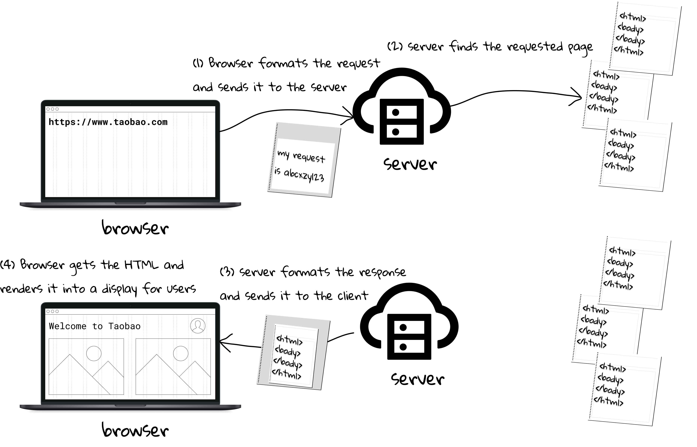
In a nutshell, it can be described as a request-response model between the client[1] and server[2].
- The client sends a request containing the name and address of the thing (e.g., web pages) the client is looking for.
- The server usually has lots of "content", so it has to locate the desired one according to the request.
- The server's response contains the actual document that the client requested.
- The client receives the response for processing (e.g., rendering)[3].
HTTP: overview
In the previous section, we know that HTML tells the browser how to display the content to the user. Clearly, we also need a set of "rules" for the communication between the client and server, and such rule is called HTTP.
Hypertext Transfer Protocol (HTTP) is an application-layer protocol for transmitting hypermedia documents, such as HTML.
HTTP is an application layer protocol that is sent over TCP (http), or over a TLS-encrypted TCP connection (https), though any reliable transport protocol could theoretically be used[4]. If you are not familiar with this networking protocol, here is the crash course: TCP is responsible for making sure that a file sent from one network node to another ends up as a complete file at the destination, even if the file is split into chunks when it is sent.
[!NOTE] Computer Networking is one of the core courses of Computer Science, but only a handful of knowledge is used in this book. You can refer to [5] (for general networking) and [6] (for HTTP) to gain an in-depth understanding.
The structure of an HTTP conversation is a simple Request/Response sequence; a client requests, and a server responds. Figure 1.13 shows the key components of request and response.
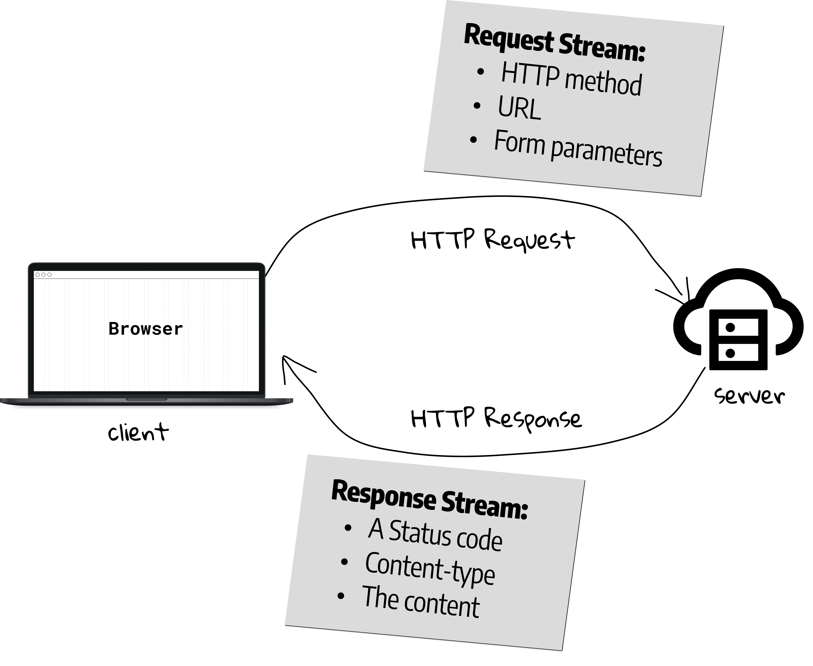
[!TIP] We will revisit request and response in Section 3.2.
Response
When it comes to response, it includes a status code indicating whether the request has been successfully completed. For example, 200 means OK, and 404 means Not Found. A complete list can be found in HTTP response status codes.
The response also include a content-type field, a.k.a. a MIME type. The MIME type tells the browser what kind of data the client is about to receive so that the client will know to process it[7]. The simplest MIME type consists of a type (the general category into which the data type falls, such as video or text) and a subtype (he exact kind of data of the specified type the MIME type represents); these are each strings which, when concatenated with a slash (/) between them, comprise a MIME type.
type/subtype
For example, text/html is the MIME type for HTML files, and image/png is the MIME type for PNG files. A list of common MIME types can be found at Common MIME types.
The third key element is the data itself (e.g., the HTML document).
Notice that the three key elements mentioned above are only parts of an HTTP response. An HTTP response has both a header and a body. The header info tells the browser about the protocol being used, whether the request was successful, and what kind of content is included in the body. The body is identical to the third key element. The following shows the response header of our HelloWorld web application, and we can find that HTTP is human-readable, providing easier testing for developers, and reduced complexity for newcomers.
HTTP/1.1 200 OK
Server: Eclipse GlassFish 6.2.2
X-Powered-By: JSP/2.3
Content-Type: text/html;charset=UTF-8
Content-Length: 169
[!TIP] You can view both the header and body in the web browser. Right-click to display the pop-up menu, and then select
Inspect Element(in Safari) orInspect(in Edge, Firefox and Chrome), and at last clickNetworktab.
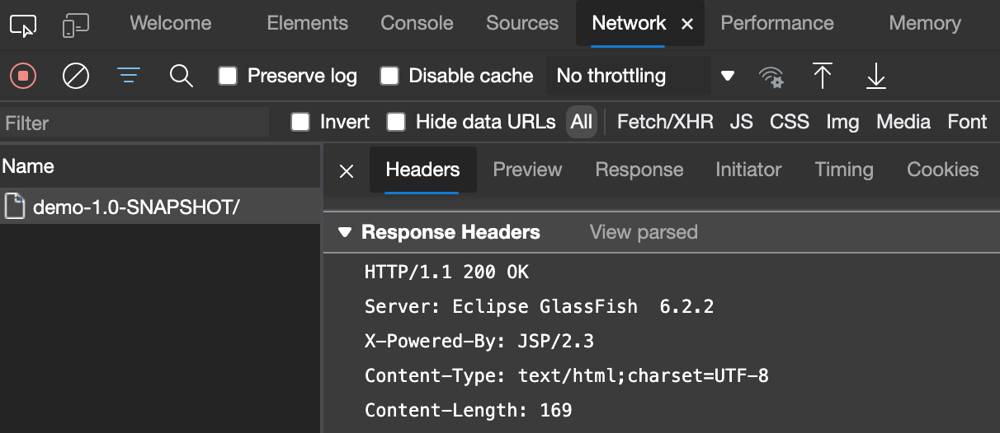
Request
The first thing you need to know about HTTP request is the request method, indicating the desired action to be performed for a given resource. The HTTP protocol defines several methods, but the ones most often are GET and POST. And you can find a complete list at HTTP request methods.
- The
GETmethod requests a representation of the specified resource. Requests using GET should only retrieve data. - The
POSTmethod submits an entity to the specified resource, often causing a change in state or side effects on the server.
Notice that the core difference between GET and POST is the semantic: GET is used for retrieve data, and POST often changes the state of server. Let's look at some examples: When you input an address and then press Enter in the browser, it is a GET request; When you input the username and password and then click Login in, it is a POST request.
The seconds key element is the URL, short for Uniform Resource Locator. URL is a text string that specifies where a resource (such as a web page, image, or video) can be found on the Internet. In the context of HTTP, URLs are called "Web address" or "link". Your browser displays URLs in its address bar, for example: https://www.bing.com. Some browsers display only the part of a URL after the "//", that is, the domain name. Remember what it is in the address bar of the HelloWorld application? It is http://localhost:8080/demo-1.0-SNAPSHOT/. Here, localhost is a special host name of the computer where the web app is running, and you can also access it by the IP address 127.0.0.1[8]. demo-1.0-SNAPSHOT is our application name, and in the URL, it is a resource path.
What is 8080 here? It is a port, designated by a number[9]. For a computer connected to a network with an IP address, a port is a communication endpoint, and below 1024 each port is associated by default with a specific protocol. For example, the default port for the HTTP protocol is 80 and the default port for the HTTPS protocol is 443.
Like the response, there is also a request header. Figure 1.15 shows the content of a request, and you can also view it in Network tab. Notice that the headers in HTTP/2 is slightly different.

Let's have a practical experimental. Try to input "Java Web" in Bing, and what can you see in the address bar after pressing Enter? It should be a long string starting with "https://www.bing.com/search?q=Java+Web&", and surely it is a GET request. Now we are in a position to discuss the next major difference between GET and POST when sending data (parameters) to the server, and this is also the third key element of a request.
For GET, all the parameters sent to server (if there are any) are appended to the URL starting with a "?", and parameters are separated with am ampersand "&". So, it has several limitations:
GETcan only send textural parameters. If you need to upload a multimedia file (e.g., an image), you have to usePOST.GETshows what you sent in the address bar. In some cases, you might keep them private (e.g., the password), and again you have to usePOST.- The length of contents in the address bar is limited[10]. If you want to send a very large parameter, even if it is textural, you still have to use
POST.
It seems that POST is an advanced GET. It is true. At the time the HTTP was invented, GET was the only method, and other methods were added later due to the increasingly complicated Internet requirements. So, should we always use POST? The answer is NO. Recall the core difference between them: the semantic. If your intention is simply to retrieve resource, then GET is the right choice.
We still have one question to be answered. The parameters of POST is NOT found in the URL, then where is it? Unlike GET, there is another part called "message body", also known as payload in a POST request, and parameters can down here in the body.
Back to our web application
Create an HTML file named test.html inside webapp folder, and write anything you learned in the last section. Then copy an PNG image, say test.png, into webapp folder. If all goes well, you should access those two resources in the web browser via URL http://localhost:8080/demo-1.0-SNAPSHOT/test.html and http://localhost:8080/demo-1.0-SNAPSHOT/test.png, respectively. Some students may have the following questions:
- Why would http://localhost:8080/demo-1.0-SNAPSHOT go to
index.jsp?
By default, the web application would look for resources named index, such as index.html and index.jsp.
- What is difference between
HTMLandJSP?
The answer, by a large extent, serves the purpose why this course exists. Those resources, like an HTML document and an image, are static, while their counterpart are dynamic. Static resources are pre-created documents, and they are the same every time people get them; dynamic are generated by computing on demand. In our example, the web browser, in fact, cannot render a JSP directly, and it is the Tomcat who translates the JSP to HTML code, and wraps it into the response.
Here are more examples with respect to the dynamic. When you search a book at amazon.com, the specific web page is generated by retrieving the data from database, rather than pre-created. In addition, some contents (e.g., book recommendation) are computed according to the user's profile dynamically. And we could claim that, every enterprise website relies on the dynamic web technologies.

[1] The term client is a counterpart of server, referring to the software that knows how to communicate with the server. When we use the term client, we usually won't care whether we're talking about the human user or the specific application (e.g., a web browser, an Android app).
[2] When we say "server", we mean either the physical machine (hardware) or the web server application (software). For example, the machine equipped with GlassFish is a server.
[3] For files like HTMLs, images, pdfs, and even videos, the web browser is able to render for a display, while other files (e.g., zip, exe) often would trigger a download.
[4] While the HTTP/1.1 and HTTP/2 are mainstream now, HTTP/3 protocol, upcoming major version of the HTTP, uses QUIC rather than TCP.
[5] Computer Networking: A Top-Down Approach, by James Kurose, Keith Ross.
[6] HTTP: The Definitive Guide, by Brian Totty, David Gourley.
[7] Besides the MIME type, Content-Type also has a charset, indicating the character encoding standard (i.e., UTF-8).
[8] Every machine that can be accessed is assigned an IP address in the digital form (e.g., 13.107.21.200). But it is hard for people to remember, so domain names (e.g., bing.com) emerge. The Domain Name System (DNS) is able to translate a domain to the IP address.
[9] The designated port 8080 is set by IntelliJ IDEA, and you can use a new one above 1024 as long as it is available.
[10] GET is limited by the URL length (about 2KB), and the maximum POST request body size is configured on the HTTP server and typically ranges from 1MB to 2GB.
1.5 Revisit The First Java Web Project
In the index.jsp, we notice the following:
<a href="hello-servlet">Hello Servlet</a>
According to what we have learned, the <a> element defines a hyperlink, and the href attribute means the link's destination, so what is the hello-servlet? Please go to the HelloServlet.java in the com.example.demo package under src/main/java.
@WebServlet(name = "helloServlet", value = "/hello-servlet")
public class HelloServlet extends HttpServlet
People with sharp eyes may notice the value = "/hello-servlet". A-ha, hello-servlet, twice. This is not coincidence, and we will investigate this observation in the next chapter.
If we have a close look at this Java file, we should find something acquainted. To be specific, in the doGet method, it outputs the HTML code. So, a servlet is able to generate HTML to the response.
[!TIP] Again,
doGet, as its name implies, will handle the GET request, and we will investigate this observation in the next chapter.
Anatomy of a Java web application
Under the build/libs folder, you can find the first_java_ee-1.0-SNAPSHOT.war, the final web application package. A WAR file (Web Application Resource or Web application ARchive) is a file used to distribute a collection of JAR-files, JavaServer Pages, Java classes, XML files, static web pages (HTML and related files) and other resources that together constitute a web application. In a nutshell, a WAR is a compressed package (like zip and rar), and you can extract the included files from it. The default name of a WAR file is illustrated in Figure 1.17. Notice that you can rename it if you like no matter what the project settings are.

Then how does Tomcat recognize and make use of this file? Please go to the home of Tomcat, under the webapps, then you can find a folder named first_java_ee_1_0_SNAPSHOT_war:
├── index.jsp
├── META-INF
│ └── MANIFEST.MF
| └── war-tracker
├── WEB-INF
| └── web.xml
| └── classes
| └── com
| └── example
| └── demo
| └── HelloServlet.class
The whole story can be described as follows: When we run the application in IntelliJ IDEA, IntelliJ IDEA will build the project and package it to a WAR file, and then copy the WAR file to the webapps folder. Finally, the Tomcat deploys this WAR for serving.
[!NOTE] We can also notice the file structure of developing in IntelliJ IDEA is different from that of running in Tomcat. In fact, you can also this WAR file on any Jakarta EE complaint container (e.g., WildFly and GlassFish).
We can also deploy our web application manually. Make sure you have stopped the application in IntelliJ IDEA , and then copy first_java_ee-1.0-SNAPSHOT.war to your desktop. In case of name conflict, please rename it to test.war.
[!NOTE] It is fine to skip the manual deployment if you are unfamiliar with command line. Also make
Java Homehas been appended intoPATHenvironment variables.
- Step 1: Move
test.warto thewebappsfolder under Tomcat home. - Step 2: Go to the Tomcat home in the terminal, and then
# for Linux/MacOS
./bin/startup.sh
# for Windows
.\bin\startup.bat
It shall display the information similar to the following if everything goes well:
Using CATALINA_BASE: /Users/zhongpu/devs/apache-tomcat-9.0.56
Using CATALINA_HOME: /Users/zhongpu/devs/apache-tomcat-9.0.56
Using CATALINA_TMPDIR: /Users/zhongpu/devs/apache-tomcat-9.0.56/temp
Using JRE_HOME: /Users/zhongpu/.sdkman/candidates/java/current
Using CLASSPATH: /Users/zhongpu/devs/apache-tomcat-9.0.56/bin/bootstrap.jar:/Users/zhongpu/devs/apache-tomcat-9.0.56/bin/tomcat-juli.jar
Using CATALINA_OPTS:
Tomcat started.
See, Tomcat started. Then you can access the welcome page by accessing http://localhost:8080/.
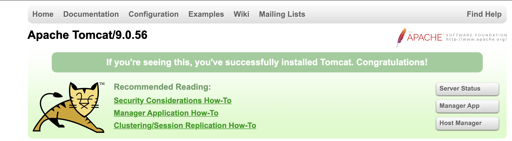
Also you can also notice that the test.war has been extracted to a test folder inside the webapps. How can we access this test? It is application under Tomcat, so according to the URL structure, just append test after http://localhost:8080/.
Now let's shutdown the Tomcat server,
# for Linux/MacOS
./bin/shutdown.sh
# for Windows
.\bin\shutdown.bat
Revisit JSP
When you take a close look at index.jsp, you will find that the JSP is nearly the same with HTML. At this point, you can think JSP is what happened when somebody introduced Java to HTML. Now you put the following code into index.jsp,
<h2><%= java.time.LocalDate.now() %></h2>
and it will display the current date in the web page.
[!TIP] The syntax
<%= %>, known as JSP expression tag, can output the result of the expression between the brackets[1].
Both JSP and servlets can generate web page dynamically, and this is why they and other similar techniques can be categorized into dynamic web pages. In this example, every time you access index.jsp, what you see can be different. To put it another way, what you see in the web pages are generated by codes. So as a counterpart, the resources, including HTMLs and images, which are written in advance, are called static.
As we have already seen, servlets alone are capable of outputting HTML code as their responses, then why is JSP introduced in Jakarta EE? Generally speaking, the reason lies in two aspects:
- Not all HTML page designers know Java. With JSP, Java developers can do Java, and HTML developers can do web pages. Further, Jakarta EE also provides the JSP tags that look like common HTML tags, so HTML developers are able to work the complete JSP work.
- Formatting HTML into a String is really ugly. Putting even marginally complex HTML into the argument to a
println()is error-prone. You might have to do a ton of work to get the HTML formatted properly in a way that still works in the client’s browser, yet satisfies Java rules for what’s allowed in a String literal[2]. In addition, too many string literals is a bad coding style which every experienced developer needs to avoid.
Although the benefits of JSP are tremendous, the pitfalls are also obvious. For example, it is impossible to view the content of a JSP in a web browser directly, and this imposes difficulties for the collaboration between front-end and back-end. Besides, the syntax of JSP is inflexible and lack of expressiveness (e.g., built-in multi-language support). To this end, JSP is no longer the desired technology in modern web developing, and other alternatives, such as Thymeleaf, are in vogue.
You own computer can be a server
In the first Java web application, your computer is a server running Tomcat, and of course, then your computer is also the client. In what follows, let's try to make the server and client run on different machines. Since it is unlikely for students to get a static public IP address in a campus, we can use the internal IP address (IPv4).
Firstly, make sure two machines are in the same network segment[3], and one machine must be the one running the Java web application (i.e., server).
Secondly, start the Java web application on the server and check the internal IP address of the server. If you are using Windows, please refer to Find your IP address in Windows. If you are using MacOS, please go to System Preferences | Network | Wi-Fi, and you can see the information:
Wi-Fi is connected to ... and has the IP address 192.168.xx.xx.
Here 192.168.xx.xx is your internal IP address, and we will use 192.168.3.1 as the example. Depending on the network, it can also be
- 10.0.0.0—10.255.255.255
- 172.16.0.0—172.31.255.555
- 192.168.0.0—192.168.255.255
Finally, we assume that you can access this Java web application via http://localhost:8080/test, then try to replace localhost with 192.168.3.1 in the web browser of the client.
If everything goes well, you shall access your website from another machine. So how can you make your website be accessed by people all over the world? The code remains unchanged, and the only and minimal requirement is a public IP address.
[1] Note that you cannot System.out.println to display the text on the web page.
[2] Try to view the source of https://book.douban.com, and you will find there are nearly 4000 lines of HTML code. Could you really write it in a Java file?
[3] If they connect to the same router, then they are in the same network segment. If you are not sure, then you can set up a hotpot in your phone, and let the two machines connect to the hotpot. Note that the phone setting up a hotpot itself can also be the client.
Exercise
1.1. Create a new Java Enterprise project named ex1.1, and modify index.jsp to enable it to
- display current month.
- display the day of the week.
1.2. Create an HTML page me.html as your personal page to introduce your name, age, hobbies, and avatar.
1.3. Copy me.html to the webapp folder of ex1.1, and then access this page after starting the server.
1.4. Try to add your personal introduction into index.jsp. You can use as many kinds of elements as you can.
1.5. Like plain Java class, we could import packages in JSP to simplify code. For example,
<h2><%= java.time.LocalDate.now() %></h2>
can be shortened into
<h2><%= LocalDate.now() %></h2>
if java.time.LocalDate is imported. Try to add import statements in index.jsp.
1.6. Please summarize the differences between the files that you see in IntelliJ IDEA (developing stage) and those that you see in Tomcat (deploying stage).
1.7. Let's try to add a classical for-loop into JSP, and display a list of Strings on the web page.
List<String> list = new ArrayList<>();
list.add("java");
list.add("ee");
list.add("is");
list.add("fun");
for (String s : list) {
System.out.println(s);
}
In JSP, all plain-old Java codes should be put between <% and >%. For example,
<%
List<String> list = new ArrayList<>();
list.add("java");
list.add("ee");
list.add("is");
list.add("fun");
for (String s : list) {
System.out.println(s);
}
%>
Unluckily, you will never see output on the web page because System.out.println will display the text on the standard output. One solution is to use JSP expression tag:
<%= s %>
Based on the above, try to output the content of list object in index.jsp.
1.8. You may notice a small image shown displayed next to the page title in the browser tab when you visit a website. Formally, it is a favicon. Try to add your own favicon for your personal home page.
1.9. Try to rename your first Java web project's URL to first-<your name initials> in IntelliJ IDEA such that you can access the welcome page via a shorter URL. For example, suppose you are Li Xiaohua, the renamed one should be http://localhost:8080/first-lxh.
1.10. Based on Ex 1.7, try to output the ArrayList using a servlet.
Chapter 2: Web App Architecture and Mini MVC
What is the minimal runnable Java program? Most people probably are able write a simple Hello World application in handwritten code. Is there a main() method, right? It is the entry point of a program. Interestingly, servlets don't have a main() method. They’re under the control of another Java application called a Container.
We have briefly mentioned the container in Section 1.1, which is the referencing runtime in Jakarta EE, and Tomcat is an example of a container. To be specific, Tomcat is an Application Server which can also be used as a Web Server. It may be a little obscure for beginners to distinguish between server and container.
- Server, commonly used in our daily language, mainly refers to web server (i.e., HTTP server). It is capable of receiving HTTP requests and sending HTTP responses.
- Container, mainly in Jakarta EE context, refers to the runtime for servlets, JSP, EJBs, etc.
When your server gets a request for a servlet (as opposed to, say, a plain old static HTML page[1]), the server hands the request not to the servlet itself, but to the container, in which the servlet is deployed. It is the container that gives the servlet the HTTP request and response, and it's the container that calls the servlet's methods (like doPost() and doGet()).
In this chapter, we will discuss the web app architecture in a high-level overview, and then introduce MVC, a useful and well-tested model when developing user interface related applications.
We will also have a taste of CSS and modern web UI framework, and learn to how to beautify the bare web page.
[1] In real world settings, people tend to use other application servers (e.g., NGINX) to send static files like images (.jpg, .png, .gif), stylesheets (.css) and JavaScript (.js) directly for better performance.
2.1 Servlet And Container
What if you had Java, but no servlets or containers? Well, you can still use Java SE to handle the HTTP request. But, it would require overwhelming efforts. Basically, some key functions you would have to implement in plain old Java on your own if no container existed:
- Create a socket connection with the server, and create a listener for the socket.
- Create a thread manager.
- Implement security.
- Convent a JSP to a Servlet.
- ...
Thanks to the container. You get to concentrate more on your own business logic instead of worrying about writing code for threading, security, and networking.
[!TIP] Tomcat is the container we are using in the textbook.
How the container handles a request
As you have already known, String is a Java class used to manage a sequence of characters; Date is a Java class used to provide the ability to manipulate time; Math is Java class used to extend the capabilities that handle mathematical operations...
What is Servlet essentially? From the point of view of code, a servlet is no exception: it is a Java class that is used to extend the capabilities of servers that host applications accessed by means of a request-response programming model.
[!TIP] A servlet is a small Java program that runs within a Web server[1].
public class HelloServlet extends HttpServlet {
...
public void doGet(HttpServletRequest request, HttpServletResponse response) {
...
}
}
Let's take a closer look at the HelloServlet.java. As the name implies, the doGet() method is to handle the HTTP GET request and then make a response. In the plain old Java code, there must another Java class to create an instance of HelloServlet, HttpServletRequest and HttpServletResponse. Without any doubt, it is the container's responsibility. The pseudo code[2] can be described as following:
// what happens in the container
HelloServlet servlet = new HelloServlet();
HttpServletRequest request = new HttpServletRequest();
HttpServletResponse response = new HttpServletResponse();
servlet.doGet(request, response);
Here's a quick overview about how the container handles a request, and it illustrates what happens behind the scene of Fig.1.12. We assume that the request is an HTTP GET.
- Step 1: User clicks a link that has a URL to a servlet instead of a static page. The clicking behavior would generate an HTTP request sent to the container.

- Step 2: The container "sees" that the request is for a servlet, so the container creates two objects: 1) HttpServletResponse and 2) HttpServletRequest.

- Step 3: The container finds the correct servlet based on the URL in the request, creates or allocates a thread for that request, and passes the request and response objects to the servlet thread[3]. Note that different accesses to the same servlet are isolated threads.
[!TIP] We will revisit the thread related issues in Section 3.1.

- Step 4: The container calls the servlet's
doGet(), which generates a dynamic page and dumps the page into the response object. Remember, the container still has a reference to the response object.
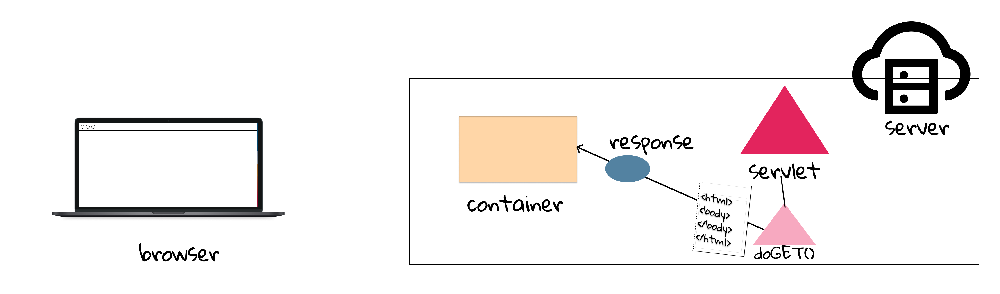
- Step 5: The thread completes, and the container converts the response into an HTTP response, sends it back to the client, then deletes the request and response objects[4].

What makes servlet a servlet
Back to the servlet itself, let's revisit how it looks in code line by line (ch1/HelloServlet.java).
// lines 1-6
package com.swufe.javaee.first_java_ee;
import java.io.*;
import javax.servlet.http.*;
import javax.servlet.annotation.*;
Every Java programmer should know what package and import are: package is to organize Java files into different modules or folders in your file systems, and importing a package allows you to access classes in the package in current Java file. Here java.io.* is the package of Java SE (under java namespace), while the remaining two belong to Jakarta EE (under jakarta namespace).
[!NOTE] In Java EE 8 or below, the namespace is
javax, and it has been changed tojakartasince Jakarta EE 8.
We leave the explanation of line 8 for the next subsection How the container finds the correct servlet.
// line 9
public class HelloServlet extends HttpServlet {
Here we have a Java class named HelloServlet extending jakarta.servlet.http.HttpServlet, so this self-defined class can reuse many methods as well fields from HttpServlet. As we mentioned above, the main purpose of a servlet is to handle requests and then make responses. Although there are other alternative communication protocols (e.g., FTP, SMTP), Jakarta EE only provides supports for HTTP(S) which are the most widely used in web era. As its name implies, HttpServlet is to used to create an HTTP servlet suitable for a Web site.
[!NOTE] 99.999% of all servlets are HttpServlets.
What about the next 0.001%? Well, in rare cases, you can even implement your own servlet to handle other network protocols in addition to HTTP(S). The following is a simple UML class diagram[5] to illustrate the servlet families.
As we can see, Servlet is an interface, and GenericServlet, an abstract class, is protocol-independent servlet. Implementation in UML is a hollow triangle shape on the interface end of the dashed line (----▻). HttpServlet is also an abstract class extending GenericServlet. Inheritance in UML is a hollow triangle shape on the superclass end of the line. It is important to understand the class diagram in a system if you want to have a quick overview in a high level.
// lines 16-24
public void doGet(HttpServletRequest request, HttpServletResponse response) throws IOException { // 16
response.setContentType("text/html"); // 17
String message = "Hello World!"; // 18
// Hello
PrintWriter out = response.getWriter(); // 20
out.println("<html><body>"); // 21
out.println("<h1>" + message + "</h1>"); // 22
out.println("</body></html>"); // 23
}
Slightly different from HelloServlet.java, we move the message variable into doGet() for the ease of explanation. First of all, doGet() is inherited from HttpServlet class, and it is used to handle HTTP GET method. To put it in another way, it is a method overriding, and to make it explicit, it is recommended to add @Override annotation before the method signature. As we discussed before, both request and response are created by the container, and they are interfaces to provide request and response information for HTTP servlets, respectively.
- Line 17:
setContentType()is a method ofHttpServletResponse, specifying the content-type, a.k.a MIME type of a response. You may refer to Section 1.4 if you are lost. - Line 19: Generally speaking, there are two kinds of data types, character text (e.g.,
.html,.txt) and non-plain text (e.g.,.jar,.png), respectively, andgetWrite()method of a response returns aPrinterWriterobject that can send character text to the client. - Lines 21-22: Write some HTML elements into the
PrinterWriter. Different fromSystem.out.println(), which is to display some texts into the standard output[7],println()ofjava.io.PrinterWriteris to display texts into a a text-output stream[8], and you can simply image that a response object wraps a text stream.

After doGet() is called, the container will convert this response object wrapped with contents into a real HTTP response and send it back to the client (i.e., a web browser in our case).
How the container finds the correct servlet
In a real system, there is a large number of servlets. So, a natural question is: how does the container the correct servlet?
Consider you are writing a letter to your friend Bob, which information can help postman deliver your letter to Bob? Well, you may asked to write down Bob's address and name in the envelope. Similarly, the container also needs each servlet's "address" and "name". Recall in the Step 3 of How the container handles a request:
The container finds the correct servlet based on the URL in the request.
The "address" (or "name") of a servlet corresponds to the resource name in a URL that people input in the address bar of a web browser.

In the last subsection, we omit line 8 of HelloServlet.java on purpose.
// line 8
@WebServlet(name = "helloServlet", value = "/hello-servlet")
It is a Java annotation introduced by Jakarta EE, which make it possible to map URLs to servlets[9], and it must be located before the class declaration. The key component of this annotation is value = "/hello-servlet", implying the resource named hello-servlet will be routed to this servlet, while name = "helloServlet is optional, and it does not really make sense in this example. You can also use urlPatterns to specify such mapping:
@WebServlet(urlPatterns = "/hello-servlet")
[!TIP] Both
valueandurlPatternsin@WebServletcan map URLs, andurlPatternsis more powerful. More rules and usages will be covered later in this book.
It is also fine to map several URLs to this servlet by specifying a list of values in value or urlPatterns.
@WebServlet(urlPatterns = {"/a", "/b"})
Then you can access this servlet via either /a or /b. By the way, like variable naming, you should provide meaningful values for servlet, so Since url mapping in the most important information of a servlet, there is a shorthand:
@WebServlet("/c")
Once upon a time: A servlet's name
Before Servlet API 3.0, setting up the URL mappings is a bit overwhelming, and you have to use the deployment descriptor (DD) to tell the container how to run your servlets and JSPs. DD is a fairly simple XML document (src | main | webapp | WEB-INF | web.xml)[10], and annotations can replace equivalent XML configuration in DD such as servlet declaration and servlet mapping.
First of all, let's have glance at the web.xml. Basically, its syntax is similar with HTML as we have studied previously. The default DD is nearly empty, except a root element <web-app>. DD provides a "declarative" mechanism for customizing you web applications without touching source code, and this flexibility is sometimes preferred because any changes of source code will result in extra re-compiling (i.e., converting .java to .class) and re-packaging.
There is no essential difference between annotation and DD in terms of servlet mapping. The main idea is the same: create a connection between a servlet and a URL. When it comes to a servlet, it is a Java class with a fully-qualified name (i.e, package name + class name). For example, HelloServlet's fully-qualified class name in ch2 is com.swufe.javaee.ch2.HelloServlet. Firstly, you have to map an internal name, which is optional in annotations but necessary in DD, to the fully-qualified class name using <servlet> element. Note that internal name is only visible to developers not to end users.
<servlet>
<servlet-name>Some Name</servlet-name>
<servlet-class>com.swufe.javaee.ch2.HelloServlet</servlet-class>
</servlet>
As we can see, <servlet-name> and <servlet-class>, nested inside <servlet>, are used to specify the internal name and fully-qualified name, respectively.
Next, you also have to further map the internal name to URLs using <servlet-mapping> element. The value inside <servlet-name> is what we have defined in <servlet>, and <url-pattern> has the same functionality with the value or urlPatterns in annotations.
<servlet-mapping>
<servlet-name>Some Name</servlet-name>
<url-pattern>/hello-servlet</url-pattern>
</servlet-mapping>
To sum up, there are THREE names of a servlet, and servlet-name is the bridge mapping the servlet to URLs:
- servlet-name: the internal name, which is logical.
- servlet-class: the fully-qualified class name, which is physical.
- url-pattern: the URL name, which is visible to end users.

Clearly, annotations make our lives easier, and they are also widely used in many popular frameworks, including Java's Spring and Python's Flask, so it is recommended to use annotations if possible.
[1] In linguistics, -let often means small. For example, booklet is a small book or group of page; tablet is a small, solid piece of medicine. So servlet, literally, means a small program running in the server.
[2] The pseudo code doesn't really exist in Jakarta EE, and it only serves for the illustration purpose here.
[3] Process means any program is in execution, and thread means segment of a process. Since the servlet may be accessed by thousands of people simultaneously, there are many threads to create servlet instances. Creating threads can be a time consuming task, so many systems would maintain a thread pool, and therefore when a new request comes, an existing thread and instance will be allocated and reused for better performance.
[4] All objects in Java are references, so when passing an object to a function, any changes of the object can be observed by anyone who holds a reference to that object.
[5] Deletions are happened in an inexplicit way, and they are under the control of Java's garbage collection.
[6] UML, short for Unified Model Language, is a general-purpose, developmental, modeling language in the field of software engineering that is intended to provide a standard way to visualize the design of a system. A class diagram in UML is a type of static structure diagram that describes the structure of a system by showing the system's classes, their attributes, operations (or methods), and the relationships among objects. However, the class diagram used in this textbook is a simplified version, not the standard one.
[7] That default destination of the standard output is the display screen on the computer that initiated the program.
[8] I/O and networking operations are often abstracted as streams. Like water flow in a stream, we often emphasize data flow in program which has a destination.
[9] Such mapping from URLs to codes (i.e., methods, classes) is often called routing.
[10] XML, short of Extensible Markup Language, is similar to HTML, but without predefined tags to use. Instead, you define your own tags designed specifically for your needs.
2.2 Search: The Way To Self-learning
When people start to learn a course or read a textbook, the first question that they may put forward to is probably: what is the key point? Now we would like to answer this question: this section is of great importance throughout this textbook, even throughout the journal of your programming learning.
Real beginners who start to learn programming often get lost when they are encountering something new, including new terms, new classes, and new methods. More or less, most people are afraid of things they are not familiar with, and this phenomenon is quite common even among expects. Technologies, especially the information technologies, are undergoing rapid changes, therefore it is impossible to rely on one book or one course if you would like to catch up with the state-of-the-art. How can you renew yourself? Well, perhaps the only way is to self-learning. And there is no doubt that a large number of "new"s would be the obstacles on your way to self-promotion. So how to escape from the vicious circle? The definite answer is short yet inspiring: search! search! search!
There are many awesome tools you can trust: search engines (e.g., Google, Bing), IDEs (e.g., Intellij IDEA), and websites (e.g., StackOverFlow). In this section, we will show you some practical skills of searching, and we believe it would be a lifelong benefit if you keep practicing.
Java Doc
Reading documentation is a basic skill while learning programming. For example, some students may find it difficult to understand this following code in Section 1.5 because java.time.LocalDate is a strange API.
<h2><%= java.time.LocalDate.now() %></h2>
Don't worry. Oracle provides the complete documentation for JDK (Java SE) API, often referred as Java Doc, according to which JDK version you are using, and it provides a user-friendly searching box. For example, in this textbook, we are using JDK 11. It is recommended to add this website into your bookmark.

After clicking the matching result, you will see the detailed API descriptions, including what this class does, what (public) methods and fields it has, and how to use its (public) methods and fields.
A date without a time-zone in the ISO-8601 calendar system, such as 2007-12-03.
For example, if you would like to convert a string "2008-8-8" (when Beijing Olympic was held) to the LocalDate object, please move to the Method Summary part, and after a quick glancing, you will notice
static LocalDate parse‚Äã(CharSequence text) Obtains an instance of LocalDate from a text string such as 2007-12-03.
[!NOTE] All good APIs are generally intuitive, and it is straightforward to grasp what it does through its name.
Based on its summary, this method probably meets your requirement. But wait a moment, it seems that it only supports strings like "2008-08-08" with padding zero. Please don't be overly concerned. Just take a brave try, and let Java compiler tells you the result. Remember: talk is cheap, show me the code[1].
You can create a simple Java project (or file) using your favorite IDE (or editor) to conduct an experiment. To keep consistency, here we adopt IntelliJ IDEA. Click New Project button in the welcome screen of IntelliJ IDEA, or File | New | Project at the menu if you have already opened an project. In the New Project dialog, select Java, and then click Next button. It is fine to leave all options as default, and input an appropriate project name (default is untitled) in your desired location, and then click Finish button. Now it is time to crate a new Java class by right clicking the src folder.
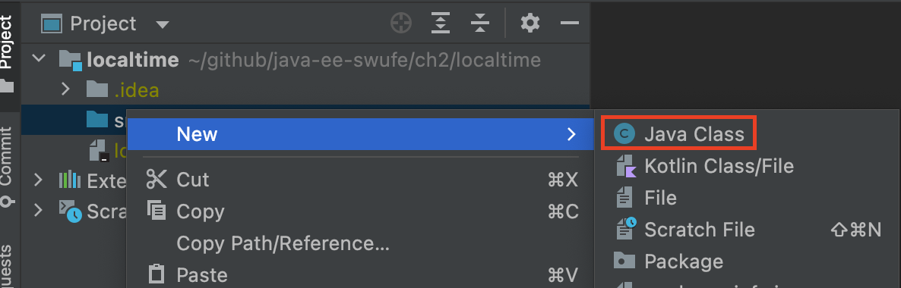
Add a main() method:
import java.time.LocalDate;
public class Main {
public static void main(String[] args) {
LocalDate time = LocalDate.parse("2008-8-8");
System.out.println(time);
}
}
Click the green right triangle button (‚ñ∂) on the left side of public class Main. Oops! An error, or technically, an exception, will be complained by Java compiler, and it is your task to fix this error. Go for it!
Sometimes it may be a bit cumbersome to crate a Java project for a simple API testing, and luckily, since Java 9, JShell, a Java read-eval-print loop (REPL)[2], has been introduced. Assume Java's path has been added into the PATH environment variable[3], you can open the terminal on Unix-like systems or CMD on Windows, and then input jshell:

And try to type System.out.println("Hello World!"); after the jshell> prompt. As usual Java code, type the following code:
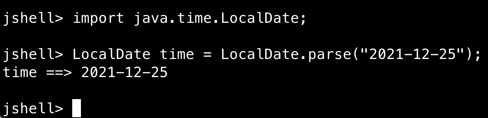
If you want to exit from JShell, you can type /exit.
Back to the main focus, let's continue to learn how to use the Java Doc. Here are more examples:
- If you want to extract the days of the year from a
LocalDateobject (e.g., 33 days of2022-02-02), you will notice
int getDayOfYear() Gets the day-of-year field.
- If you want to determine whether a
LocalDateobject is a leap year[4], you will notice
boolean isLeapYear() Checks if the year is a leap year, according to the ISO proleptic calendar system rules.
As you can see, you will easily add many powerful weapons into your programming tool box if you get comfortable with Java Doc. Last but not least, many beginners may also ask this question: should I memorize those classes and methods as I recite English words? The answer can be "yes or no". To begin with, like English words, never recite them by rote without their context. Secondly, remember the basic syntax is necessary and as for the remaining, just keep in mind that no secret, I just have much experience[5]. As long as you can find the right place to search APIs to solve your problem, forgetting is not a big deal, especially when you have to switch between different programming languages regularly.
Java EE API
Similar to JDK document as well as any other frameworks and libraries, the ability to search Java EE API can be of great help. Similarly, based on which version you are using, you shall refer to the corresponding API documentations. For example, in this textbook, we are using Tomcat 9. It is also recommended adding this website into your bookmark.
[!NOTE] The skills discussed here is essentially the same with those in the last subsection.
Recall the code in HelloServlet.java, and some beginners might get lost when they see response.getWriter(). Again, ask the API documentation for help. Luckily, the number of classes introduced by Tomcat is limited, and we can easily locate HttpServletResponse under All Classes panel. By the way, you can use the shortcut (Ctrl + F in Windows/Linux, and Cmd + F in MacOS) to locate a specific word quickly.

And soon you will also find that getWriter() is not defined by HttpServletResponse, and instead, it is inherited from the interface javax.servlet.ServletResponse. Then follow this hint by clicking the hyperlink, and we shall find some information important:
(ServletResponse) Defines an object to assist a servlet in sending a response to the client. ... To send character data, use the
PrintWriterobject returned bygetWriter().
Still want to know about PrintWriter? Just ask the documentation for help, again! So, learning programming, especially when looking up API documentations, is much like looking up a dictionary.
IntelliJ IDEA
Modern IDEs, such as IntelliJ IDEA and Eclipse, provide built-in supports for API documentations looking-up, and they are often the main entry-point if you would like to inspect the source code. In this textbook, we will take IntelliJ IDEA, the most popular IDE among Java developers, as the running example.
Firstly, when you move the cursor to a Class, Interface, or method, the corresponding description of the API. For instance, the following illustrates what will pop up when you move the cursor to String.
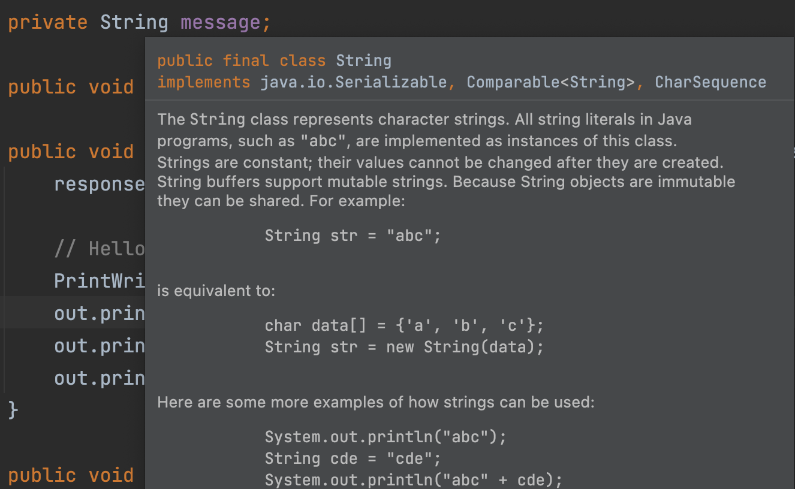
You can practice this useful skill by moving the cursor to setContentType and HttpServlet, respectively.
Secondly, when you move the cursor and please keep pressing-down the Ctrl in Windows/Linux and Cmd in MacOS, you will notice that Class, Interface, method, and variables are becoming hyperlinks. So you could jump among Java codes and locate their implementations. FOr example, if you are curious about how println of PrinterWriter is implemented, you could see the following (don't worry if you cannot get grasp of the code itself):
public void println(String x) {
synchronized (lock) {
print(x);
println();
}
}
Anyway, all classes, interfaces and methods are not in a black-box now, and you can inspect them clearly.
[1] It is a famous quote by Linus Torvalds, the father of Linux.
[2] REPL is an interactive tool for leaning programming language, mostly found in scripting languages such as Python, JavaScript and Ruby, which enables users to write codes on the command line and see the results immediately.
[3] PATH is an environment variable that is used by Operating System to locate the executive programs (e.g., .exe on Windows) or java binaries (e.g., java or javac command). Instruction on how to set environment path for Java can be found here.
[4] Leap years are years where an extra, or intercalary, day is added to the end of the shortest month, February. For example, in the Gregorian calendar, each leap year has 366 days instead of 365.
[5] A Chinese old saying: 无他，但手熟尔.
2.3 A Brief Introduction To MVC
In our simple first_java_ee project, we have presented servlets and JSP, two of the most essential components in Java EE's web profile. Both can generate web pages dynamically through a request-response model. And we also briefed discussed the importance of introducing JSP in Section 1.5.
Now let's move forward, and consider the case that you are going to design and develop a large web site. When it comes to large, it mainly means that it provides many functionalities, and therefore, many web pages. For example, for a book-selling website like Amazon, it must meet the basic requirements as the following:
- User sign up and login
- Admin add/delete/modify books
- Display the books
- Search the books
- Purchase books
- Track the delivering of books
- ...
Will you create a servlet for each single functionality point?[1] If so, it would result in a mess. The reasons are several-folds, and the advantages of JSP can be the pitfalls of servlets. Then, can we replace all servlets with JSP? Well, technically, it is possible, and it would result in a bigger mess. No one really likes to write Java code inside HTML, and it is quite UGLY.
Combine servlets and JSP
To answer such vexed question, we can use both servlets and JSP at the time, and the two messes together can magically be a harmony. Why can it be? Well, the basic idea is simple: make each one shoulder a different responsibility. To be specific, servlets deal with the business logic, such as retrieving data from database[2], while JSP only cares about how to display the data (i.e., presentation)[3]. Take a restaurant an example. In the restaurant industry, some parts of a restaurant are referred to as front of house and others as back of house. Front of house is where customers are. Back of house is where the chefs work in the kitchen[4]. Dishes (like data) are made by chefs (back-end, like servlets) and delivered to customers by waiters (front-end, like JSP). Note that waiters themselves do not make dishes directly, and chefs do not contact with customers directly either. Of course, this analogy is not completely technically correct, because the dishes delivered to customers are exactly what chefs made, however the data presented to the client can be different from what servlets generated.

Let's consider the case of user login in a book-selling website. When a user sends her name and password by making an HTTP request, the destination servlet would authenticate her by further retrieving data from the database to determine whether this name exits, and whether password is matched. Suppose both the name and password are correct, the servlet mostly would send data wrapped with the user's profile in a Java object or simply JSON[5], or simply with an OK message, such as "Login success", to JSP. And suppose either the name and password is wrong, the servlet mostly send data wrapped with an error message, such as "Login failed", to JSP.
Before we move on, let's have a warm-up to figure out how a servlet is forwarded to JSP, without considering the extra data transferred. Recall that in index.jsp, the HTML <a href="hello-servlet">Hello Servlet</a> can create a clickable hyperlink to hello-servlet, and that happens in the browser. However, the process that a servlet is forwarded to JSP happens in the server through the same request. Sound a little obscure? Let the code talk. First of all, create a.jsp under webapp, and add anything you like inside it. Then create ForwardServlet.java under src | main | java | com.swufe.javaee.ch2, and add the following code inside doGet() of ForwardServlet.java:
RequestDispatcher dispatcher = request.getRequestDispatcher("a.jsp");
dispatcher.forward(request, response);
The default URL name of ForwardServlet is /ForwardServlet, and try to access it. If everything goes well, you shall see the content of a.jsp. Aha! The servlet successfully forward a request to another JSP. Please note that it is to forward a request. To put it another way, both servlet and JSP are using the same request object, and the forwarding happens in the server. People who are with shape eyes might notice that although the display content is from a.jsp, the URL remains /ForwardServlet.
Let's have a coffee and take a break as information is overloaded in the last paragraph. Don't get depressed if you have troubles in understanding what it means. We will talk about RequestDispatcher again in the latter of this book, and you can also explore this API on your own by applying the skills you learned in the last section.
MVC
Now it is time to introduce MVC, a commonly used software design pattern. In the subsection, we separated the roles of servlets and JSP, and in fact, we can further take some responsibilities out of servlets.
Let's revisit the business logic, which is mainly related with the database. In the book-selling website example, it may include:
- User authentication.
- Retrieve a user's profile.
- Add/delete book.
- Predicate "Guess you like" from the recommendation system.
- ...
A simple question is: must those business logics be in servlets? Or, what are the advantages if we can take them out of servlets? The benefits of the further separating are mainly tremendous. Not every Java programmer needs to know Java EE, and they would like to write plain old Java code[6]. Also, plain code Java code with Java EE runtime will occur in less performance overhead. And most importantly, it paves the way to reuse existing awesome Java libraries. For example, the recommendation system may be written in plain old Java code, and it can used not only by the web applications, but also by Android, iOS and desktop applications. You should never assume that your business logic will be accessed only from the web.
Therefore, we can take the business logic out of the servlet, and put it in a "Model" (i.e., a reusable plain old Java class). The model is a combination of the business data (like the profile of a book) and that methods (rules) operate on that data. The role of a JSP remains the same. It acts as a "View" and is responsible for the presentation. In the same time, the servlet degrades to a "Controller", and it mainly takes user input from the request and figures out what it means to the model. It also tells the model to update itself, and makes the new model state available for the view.
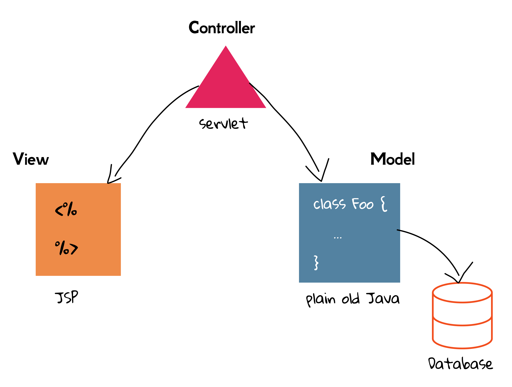
To put them together, the whole web application is divided into three parts: Model, View and Controller (a.k.a., MVC). MVC is a pattern in software design commonly used to implement user interfaces, data, and controlling logic. It emphasizes a separation between the software’s business logic and display. This "separation of concerns" provides for a better division of labor and improved maintenance. Also note that, MVC is not specific to servlets and JSPs. The clean separation of business logic and presentation is just as valid in any other kind of application.
Understanding MVC is important when developing a web application, and we will stick with this design pattern throughout this book from now on. We also will discuss how to improve this MVC design in the latter of this book.
[1] Separating different functionality points into different classes/methods is a common and well-tested approach in developing software, because no one would like to maintain a giant class/method.
[2] Database means the location where data is stored literally. In fact, it is one of the core courses in Computer Science, and is also of importance for web developing. Some fundamental introduction to database will be covered in the later of this book.
[3] The component that cares about the business logic is also known as back-end. As the counterpart, the one that cares about the presentation is also known as front-end. For example, people who develops HTML, CSS and JS are front-end developers.
[4] This example is adapted from Rust Book.
[5] JSON, short for JavaScript Object Notation, is a lightweight data-interchange format, and it is "self-describing" and easy to understand. For example, the JSON String {"name":"John", "age":30} defines an object with 2 properties, and each property has a value. JSON is widely used in web, and we will cover it in the later.
[6] In software engineering, plain old Java code means ordinary Java code, not bound by any special restriction.
2.4 Hands On MVC (1)
In the last section, we have studied the basic principles about MVC, and it is time to get your hands dirty to write a practical web application with MVC design. Particularly, you will learn a large number of modern web developing knowledge. Although this app is very small, the main principle remains the same even if you are going to build something huge. By the way, today's small app is tomorrow's dot-com success. Keep going!
We will use the book-selling website as our running example. Firstly, let's summarize the requirements. User can select the genre of books in the web page, and send an HTTP request to the server. Then the destination servlet would retrieve book recommendation from a model, and then send back the result to a JSP for display. All code in this section can be found in mini-mvc.
Front-end design
Although it is possible to put HTML elements into both JSP and HTML, a plain HTML is always preferable if no dynamic content is required. So let's get started with the front-end design with a plain HTML. First of all, let's try to figure out why index.jsp is launched automatically when you start the web app. This is because the default start page of most web servers and containers is index, including index.html, index.htm, and index.jsp.
[!NOTE] By default, Tomcat would locate and display the index page (e.g.,
index.html,index.jsp). If it is not found, there will be a 404 error. Suppose your entry page is another file, sayform.html, and you can still visit it by its URL explicitly. For example, http://localhost:8080/myapp/form.html.
In order to build a website from scratch, we delete the auto-generated HelloServlet.java and index.jsp, and create an empty index.html under webapp folder as the entry point of our web app.
The UI interface of our book-selling website only contains:
- A descriptive title (clearly it is
<h1>element) - A select box
- A button

Let's recall the expected behavior in this web page: a user selects a genre of books and sends an HTTP request by clicking the submit button.
[!NOTE] In HTML, we shall use the
<form>tag to send an HTTP request.
Those elements which are capable of shipping with input data can be used inside <form>, and they are usually called form element. <select> is the one that is able to create a drop-down list with several options. The full HTML code is as what follows:
<form>
<label for="books">Choose a genre:</label>
<select name="books" id="books">
<option value="novel">novel</option>
<option value="history">history</option>
<option value="math">math</option>
<option value="programming">programming</option>
</select>
<br><br>
<input type="submit" value="Submit">
</form>
[!TIP] If you have some troubles in understanding various HTML tags, please visit HTML Tutorial.
The <label> here is optional, and is used to represent a caption for an item in a user interface. Otherwise, users may have no idea of what <select> is going to do. The attribute for is to specify the id of the form element the label should be bound to.

Let's take a closer look at <select>. Its id attribute serves a unique identifier, as all HTML tags do, and id here also used to bind to the <label> element as we have discussed. What is name attribute used for? We will leave this problem to the latter.
We can notice that four <option> elements are nested inside <select>, and this is used to define an option in a select list. The <option> tag can be used without any attributes, but you usually need the value attribute, which indicates what is sent to the server on form submission. Some beginners might find it difficult to distinguish between the value and the element content. In fact, they have nothing to do with each other, and Fig 2.18 illustrates the differences.
You can either open index.html via a web browser directly in the file manager (such as Finder on MacOS, Explorer on Windows, Nautilus on Ubuntu), or open it via built-in preview in IntelliJ IDEA. Now we have finished the front-end design, but an important question emerges: how can HTML, or more specific, <form> send data to the server? Not surprisingly, it is specified by a <form> attribute.
<form action="some_servlet">
...
</form>
As the code shows, the value of action is the destination servlet's URL name. In other words, a servlet whose URL name is some_servlet is going to handle this HTTP request. By the way, HTTP also defines a set of request methods to indicate the desired action to be performed for a given resource, and the default method in <form> is GET. You can also specify the HTTP method using method attribute explicitly.
<input> can be in various forms given different type attribute. For example, submit would render it as a button, and it shall send an HTTP request (i.e., submit a form) after clicking. It can also be replaced with a <button> tag:
<button type="submit">Submit</button>
And two ways are equivalent. You can try out different input types if you are interested, such as:
<input type="text"><input type="color"><input type="date"><input type="password">- ...
Back-end design
Let's create a servlet BookServlet.java, with the URL name /book, to receive the data from the front-end. First of all, make sure the action attribute of <form> is set to book.

[!TIP] You will encounter some new APIs. Don't panic, and be brave to look up them using the skills in Section 2.2.
Based on the introduction to HTTP in Section 1.4, the data is wrapped in the HTTP request, and they are usually called parameters*. Then how to extract parameters from the request? Luckily, HttpServletRequest has an API called getParameter().
String getParameter(String name) Returns the value of a request parameter as a String, or null if the parameter does not exist.
Remember the name attribute of <select>? It is actually the name of a parameter.

And the following is our first version of doGet():
PrintWriter out = response.getWriter();
response.setContentType("text/html");
String book = request.getParameter("books");
out.println("Book Selection:");
out.println(book);
(Note that we don't output HTML tags, but output the content directly. It still works because the web browser is smart enough to detect out intention.)
Stop here and try to start this web app, and observe what you see when you click the button in index.html. Note that such iterative test-driven approach is very common in software developing. Write some code and then test if it works well. If so, keep going and write more code. Otherwise, go back to fix the bug.
Now it is time to write code for models. In this web app, the Model is to make books recommendations, and it is plain old Java code. We firstly create a model package, and then create a Recommendation class:
public class Recommendation {
public List<String> getBooks(String genre) {
List<String> result = new ArrayList<>();
if (genre.equals("novel")) {
result.add("The Great Gatsby");
result.add("Gone with the Wind");
} else if (genre.equals("history")) {
result.add("1587, a Year of No Significance");
} else if (genre.equals("math")) {
result.add("The Linear Algebra Survival Guide");
} else if (genre.equals("programming")) {
result.add("Head First Java Web");
result.add("Effective Java");
}
return result;
}
}
Then BookServlet, as the Controller, obtains the model from Recommendation. Here is our second version of doGet() (repeating code is omitted).
List<String> books = new Recommendation().getBooks(book);
for (String b : books) {
out.println(b);
}
(Again, keep the design-code-test cycle in mind.)
Lastly, we need a View for this web app, and take the presentation role out of BookServlet. So, let's create a result.jsp. In the last section, we have learned how to forward a request to JSP using RequestDispatcher, and there is still unsolved issue: how to send data back to JSP? Understanding such data share mechanism is an essential part in web developing, and we will cover in detail in the later of the book. Now we only introduce one of the methods.
Recall that when forwarding, both the servlet and JSP share the same request object, so any changes to the request by the servlet shall also be observed by the JSP. Intuitively, the main idea is to request.setXXX() in BookServlet.java, and then request.getXXX() in result.jsp[1]. And this is exactly how the servlet's API is designed. The following is our third (and final) version of this web application.
String book = request.getParameter("books");
List<String> books = new Recommendation().getBooks(book);
request.setAttribute("books", books);
RequestDispatcher dispatcher = request.getRequestDispatcher("result.jsp");
dispatcher.forward(request, response);
As we can see, the setAttribute() method does what we really want! Its second parameter is the object we store, and its first parameter is the name of the object. Note that the exact name is not important, as long as we can keep it consistent when retrieving this object.
void setAttribute(String name, Object o) Stores an attribute in this request.
And then we can use getAttribute() in result.jsp expectedly. Note that this method would return an Object, so we shall convert it back to List<String> first.
<%
List<String> books = (List<String>) request.getAttribute("books");
for (String b : books) {
%>
<%= b %>
<% } %>
Standard Java code in JSP is put inside <% %> tags, and this is known as scriptlet code.
The <%= %> is JSP expression tag, which was introduced in Section 1.5.
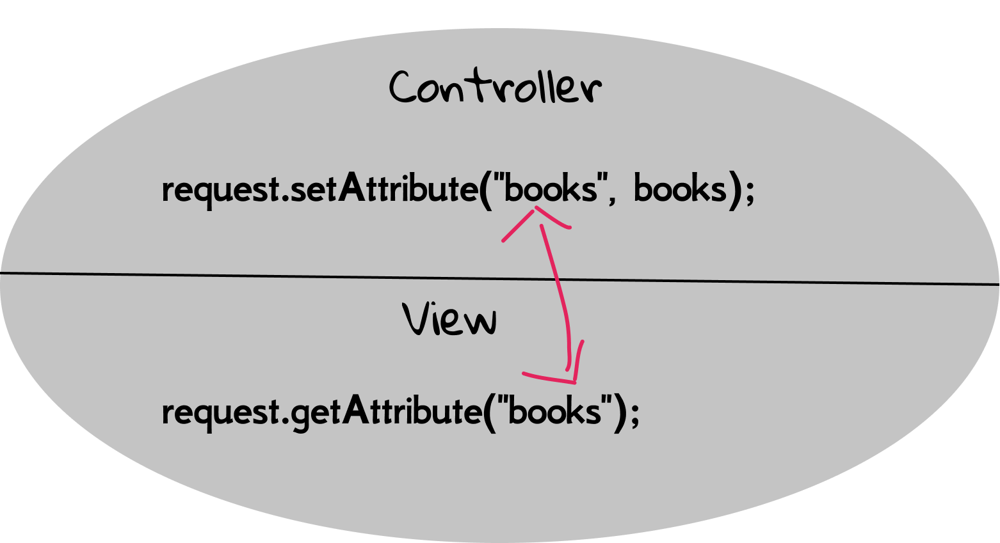
Some beginners may ask, where does the variable request come from? Good question. It is one of implicit objects in JSP, and we will introduce more implicit objects in the latter of this book. For example, request is an instance of HttpServletRequest, out is another implicit object (an instance of PrintWriter) for the ease of output. So the code above can be rewritten as:
<%
List<String> books = (List<String>) request.getAttribute("books");
for (String b : books) {
out.println(b);
}
%>
Congratulations! You have built your first mini MVC web application! Although there are still some pitfalls in its design and code, it can be a good prototype for any complex projects based on serlvets.
A caution before moving on
Understanding this mini MVC project is very important for later more advanced topics, So please be patient, slow down and learn it by doing again and again. In particular, some beginners may be confused about the repeated names, such as "books" and "book", because those names have different meanings in different contexts. If you have the similar doubt, please refer to Fig 2.17-2.21.
In addition, although it is possible to sent HTTP requests to JSPs directly, please avoid do this if possible, because it would break the MVC design.
[1] Such code paradigm is called setter/getter, and it is widely used in many object-oriented programmings, such as Java, C#.
2.5 Hands On MVC (2)
In this section, we are going to enhance the mini MVC project by introducing CSS. It is not mandatory for Java developers to master front-end technologies, but enriching your developing toolbox is always welcome if the input-output ratio is relatively small[1]. And strictly speaking, when it comes the front-end, both CSS and JS are essential. However, in this textbook, we only focus on basic CSS, a practical skill with small input-output ratio, and further self-learning is welcomed.
[!NOTE] You can jump to the next chapter directly if you are not interested in the front-end skills.
A brief introduction to CSS [2]
Cascading Stylesheets — or CSS — is the first technology you should start learning after HTML. While HTML is used to define the structure and semantics of your content, CSS is used to style it and lay it out[3]. For example, you can use CSS to alter the font, color, size, and spacing of your content, split it into multiple columns, or add animations and other decorative features.
Fist of all, let's have a look at CSS syntax. CSS is a rule-based language — you define rules specifying groups of styles that should be applied to particular elements or groups of elements on your web page. For example "I want the main heading on my page to be shown as large red text."
The following code shows a very simple CSS rule that would achieve the styling described above:
h1 {
color: red;
font-size: 5em;
}
The rule opens with a selector . This selects the HTML element that we are going to style. In this case we are styling level one headings (<h1>). We then have a set of curly braces { }. Inside those will be one or more declarations, which take the form of property and value pairs. In our example, we have the color property, which can take various color values. We also have the font-size property. This property can take various size units as a value.
The CSS code above can be put in the <style> tag nested in <head>, and you can find the complete code in index2.html under mini-mvc | src | main | webapp.
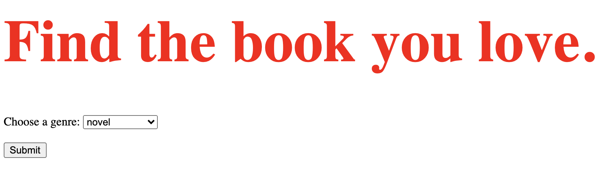
Of course, this new HTML page is far away from beauty, but it is a good start for styling. In practice, we often write CSS code in a single file (.css) for the ease of reuse[4], and then link to that CSS file in HTML via <link> tag nested in <head>. You can find the complete code in index3.html under mini-mvc | src | main | webapp.
<link href="index.css" rel="stylesheet">
The key to CSS: selector
CSS selectors define the elements to which a set of CSS rules apply.
When learning CSS, people often have to understand how to use a selector as well as the supported properties and values given a selector. Generally speaking, a selector is used to select the element(s) you want to style. Here is a complete selector sheet. In our example, the selector h1 is to select all <h1> elements.
Each CSS rule starts with a selector — or a list of selectors — in order to tell the browser which element or elements the rules should apply to. All the examples below are valid selectors or lists of selectors.
h1
a:link
.manythings
#onething
.box p
.box p:first-child
h1, h2, .intro
It seems a bit obscure. Calm down. As for basic selectors, there are only three forms:
- Type selector. Selects all elements that have the given node name. For example,
h1will match any<h1>element. - Class selector. Selects all elements that have the given class attribute. For example,
.indexwill match any element that has a class of "index". - ID selector. Selects an element based on the value of its id attribute. There should be only one element with a given ID in a document. For example,
#tocwill match the element that has the ID "toc".
In index3.html, we define two classes, foo and bar, respectively.
<h2 class="foo">Class foo is #568900</h2>
<h2 class="bar">Class bar is rgb(10, 20, 100)</h2>
The following is CSS with class selector:
.foo {
color: #568900;
}
.bar {
color: rgb(10, 20, 100);
}
Recall the <select>'s id attribute is books, and the following is CSS with ID selector:
#books {
background-color: cadetblue;
}
As a final exercise, we firstly add class="button" for the submit button, then in index.css. Preview index3.html, and try to understand how it works.
.button {
background-color: #4CAF50;
border: none;
color: white;
padding: 15px 32px;
text-align: center;
text-decoration: none;
display: inline-block;
font-size: 16px;
margin: 4px 2px;
cursor: pointer;
}
UI framework: Bootstrap
Mastering CSS and JS is important if you would like to have a deep understanding about the front-end. However, due to the time limit of a one-semester course, we won't focus on them. In addition, the main aim of this book is to train yourself as a qualified back-end Java web developer. So, how can you write a modern web page with very limited front-end skills? Well, it is possible as there are many awesome UI frameworks (e.g., Bootstrap) available that help you build elegant web pages like playing lego games.
Bootstrap, the world’s most popular front-end open source toolkit, is directed at responsive, mobile-first web development. What does Bootstrap do for you exactly? Well, it has extensive prebuilt CSS rules for commonly used UI components, including buttons, forms, navbar, so you can apply those rules without writing them manually. Recall the stylish button above. Bootstrap also includes several predefined button styles (such as btn-primary), each serving its own semantic purpose.
<button type="button" class="btn btn-primary">Primary</button>
<button type="button" class="btn btn-secondary">Secondary</button>
<button type="button" class="btn btn-success">Success</button>
<button type="button" class="btn btn-danger">Danger</button>
<button type="button" class="btn btn-warning">Warning</button>
<button type="button" class="btn btn-info">Info</button>
<button type="button" class="btn btn-light">Light</button>
<button type="button" class="btn btn-dark">Dark</button>
<button type="button" class="btn btn-link">Link</button>
And the following is what will display:
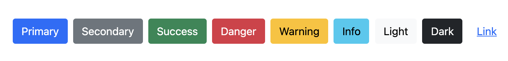
As long as you get used to those built-in CSS classes, you are able to create modern web pages as you wish. For example, you can use the card to introduce cats in HTML. And we also adapt an album example based on card component. The complete code can be found at card.html and animals.html, respectively, under mini-mvc | src | main | webapp.
<div class="card text-white bg-secondary mb-3" style="width: 18rem;">
<img src="cat.png" class="card-img-top" alt="cat">
<div class="card-body">
<h5 class="card-title">Cat</h5>
<p class="card-text">The cat is a domestic species of small carnivorous mammal.</p>
<a href="#" class="btn btn-primary">Find more</a>
</div>
</div>
With the help of Bootstrap, you are able to build a non-trivial web page like this easily:

Client-side frameworks
Now, JavaScript is an essential part of the web, used on 95% of all websites[5], and the web is an essential part of modern life. The advent of modern JavaScript frameworks has made it much easier to build highly dynamic, interactive applications. A framework is a library that offers opinions about how software gets built.
There are many frameworks out there, but currently the "big three" are considered to be the following.
- Angular: Angular is an open-source web application framework led by the Angular Team at Google and by a community of individuals and corporations.
- Vue: Vue is an open-source model–view–viewmodel front end JavaScript framework for building user interfaces and single-page applications.
- React: React itself is not technically a framework; it's a library for rendering UI components. React is used in combination with other libraries to make applications.
Those frameworks are beyond the scope of this book. People who are interested in front-end skills can explore any of them through self-learning.
[1] Input-output ratio is mainly used in material control, which indicates the relation between the quantity of material used in the production and the quantity of final output. In general, the smaller input-output ratio, the bigger benefits in a given time/cost.
[2] This subsection is adapted from Learn to style HTML using CSS.
[3] Since JSP will finally output an HTML page, CSS can be also used to style JSP.
[4] CSS code can also be specified in the style attribute of the targeted element. For example, <h1 style="color: red; font-size: 5em;">Find the book you love.</h1>. But this inline style is infrequent, since it would make a chaos for the HTML structure and result in troubles for maintenance. Anyway, avoid using CSS in this way, when possible.
[5] https://w3techs.com/technologies/details/cp-javascript
Exercise
2.1. In fact, the container calls the servlet's service() method, rather than doGet() directly. Please explain the functionality of service().
2.2. Please draw the UML class diagram for HttpServletRequest and HttpServletResponse.
2.3. Create a new Java Enterprise project named ex2.3. Then delete the annotation in HelloServlet.java and map this servlet to /hello and /hi in DD.
2.4. Based on ex2.3, crate a new servlet MeServlet.java, and output the content of your personal page in Exercise 1.2 through PrinterWriter.
2.5. Please find the appropriate API from java.lang.Double by searching Java Doc, which is capable of converting a string to double (not the boxed Double).
2.6. Please find the appropriate API from java.util.Arrays by searching Java Doc, which is capable of converting an array to an ArrayList.
2.7. Based on ex2.3, add the line
LocalDateTime time = LocalDateTime.now();
into doGet() method, and then output this object to the web page through PrinterWriter.
2.8. How is the isEmpty() method of ArrayList implemented? Use IntelliJ IDEA to tickle your curiosity.
2.9. In Recommendation.java of project mini-mvc, can we replace genre.equals("novel") with genre == "novel"?
2.10. Please refactor Recommendation.java by replacing if structure with switch.
2.11. Please add proper break line for our second version of mini-mvc in BookServlet.java. (Hint: using <br> element)
2.12. The second parameter's type of setAttribute() is Object. Try to explain why.
2.13. Please use <ol> and <li> element in result.jsp for our final version of mini-mvc to define an ordered HTML list for the recommended books.
2.14. Try to add method="POST" in <form> for our final version of mini-mvc, and then make some corresponding changes in BookServlet.java.
2.15. Add <p>I am a paragraph</p> in an HTML file, and then add two CSS rules:
p {
color: red;
}
p {
color: blue;
}
Which color is the <p>? We may notice there is a conflict in CSS rules, and can you draw any conclusion?
2.16. Add <p class="special">What color am I?</p> in an HTML file, and then add two CSS rules:
.special {
color: red;
}
p {
color: blue;
}
Which color is the <p>? Again, there is a conflict, and can you draw any conclusion?
2.17. Try to stylish your personal home page in Exercise 1.2 by integrating with Bootstrap framework.
2.18. CodePen is an online community for testing and showcasing user-created HTML, CSS and JavaScript code snippets. Try to adapt CV Gero Zayas to create your own CV.
2.19. Try to crate an HTML page to display the same content with Office of Academic Affairs by integrating with Bootstrap framework. Note that it should contain a Navbar.
2.20. Read Chapter 3 Mini MVC Tutorial of HFBook, and then create a new project called beer to implement all code in MVC design. (Hint: the final code looks like Code for Servlet version three in page 89)
Optional: you can even integrate with Bootstrap framework to beautify the web pages.
Chapter 3: In-depth Servlet
In this chapter, we study the most important component in Java EE' web profile, servlet. As we have learned in the last chapter,
Servlet is a Java class that is used to extend the capabilities of servers that host applications accessed by means of a request-response programming model.
A servlet's job is to take a client's request and send back a response. The request might be simple: "get me the welcome page." Or it might be complex: "Complete my shopping cart check-out". It is not our intention to provide a complete users' guide for servlet usage. Rather, we focus on servlet's request and response in depth. Again, please make your hands dirty through extensive programming exercises.
3.1 Servlet: from Birth to Death
In Chapter 2, we looked at the Container's overall role in a servlet's life: it creates the request and response objects, creates or allocates a new thread for the servlet, and calls the servlet's service() method, passing the request and response references as arguments. Please review the whole process in Section 2.1.
Note that we previously mentioned "the container calls the servlet's doGet()", but technically, it calls service() instead.
void service(HttpServletRequest req, HttpServletResponse resp) Receives standard HTTP requests from the public service method and dispatches them to the doMethod methods defined in this class.
As there are several HTTP methods (e.g., GET, PUT, DELETE), service() can dispatch the received request to the matches doXXX(), and such API design provides extra flexibility.
In what follows, we need to investigate several questions with respect to a servlet's life:
- when was the servlet class loaded?
- when did the servlet's constructor run?
- when should your servlet initialize resources?
- when should it clean up its resources?
Those questions may look trivial at first, but solving them is of importance when developing some critical web applications.
Servlet lifecycle
The servlet lifecycle is simple; there's only one main state: initialized. When it is initialized, it is able to handle requests through service(). If the servlet is not initialized, then it is either being initialized, being destroyed, or it simply does not exist.

[!NOTE]
init()is NOT constructor. See more at Why we use init() rather Constructor.
In Java, an object is usually crated through its constructor, such as String s = new String(). Then should we write a constructor for our self-defined servlet (e.g., HelloServlet.java)? Then answer is NO, because the container would use the complier supplied default constructor which is no-argument[1]. After that, the init() method is called to initialize some resources required by the servlet. When finished, the servlet is initialized, and this is where the servlet spend most of its life. Also, the container gives the servlet to clean up using destroy() before the servlet is killed (i.e., made ready for garbage collection).
Note that both init() and destroy() are called only once throughout a servlet's life. In HelloServlet.java, we already saw the usage of init(), and it simply initialized a String object.
private String message;
public void init() {
message = "Hello World!";
}
We can design a small test to verify that init() is called only once: we add an unassigned int member variable in a servlet, increment it by one in init(), and them display this variable in doGet(). You will notice that no matter how many times this servlet is accessed, the value of variable remains 1. The detailed implementation leaves for an exercise.
So, when do we need to initialize something for a servlet? It could be a little abstract without detailed scenarios. For example, the database connection is required to query a database, and code of opening the connection object can be put inside init(). Similarly, in case of resource leak, closing the connection object can be in destroy()[2].
Like doGet() and doPost(), your servlet inherits those lifecycle methods from parent classes or interfaces. And Fig 3.2 shows some essential inherited methods from a bird's-eye view, and it is also a verbose version of Fig 2.4[3].
[!NOTE] Do not try to memorize all fo these methods! Just get a feel for how the API works.

- Servlet interface: It says that all servlets have these five methods, and the three in bold are lifecycle method.
- GenericServlet class: It is an abstract class where most of your servlet's "servlet behavior" comes from.
- HttpServlet class: It is also an abstract class implements the
service()method to deal with HTTP related issues.
Do not get depressed when you see too many inherited methods because in most (more than 99.999%) cases, you need only to override doGet() and/or doPost() for your own servlet. And this is the method responsible for your web application is supposed to do.
Servlet and thread
Before we move on, we have to introduce the background of thread, an importance concept in operating systems.
Process means any program is in execution. Thread means segment of a process.
A single Java program, like a servlet, is a process. A thread is like a virtual CPU that can execute your Java code - inside your Java application. For example, in a downloading program, it may contain several threads to fetch the data from the server concurrently to achieve a higher speed. In Java, there is at least one thread, main thread that every Java application has.
To demonstrate the current execution, we design a multi-threads program in the following[4]:
class Servlet {
public void service() throws InterruptedException {
System.out.println("start to service...");
for (int i = 0; i < 10; i++) {
System.out.println(i);
Thread.sleep(500);
}
System.out.println("end of service...");
}
}
The Servlet class is used to mimic a servlet, and it has a service() method to output values from 1 to 10. Note the Thread.sleep(500) is used to cause the currently executing thread to sleep for 500 milliseconds, and this is to mimic a consuming task in a servlet.
class Container implements Runnable {
private final Servlet servlet;
public Container() {
servlet = new Servlet();
}
@Override
public void run() {
try {
servlet.service();
} catch (InterruptedException e) {
e.printStackTrace();
}
}
}
The Container class is used to mimic the container, and for simplicity, we add a Servlet as its member variable. Runnable is an interface that is to be implemented by a class whose instances are intended to be executed by a thread. When an object implementing interface Runnable is used to create a thread, starting the thread causes the object's run() method to be called in that separately executing thread.
public class Main {
public static void main(String[] args) {
Container container = new Container();
Thread t1 = new Thread(container);
Thread t2 = new Thread(container);
t1.start();
t2.start();
}
}
In the main() method, we firstly crate a Container instance, and therefore, a Servlet instance, and then start two threads to service(). As you expected, the output from 1 to 10 of the two threads are concurrently executed. It is worthwhile to observe the output on your own, and it is left as an exercise for the reader.
Now it is time for REAL servlets: suppose HelloServlet is accessed by two people at the same time, then how many HelloServlet instances are there in the server? Will the container create TWO servlet objects? In general, there are not multiple instances of any servlet. If so, how can the container guarantee that the two requests won't affect each other? For example, in the book-selling website, there is a Checkout servlet. The system shall make sure that Bob won't pay for what Alice bought.
To achieve this goal, the container runs multiple threads to process multiple requests to a single servlet. Therefore, every client request generates a new pair of request and response objects, and they shall not affect each other.

[1] Technically, the container would load the class (i.e., bytecode) of the servlet at the run time, and then use the technology called reflection to find and call its no-argument constructor.
[2] Don't worry if you have some troubles in understanding this example, and we will illustrate it using real code in the later of this book.
[3] Some readers may cannot get the point why interfaces and abstract classes are introduced here. It is a matter of design choice, and such interface-first design is very common is object oriented programming.
[4] Note that the code here is only used to demonstrate the usage of thread, and it is NOT how the container is implemented.
3.2 Request And Response
In the last section, we studied the lifecycle of a servlet. But a servler's real job is to handle requests. That is when a servlet's life has meaning. In the mini MVC project, we can send an HTTP request to a servlet, and then the servlet is able to get parameters from the request, and finally make a response. In this section, we look at the fundamentals of the request and response again.
API revisited
As we can see, request and response are the arguments to service()[1], and they are the key to everything in daily programming.
protected void service(HttpServletRequest req, HttpServletResponse resp)
In Exercise 2.2, you are asked to draw UML for HttpServletRequest and HttpServletResponse, and the following is the answer:
The HttpServletRequest and HttpServletResponse methods are about HTTP things like cookies, headers and sessions. Again, you don't have to memorize these APIs. Note that both HttpServletRequest and HttpServletResponse are also interfaces. Are there concrete classes there in the API? The answer is no because they are left to the vendor (e.g., Tomcat, GlassFish) to implement. The good news is that you don't worry about it; you should never care about the actual implementation class name or type[2].
HTTP methods
Another key point is to understand HTTP methods, which we have studied in Section 1.4. In the real servlet world, you only care about GET and POST. And in what follows, we revisit the two HTTP methods using mini-mvc, and suppose we always select novel.
[!TIP] Open the
Networktab to inspect the HTTP related information.
By default, a form's method is GET, so we can notice the sent parameters is found in the URL by appending a query string ?books=novel. In general, GET is idempotent[3]; you can refresh the web browser safely, because an identical idempotent request can be made once or several times in a row with the same effect.
The query string, starting with a question mark ?, is make of parameters in the form of name=value. What about parameters more than one? We add another input element in ch3/request.
<form action="book">
<label for="age">Input your age:</label>
<input type="text" id="age" name="age">
<br><br>
<label for="books">Choose a genre:</label>
<select name="books" id="books">
<option value="novel">novel</option>
<option value="history">history</option>
<option value="math">math</option>
<option value="programming">programming</option>
</select>
<br><br>
<input type="submit" value="Submit">
</form>
Suppose we input 9, the query string becomes ?age=9&books=novel. As we can see, multiple query parameters are separated by the ampersand &.
By contrast, if the form's method is set to POST, as in Exercise 2.14, then the parameters(or payload) is invisible in the URL. Rather, they are wrapped in the message body. So, POST is preferred due to its security when you would like to send parameters like passwords. Fig 3.4 shows an anatomy of an HTTP POST request sending from chp3 | request | ... | index_post.html. Another difference between them is that POST can send larger size of parameter. Besides, when you would like to send non-text data, such as an image, POST is the only choice.
Remember, there is another crucial difference between GET and POST in terms of semantics: the way they are supposed to be used. GET is meant to be used for getting things. Sure, you might use parameters to help figure out what to send back, but the point is that you are not making any changes on the server[4]! As for POST, it would change something on the server[5].
When it comes to idempotency, POST is non-idempotent. Try to refresh the page after submitting a POST form index_post.html, and the web browser would show you a warning because repeating the same POST request can be dangerous sometimes. For example, when you purchase a book on the website, the payment action, say Checkout servlet, shall update the state of the server, including adding a record in order, decreasing the book's stock, and decreasing your account balance, so it should be POST. What if you refresh the page after payment? Will it duplicate the transaction? Will it cost you twice of the money? Anyway, POST has side effect, so you have to be careful with your doPost() functionality[6].
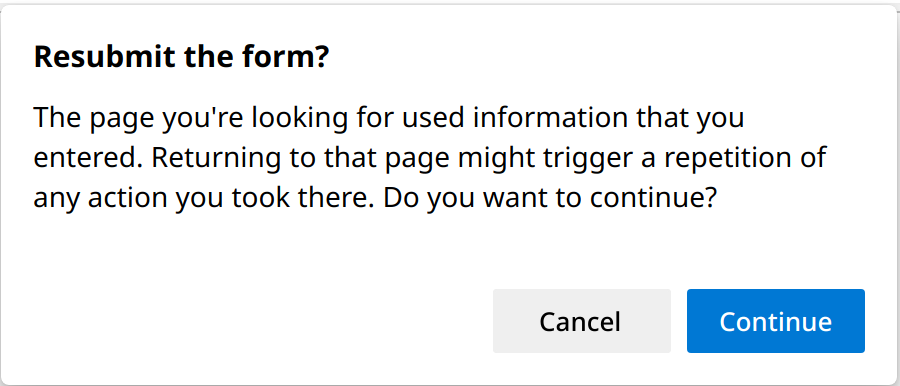
In-depth parameter(1)
In the last subsection, we discussed the difference between GET and POST. But the code is nearly the same when it comes to coding. Now let's revisit getParameter().
String getParameter(String name) Returns the value of a request parameter as a String, or null if the parameter does not exist.
Some students may ask: why does it always return String object? Well, it is a design choice. Application protocols, like HTTP, are human readable, as we can see in Fig 1.15 and 3.4. So representing them in text (i.e., String in Java) is reasonable. Then, what if the intended parameter is not String? Programmers can convert it to any desired data type according to the application logic. For example, in ch3 | request, the age shall be int,
int age = Integer.parseInt(request.getParameter("age"));
Note that the code above may throw exceptions:
- Case 1: the name
"age"does not exist. - Case 2: the value of
"age"cannot be converted toint. For example, "abc", "3.14".
Therefore, to make sure the application is robust, programmers need to consider such edge cases in case of evil and careless users. In ch3 | request | ... | index.html,
<input type="text" id="age" name="age">
But what if the user forget to input? Or input "abc"? Generally speaking, there are two ways to prohibit something bad happening: front-end (client-side) and back-end (server-side).
Front-end checking
Front-end mainly relies on JavaScript. And modern HTML also provides specific input elements to alleviate such problem.
<input type="number" id="age" name="age">
This input element forces us to input a number. But what if the user input -1 or 200? Clearly, the age cannot be less than 1 or greater than 150[7]. We can add more restriction:
<input type="number" id="age" name="age" min="1" max="150">
So far so good, but what if the user forget to input? Then the parameter age would be an empty, and the query string is ?age=&book=novel. Luckily, HTML can add required restriction for an input element:
<input type="number" id="age" name="age" min="1" max="150" required>
Then it will prevent you submitting the form with empty values[8].
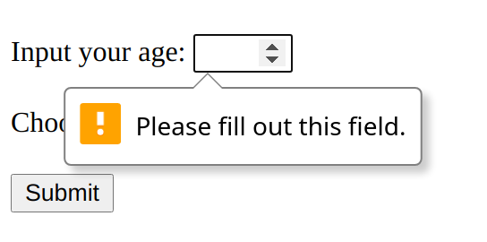
It seems that everything goes well. But unfortunately, front-end checking methods can only prevent careless people, not evil guys. For example, people can issue an request by the URL directly, and skip the check of the web browser. Therefore, we need also ask the back-end for help.
Back-end checking
Let's inspect the two cases mentioned above:
- Case 1: the name
"age"does not exist. In this case,getParameter()would returnnull.
int age;
if (request.getParameter("age") != null) {
age = Integer.parseInt(request.getParameter("age"));
// normal logic
} else {
// handling error
}
It is up to the developers to decide how to handle the detected error. For example, forward this request to another error page:
request.getRequestDispatcher("error.html").forward(request, response);
- Case 2: the value of
"age"cannot be converted toint. It is apparently that converting from strings like"abc","3.14"would result in an error (or exception in Java). To determine the exact type of error, you can use the skill introduced in Section 2.2. The following is method signature ofparseInt().
public static int parseInt‚Äã(String s) throws NumberFormatException
We can use the try...catch structure to capture the exception inside if:
try {
age = Integer.parseInt(request.getParameter("age"));
// normal logic
} catch (NumberFormatException e) {
// handling error
}
Note that since parseInt() would also throw NumberFormatException when its argument is null, so we can simplify the code by removing the if check.
A final note for error checking
Front-end and back-end methods for error checking cannot replace each other. For a robust system, the two methods are indispensable. We recommend at least using client-side validation. In general, the front-end is mainly used to warn users before they do something wrong, while the back-end is mainly used to prevent the system being malfunction after users did something wrong.
[1] As we have seen, they are also the arguments to doXXX() method, such as doGet() and doPost().
[2] The containers/servers provides objects that implement those interfaces as long as it is Java EE compliant. And this is also the benefit of interface oriented design.
[3] Idempotency means that multiple identical requests will have the same outcome.
[4] Of course, no one forbids you changing the server using GET, but it is not encouraged to break its getting convention.
[5] Again, of course, no one forbids you using POST like a GET to simply send something back, but it is not encouraged to break its updating convention.
[6] It is the responsibility of programmers to decide how to handle re-submitting POST requests.
[7] According to oldest people - Wikipedia, the oldest people alive is 122 years old, as of the time of writing (January, 2022).
[8] Depending on your browser and OS, you’ll see a slightly different style of feedback.
3.3 More About Request
In this section, we continue studying more about request using a question-oriented method. To be specific,
- how to handle multi values with one name in a request?
- how to handle non-latin characters?
- what else can I get from a request object?
In-depth parameter(2)
No matter what the HTTP method is, the query parameters in a request are started with a question mask ?, and separated by the ampersand &. So, how to handle multi values with one name in a request? It is mainly found in checkbox. Checkboxes let a user select zero or more options of a limited number of choices; while select only allows a user select zero or one option.
<input type="checkbox" id="read1" name="read" value="PC">
<label for="read1">PC</label><br>
<input type="checkbox" id="read2" name="read" value="Kindle">
<label for="read2">Kindle</label><br>
<input type="checkbox" id="read3" name="read" value="paper">
<label for="read3">paper</label><br>
<input type="checkbox" id="read4" name="read" value="phone">
<label for="read4">Phone</label><br>
Note that name with "read" is repeated for 4 times. If both PC and Kindle are selected, then the query string would contain read=PC&read=Kindle. So how can we get those values in a servlet? Instead using getParameter(), we should use getParameterValues():
String[] getParameterValues(String name) Returns an array of String objects containing all of the values the given request parameter has, or null if the parameter does not exist.
String[] reads = request.getParameterValues("read");
In-depth parameter(3)
Till now, we only use English in the web applications. But in the real world, we would like a international website which can be accessed by people using different languages all over the world[1]. It is not trivial problem, because garbled characters are very common in real systems if i18n is not well considered. For example, there are many legacy pages from Oracle which are full of garbled characters, such as "锟斤拷". We bet no one can interpret the meaning of 锟斤拷:
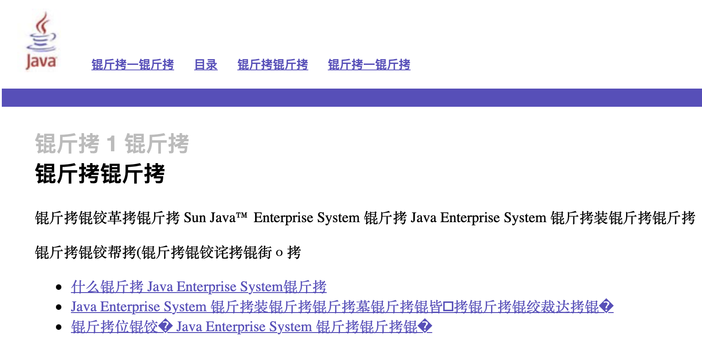
In this subsection, let's investigate this problem.
First of all, we design a small test to reproduce this problem in utf8.html of ch3/request:
<form action="international" method="post">
<label for="name">Name: </label>
<input type="text" name="name" id="name">
<button type="submit">Login in</button>
</form>
And in InternationalServlet.java whose URL name is /international we try to output the name:
response.setContentType("text/html");
PrintWriter out = response.getWriter();
String name = request.getParameter("name");
out.println(name);
If we input Bob in the input box, the output is Box, as we expected; but if we input 小明 in the input box, the output is 小明. WTF?
[!TIP] TL;DR There are different character set encodings, and it may produce garbled characters when converting one to another. Modern applications should use UTF-8 if you don't have special reasons to use alternatives.
To understand this, you need know the background knowledge about how a string is represented. Essentially, String, as well as other objects, are a sequences of bytes[2]. Given a sequence of bytes, how to interpret it depends on the character encoding. To be precise, character encoding is the process of assigning numbers to graphical characters, especially the written characters of human language, allowing them to be stored, transmitted, and transformed using digital computers. And the character set used in encoding/decoding is usually abbreviated as charset.
As an analogy, let's take an double entendre in English as an example: "What's the longest sentence in the world?" "Life sentence." Here, sentence can be 1) a set of words that is complete in itself; or 2) the punishment assigned to a defendant found guilty by a court. Anyway, the same data can convey different meanings in different interpretations.
There are a larger number of character encodings. For example:
- ASCII: for English [3]
- UTF-8: for Unicode
- ISO 8859: for Europe
- GB 2312: for Chinese
- ...
UTF-8 is by far the most common encoding for the World Wide Web, accounting for 98% of all web pages, and up to 100.0% for some languages, as of 2021[4]. So, please use UTF-8 encoding in your applications if possible. ISO 8859-1 is in the family of ISO-8859, which is used to encode western Europe languages, and it is the one what Tomcat is using. The following is what happens behind the scene.
- The parameters is encoded in UTF-8 by the web browser, and sent to the server.
- Tomcat decodes the parameters in ISO 8859-1. Note that IOS 8859-1 can be only used to store western Europe characters.
- Tomcat sends this value as response in ISO 8859-1 encoding.
We can notice the response encoding in Network tab:

Therefore, you cannot pass the parameters in Chinese (e.g., 你好) or Japanese (e.g., こんにちわ).
How to solve this problem? One solution is to specify the UTF-8 charset for both request and response. Note that the case is insensitive.
request.setCharacterEncoding("utf-8");
response.setContentType("text/html;charset=utf-8");
Alternatively, you can specify the response's encoding separately:
request.setCharacterEncoding("utf-8");
response.setCharacterEncoding("utf-8");
response.setContentType("text/html");
The code above works for POST. But as for GET, it does not make sense to set charset for request,
void setCharacterEncoding(String env) Overrides the name of the character encoding used in the body of this request.
Recall the the parameters of POST are wrapped in the request body, while the parameters of GET is appended in the URL directly. Therefore, when it comes to GET, specifying the encoding for the response is enough:
response.setContentType("text/html;charset=utf-8");
By the way, as for POST, another solution is to encode nd decode manually without specifying the charset of request:
String temp = request.getParameter("name");
String name = new String(tmp.getBytes(StandardCharsets.ISO_8859_1), StandardCharsets.UTF_8);
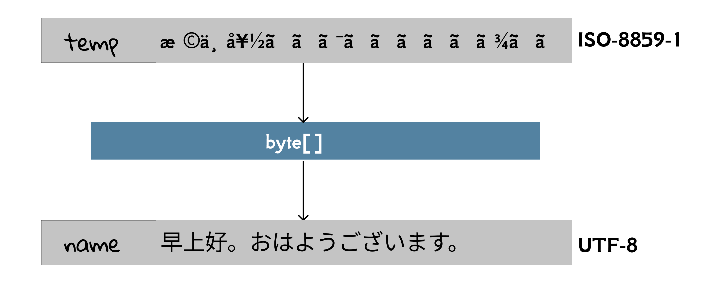
In utf8-2.html, we send a parameter in Chinese to a servlet via POST, and then the servlet forwards this request to a JSP, like we did in the mini MVC project. To encode/decode correctly, the code is similar. Note that we don't need to set charset for response now, because the encoding of result.jsp has been specified to the UTF-8:
<%@ page contentType="text/html;charset=UTF-8" language="java" %>
Beyond parameters
The ServletRequest and HttpServletRequest interfaces have a ton of methods you can call, but you don’t need to memorize them all. On your own, you really should look at the full API for javax.servlet.ServletRequest and javax.servlet.http.HttpServletRequest, but here we’ll look at only the methods you’re most likely to use in your work.
Don't worry if you are not clear about how or why you'd use each of these; we'll see more details on some of them (especially cookies and session) later in the book.
The client's platform and browser info
As we can see in Fig 1.15 and 3.4, a large number of information, in the form of <name>: <value>, contained in the request header, and then we can use getHeader() to extract targeted one:
String getHeader(String name) Returns the value of the specified request header as a String.
A user agent is a computer program representing a person, for example, a browser in a Web context. The User-Agent request header is a characteristic string that lets servers and network peers identify the application, operating system, vendor, and/or version of the requesting user agent[5]. The user agent string of my web browser indicates I am using MacOS and Edge:
User-Agent: Mozilla/5.0 (Macintosh; Intel Mac OS X 10_15_7) AppleWebKit/537.36 (KHTML, like Gecko) Chrome/96.0.4664.110 Safari/537.36 Edg/96.0.1054.62
And it can be obtained in a servlet:
String agent = request.getHeader("User-Agent");
The cookies associated with this request
Cookie[] cookies = request.getCookies();
The session associated with this request
HttpSession session = request.getSession();
The HTTP method of this request
String method = request.getMethod();
[1] It is often called i18n, short for internationalization and localization. Internationalization is the process of designing a software application so that it can be adapted to various languages and regions without engineering changes. Localization is the process of adapting internationalized software for a specific region or language by translating text and adding locale-specific components.
[2] A byte is a unit of measurement of the size of information on a computer or other electronic device. A single byte is usually eight bits.
[3] Here we mean US-ASCII.
[4] https://en.wikipedia.org/wiki/UTF-8
[5] https://developer.mozilla.org/en-US/docs/Web/HTTP/Headers/User-Agent
3.4 Upload Files In Servlets
Unlike previous sections, in this section, we only focus on a single problem when developing a web application: how to upload files in servlets?
Uploading files in a common requirement. For example, you might upload an avatar when signing up in a social website; when adding a book in the book-selling website, the admin may asked to upload the book's cover; users can upload videos to the stream medias such as YouTube, and BiliBili.
Front-end
In order to upload files, there are some worth-noting configurations in the <form>.
<form action="upload" method="post" enctype="multipart/form-data">
<label for="file">Choose a file: </label>
<input type="file" name="file" id="file">
<input type="submit" value="Upload">
</form>
- The method attribute must be
POST. - The enctype attribute must be
multipart/form-data. - An input element with type="file" to choose a file.
The first and third requirements are intuitive, and we need to explain the second point. Firstly, let's think about another question: what is the default enctype value? Well, enctype means encoding type, and HTML forms provide three methods of encoding: 1) application/x-www-form-urlencoded (the default); 2) multipart/form-data; 3) text/plain[1].
[!NOTE] TL;DR The enctype attribute must be
multipart/form-datain<form>if you would like to upload files.
To satisfy your curiosity, let's investigate what encoding exactly is through a small test:
- Try to input "Chen=" in
utf-8.htmlofch3/request, and inspect the payload inNetworktab for POST, or inspect the URL for GET. Interestingly, you would find that the data sent is Chen%3D, rather than Chen=. - Try to input "Zhongpu Chen" in
utf8.htmlofch3/request. Similarly, you would find that the data sent is Zhongpu+Chen, rather than Zhongpu Chen[2].
This is caused by URL Encoding. For example, since = has special meaning in URL, we have to encode or escape it to avoid confusion. Back to uploading files, we need also some special encoding algorithms. For regular parameters, they are separated by the ampersand &, while multipart/form-data needs to add a special boundary so that the server has to distinguish between text data and binary data[3].
Back-end
Before Servlet 3.0, writing code to receive uploaded files is a bit complicated. But now, we can use MultipartConfig annotation to reduce the workload[4].
@MultipartConfig
public class UploadServlet extends HttpServlet
Apparently, the uploaded file is not a string, so we need a new method:
Part getPart(String name) Gets the named Part or null if the Part does not exist.
Here, javax.servlet.http.Part represents a part or form item that was received within a multipart/form-data POST request. So anything we want to do for the uploaded file should rely on Part's API. In some cases, we may simply store this uploaded file to a folder in the server. In what follows, we will illustrate how to finish this task. Remember, the code itself is not really important, and what you need to do is to practice how to expand your knowledge by searching, as we mentioned in Section 2.2.
First of all, we can write pseudo code for this task:
s <- get the name of this uploaded file;
save this file to the server to name s;
Pretty clear, right? Let's try to convert the pseudo code into real Java code. For the first sub-task, we need to get the name of the submitted file. After a quick check of the API documentation of Part, we can find a proper method:
getSubmittedFileName() If this part represents an uploaded file, gets the file name submitted in the upload.
Part part = request.getPart("file");
String fileName = part.getSubmittedFileName();
You can print this variable to either the web page or standard out, but we recommend using debug in IntelliJ IDEA[5].
The next subtask can be solved by its another method:
InputStream getInputStream() Obtain an InputStream that can be used to retrieve the contents of the file.
Stream is a common abstraction for files, I/O, and networking. If you are familiar with Java I/O, implementing the rest of code is trivial. The following is a sample code[6]:
InputStream is = part.getInputStream();
Path path = Path.of("/Users/zhongpu/Desktop/" + fileName);
Files.copy(is, path);
It writes (copies) the InputStream to a file in the server's Desktop and the path is in Solaris syntax used by MacOS/Linux. If you are using Windows, please place it in Windows syntax, such as C:\\Users\\zhongpu\\Desktop.
Note that in reality, reusing the submitted file name is not very useful, because different people may upload different files with the same name. To solve this problem, we have to make sure that the file's name is unique while the suffix/extension name (e.g., .txt, .png) is kept. The code to get the suffix name is left as an exercise for readers. And the unique name can be generated by UUID:
String uuid = UUID.randomUUID().toString();
Front-end (2)
In our previous sample code, we can upload any file to the server. But in the real world, we might restrict the file type by its extension. For example, a journal report system may only allow .doc and .docx files. We can achieve this by the following code:
<input type="file" accept=".doc,.docx">
The accept attribute value is a string that defines the file types the file input should accept. This string is a comma-separated list of unique file type specifiers. Because a given file type may be identified in more than one manner, it's useful to provide a thorough set of type specifiers when you need files of a given format.
For instance, there are a number of ways Microsoft Word files can be identified, so a site that accepts Word files might use an <input> like this:
<input type="file" accept=".doc,.docx,application/msword,application/vnd.openxmlformats-officedocument.wordprocessingml.document">
Again, like required, HTML backed restrictions can be bypassed by evil guys, so back-end programers shall take the responsibility to check it again. And this is also left as an exercise for readers.
[1] Never use text/plain in any case. More discussions can be found at What does enctype='multipart/form-data' mean?.
[2] In some browsers, space can be encoded as %20, rather than +.
[3] The detailed multipart/form-data encoding algorithm can be found here.
[4] Any annotation can be replaced by XML settings in DD, and @MultipartConfig is not the exception.
[5] If you don't know what debug is, please refer to Tutorial: Debug your first Java application. And debugging web application is the similar.
[6] Please set the project language level to 11.
3.5 More About Response (1)
Previously, we either make a text/html response or forward the request to another resource. In this section, we will focus on response, and try to return something different.
JSON as response
JSON, short for JavaScript Object Notation, is a lightweight data-interchange format, and it is "self-describing" and easy to understand. For example, the JSON String {"name":"John", "age":30} defines an object with 2 properties, and each property has a value. JSON is widely used in the Internet, and a large number of web APIs returns JSON as their response.
The complete code can be found at JsonServlet.java in ch3/response. Similar to text/html, application/json is another MIME type to indicate it is JSON. The content type is to tell the client (e.g., browser) what you are sending back, so the browser can do the right thing. Note that we have to escape " within a string.
response.setContentType("application/json");
PrintWriter out = response.getWriter();
String json = "{\"name\":\"John\", \"age\":30}";
out.println(json);
Outputting JSON string directly is infrequent. Rather, in real word, we mainly need to convert an object to JSON. For example, in the mini MVC project, there is a model for books recommendation, and it would be better to design a class to represent a book.
public class Book {
private String title;
private float price;
private String author;
public Book(String title, float price, String author) {
this.title = title;
this.price = price;
this.author = author;
}
// getter/setter are omitted.
}
How can we convert a Book object to JSON? We often call the converting encoding/decoding. Unfortunately, neither Java SE nor Java EE provide built-in support for JSON processing. Should we write the encoding/decoding code on our own? No. Don't try to reinvent wheels. There are several awesome JSON libraries (e.g., Gson, Jackson) in the community. In this book, we use Gson to serialize and deserialize Java objects to JSON[1].
implementation 'com.google.code.gson:gson:2.8.9'
The complete code for serialization a Book can be found in Json2Servlet.java of ch3/response:
Book book = new Book("Gone with the wind", 29.0f, "Margaret Mitchell");
Gson gson = new Gson();
String json = gson.toJson(book);
Tools for testing APIs
The the last subsection, we enable the Java EE application to return JSON, instead of HTML, as responses. As we mentioned, JSON is the main data type transmitting between the client (e.g., Android) and the server used in API design. Recall the design-code-test cycle in Section 2.4. For those APIs, web browser is no longer the first choice for testing, because the rendering effect is not our concern. Instead, we would like a lightweight yet powerful tool concentrating on request and response.
For a long time, Postman is recognized and popular tool to simplify each step of the API lifecycle. And in the book, we will use Thunder Client, a lightweight Rest API Client Extension for Visual Studio Code.

And we can even write tests in its New Request window. In Fig 3.11, we added two tests: 1) Content-type contains application-json; 2) the returned JSON string's title is Gone with the wind:

Curious readers can further investigate how to harness this tool to help you developing design APIs. Good luck!
Binary as response
Binary here means a non-text resource, such as an image, an .exe file. Of course, in some cases, such static resources (e.g., .js and .css) can be accessed directly if they are parts of webapp or they are served by a dedicated web server.
But in rare situations, returning a binary resource as response is necessary. For example, we would like add some authentications to restrict the access; the returned binary resource is generated by code in real time; the returned binary resource is not governed by the web applications. Anyway, let's learn how to return a binary resource through servlets.
In what follows, we are going to return an image cat.png as the response. Code can be found at ch3/response. But it raises another question: where should we put this image in? Well, it can be many places.
- Case 1: cat.png is put under
webapp(a.k.a., webcontent, not in its subfolderWEB-INF).
Then this image can be accessed as a static resource via http://localhost:8080/response/cat.png directly. In order to output an image in servlets, again, we should use the stream.
response.setContentType("image/png");
ServletOutputStream os = response.getOutputStream();
The first line is to specify the content to image/png, and the second line is to get an output stream from response via getOutputStream(). Recall that for text output, we use its getWriter() method.
So the real difficulty is how to read cat.png as an input stream.
InputStream is = getServletContext().getResourceAsStream("cat.png");
getServletContext returns a reference to the ServletContext in which this servlet is running. So what is the ServletContext? You can regard it as the application context, an we will . And its getResourceAsStream() method is to read files under webapp as a stream. It does what exactly we want!
The next step is to enable the output stream output is to the client. As for PrintWriter, its println() method takes this responsibility, while as for ServletOutputStream, we should use write()[2]:
void write‚Äã(byte[] b) Writes b.length bytes from the specified byte array to this output stream.
Therefore, if we can convert is into a byte array, the mission can be accomplished. And luckily, readAllBytes() is on call[3]. The complete code can found in ImageServlet.java of ch3/response
byte[] data = is.readAllBytes();
- Case 2: cat.png is put under
src/main(a.k.a, resource). And to avoid confusion, we use another imagecat2.png.
Maven project would has a template resources folder under src/main by default, and we need to create it manually in Gradle. It is the place where we put some resources for Java source code by convention.
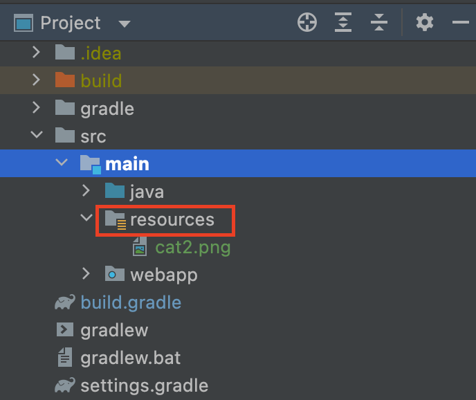
After compiling, those resources would in the classpath. Similar to case 1, the main task is to get the input stream from this image:
InputStream is = getClass().getClassLoader().getResourceAsStream("cat2.png");
Strictly speaking, understanding getClass().getClassLoader() would require some background knowledge about how JVM loads classes. Here, you can simply interpret it as getting a root of classpath.
In fact, in order to enable the output stream output is to the client, another solution can make it without introducing the byte array. Take the case 1 for example,
Path source = Path.of(getServletContext().getResource("cat.png").toURI());
Files.copy(source, os);
The first line is to get the path of the resource, and the second line is to copy the resource to the output stream[4]. Readers can try the new solution for the case 2.
A final note for response
As for response, we have got two choices for output: ServletOutputStream for bytes, or a PrintWriter for character data. Essentially, the PrintWriter wraps the ServletOutputStream. In other words, the PrintWriter has a reference to the ServletOutputStream and delegates calls to it. It makes sense because any character will be interpreted as bytes in the runtime. Such design, which adds higher-level method by hiding low-level operations is very common in programming. For example, Files.copy() is another higher-level method to hide bytes.
[1] Converting an object to JSON string is called serialize, and converting JSON string to an object is called deserialize.
[2] ServletOutputStream also provides println()/print(), but they cannot deal with stream directly.
[3] The language should be set to at least 9.
[4] The language should be set to at least 11.
3.6 More About Response (2)
In this section, we continue studying response using a question-oriented method. To be specific,
- How to serve static files outside the web application?
- How to customize error page?
- To respond, or not to respond?
Static files outside the web application[1]
In the last section, we introduced several methods to return an image as the response. What if the cat.png is located outside the web application? This question can be easily solved as long as we can get its path. Then, what if we would to server a static folder outside the web application? For example, a folder is on you desktop and its absolute path can be /Users/zhongpu/Desktop/foo on MacOS, or C:\Users\zhongpu
Desktop\foo on Windows, or /home/zhongpu/Desktop/foo on Linux, and there are all kinds of files (e.g., .mp3, .pdf) in the folder.
We expect to get a.mp3 via /static/a.mp3, get b.png via /static/b.png, and so on. Shall we write every single servlet for each file? Of course not! We even do not know how many files, and what types they are.
To solve this problem, we need to solve several sub-problems:
- How to write a general URL pattern?
The URL mapping for servlets supports wildcard characters. For example, /static/* can match any URL starting with static/.
- How to extract the file name from URL?
For example, we need to extract string a.mp3 from URL /static/a.mp3. This task can be accomplished by a simple string operations.
String filename = URLDecoder.decode(request.getPathInfo().substring(1), StandardCharsets.UTF_8);
Here, request.getPathInfo() returns any extra path information associated with the URL the client sent when it made this request. The extra path information follows the servlet path but precedes the query string and will start with a "/" character. For example, for URL /static/a.mp3, it will return /a.mp3. And decode() is used to decode an application/x-www-form-urlencoded string. Recall that URL is encoded by the browser before sending an HTTP request.
- How to get the mime type of a file?
String mime = getServletContext().getMimeType(fileName);
response.setContentType(mime);
Again, ServletContext is on call. The complete code can be found at StaticResourceServlet.java of ch3/response.
Error page
Errors often occur in a system, and how to handle them properly mainly depends on the business logic. Recall the example converting a string to int in Section 3.2.
Suppose there is no a.png inside our static folder. What if we access http://localhost:8080/response/static/a.png? As expected, it throws a NoSuchFileException. Yes, there is NO such file. As a result, HTTP response's status code becomes 500, indicating there is an Internal Server Error.

Then what if we access http://localhost:8080/response/abc? Again, suppose currently there is no any resource whose URL name is abc. In this case, HTTP response's status code becomes 404, indicating the targeted resource is NOT Found.
Some severs have their default error page, as we have witnessed, but we would like to customize the error page for our website. Fig 3.14 shows the 404 page of Google.
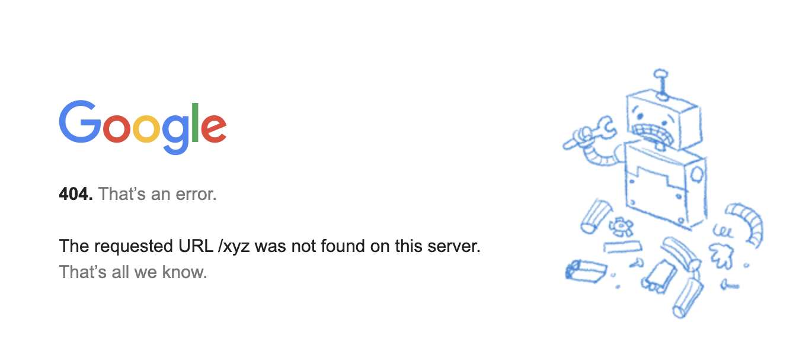
Firstly, we need to prepare a resource, including an HTML, JSP and servlet, to take the responsibility to show 404. Here we simply use an HTML page which is adapted from zhihu.com. Next, we add the following configuration in DD (i.e., web.xml):
<error-page>
<error-code>404</error-code>
<location>/404.html</location>
</error-page>
It tells the Tomcat that please display 404.html when the status code is 404. Note that if <error-code> is not specified explicitly, it means it is able to match all status codes. That is all for customizing an error page.
[!WARNING] HTTP status code is commonly misused in software engineering.
Please keep the rule "Use it as it should be" in mind when designing APIs. Some programmers may always return 200 even if there is an error, and it is definitely a bad practice. For example, in the last subsection's example, from the standpoint of an API, it would be better to return a 404 when the file is not found. And this can achieved by a simple if-else[2]:
if (source.toFile().exists()) {
response.setContentType(mime);
ServletOutputStream os = response.getOutputStream();
Files.copy(source, os);
} else {
response.sendError(404);
}
To respond, or not to respond
In the previous examples, we mainly deal with the response within the servlet. In other words, the single servlet does all work for the request-response model in the server. But, you can choose to have something else handle the response for your request. You can either redirect the request to a completely different URL, or you can dispatch the request to some other component in your web app (as we have seen in the mini MVC project). In what follows, we will discuss about when and how to make a response by redirecting and dispatching.
[!TIP] TL;DR. Servlet redirect makes the browser do the work, while a request dispatch does the work on the server side.
Redirect
As for redirect, it means when a web browser attempts to open a URL that has been redirected, a page with a different URL is opened.
@WebServlet(name = "RedirectServlet", value = "/redirect")
public class RedirectServlet extends HttpServlet {
@Override
protected void doGet(HttpServletRequest request, HttpServletResponse response) throws IOException {
response.sendRedirect("https://zhongpu.gitlab.io/java-web-book/");
}
}
In the code above, when a user visit /redirect, it would send a redirect to another URL. Let's have a closer look at what it happened exactly.
- Step 1: As usual, the client sends an HTTP request to the server.
- Step 2: The server redirects this request by returning a new URL to the client[3]. Note that the response status code is
301(indicating Moved Permanently) or302(indicatingFound)[4]. - Step 3: After the client received the new URL, it will visit this new URL automatically.
Since it is the client that does all work for a new request, the client will see the new URL.
Now let's try to make some changes for the new URL. In the code above, the URL is absolute, but relative URLs are more common when using sendRedirect(). Relative URLs come in two flavors: with or without a starting forward slash ("/")[5].
Image the client originally typed in: http://localhost:8080/response/foo/redirect.
When the request comes into the servlet named "redirect", the servlet calls sendRedirect() with a relative URL that does not start with a forward slash:
sendRedirect("bar/test.html")
Then container builds the full URL relative to the original request URL: http://localhost:8080/response/foo/bar/test.html.
But if the argument to sendRedirect() starts with a forward slash:
sendRedirect("/bar/test.html")
Then the container builds the complete URL relative to the web container root itself. So the new URL will be: http://localhost:8080/bar/test.html. Recall that there may be several applications within a container.
Readers can design tests to understand these two kinds of relative URLs[6].
[!NOTE] You cannot do a
sendRedirect()after writing to the response.
Dispatch
We have studied how to dispatch a request in the mini MVC project. Different from redirect, a request dispatch does the work on the server side.
RequestDispatcher dispatcher = request.getRequestDispatcher("json");
dispatcher.forward(request, response);
Instead, the browser address bar didn't change, and the user does not know that json generated the response. Different from redirect, the servlet only make one response, and it simply forwards the same request to another resource within the same application.
Note that the parameter what getRequestDispatcher() accepts is always a relative path. Similarly, relative URLs come in two flavors: with or without a starting forward slash ("/").
@WebServlet(name = "Forward2Servlet", value = "/foo/forward")
public class Forward2Servlet extends HttpServlet {
@Override
protected void doGet(HttpServletRequest request, HttpServletResponse response) throws ServletException, IOException {
request.getRequestDispatcher("/json").forward(request, response);
}
}
Image this servlet is accessed by http://localhost:8080/response/foo/forward. The relative path /json, starting with "/", will build a path relative to the servlet's context root. So the final path is http://localhost:8080/response/json. If it were json, without the forwarding slash, then the final path would be http://localhost:8080/response/foo/json.
A summary of redirect and dispatch
To sum up, dispatch is a practical technique in MVC design, while redirect is mainly to make a web page available under more than one URL address. For example[7]:
- Force HTTPS: Some websites would redirect HTTP requests to HTTPS requests for security issues.
- Moving pages to a new domain: Some websites may has more than one domain name, and they would redirect
olddomain.comtonewdomain.com. - URL shortening: Web applications often include lengthy descriptive attributes in their URLs, and URL shortening services provide a solution to this problem by redirecting a user to a longer URL from a shorter one.
Last but not the least, let's consider a non-trivial problem for MVC design: where should we put views? Recall that in the mini MVC project, result.jsp is located at the webapp, then what happens if a user visit result.jsp directly without the transit of forward? She would find there is a 500 error due to the NullPointerException. Although we can provide default values for them or add non-null checking, this approach does not really make logic sense.

To avoid this problem, a better solution is to hide the view from users. So we could put views under webapp/WEB-INF, where users cannot access them directly.
request.getRequestDispatcher("/WEB-INF/result.jsp").forward(request, response);
[1] This subsection is adapted from StackOverflow.
[2] As a matter of fact, there is also a method called setStatus(). But if we consider such status code as an error, we should use sendError().
[3] The new URL is in HTTP response's Location header.
[4] 3XX is for Redirection messages; 4XX is for Client error responses; 5XX is for Server error responses.
[5] Readers may analogize URLs to paths in file system when it comes to absolute or relative.
[6] It is also legal to double forward slash ("//"), and the container interprets it as a network-path reference. For example, //zhongpu.gitlab.io/java-web-book/
[7] https://en.wikipedia.org/wiki/URL_redirection
Exercise
3.1. Design and implement a test to verify that init() is called only once.
3.2. Please run the thread sample code in Section 3.1, and observe the output.
3.3. In the mini-mvc project, what if doPost() method does not exist while the method="POST" is specified in the form?
3.4. Which error would you encounter on the web page if you try to convert "3.14" to int?
3.5. Extend mini-mvc for book recommendation. Add a view to display:
Your age is xxx.
You name is xxx.
Recommendation:
1. XXX
2. XXX
Make sure the name can be in non-Latin languages, and it is able to output user-friendly message when the age is not valid.
3.6. In most cases, the browser' default validation using required is not you want. Therefore, front-end frameworks can help you out. Try to understand form.html in ch3/request which is integrated with Bootstrap. (Skip this exercise if you don't know JavaScript)
3.7. Password confirmation validation is very common in sign up pages. Try to understand Password Validation. (Skip this exercise if you don't know JavaScript)
3.8. Can we use getParameterValues() to obtain a single value parameter like "age" in ch3/request? Design a test to verify your hypothesis.
3.9. Write a helper method to get the suffix of a file name for UploadServlet.java in ch3/request. For example, getSuffix("abc.png") returns .png; getSuffix("123.abc.txt") returns .txt.
String getSuffix(String path)
And then combine this method with UUID to save upload files.
3.9. Try to upload multiple files in a form.
3.10. We can customize many settings (e.g., the limiting size of the uploaded file) by @MultipartConfig. For example, it could be constructed as follows:
@MultipartConfig(location="/tmp", fileSizeThreshold=1024*1024,
maxFileSize=1024*1024*5, maxRequestSize=1024*1024*5*5)
Please try to understand what this annotation means.
3.11. Bootstrap provides input group style for file uploading. Please add some code to upload2.html in ch3/request to let it upload files.
3.12. Add restrictions for upload.html in ch3/request to let it only allow .jpg, .jpeg and .png files. Note that the server-side checking is also required.
3.13. How does the payload look like in a multipart/form-data request? Try to inspect it in the Network tab.
3.14. Try to return a list of Book objects as JSON string based on Json2Servlet.java of ch3/response.
3.15. Can you access cat.png if it is put inside webapp/WEB-INF? If not, please write code to return it as the response.
3.16. Please return a PDF file as the response.
3.17. In Section 3.5, we provided two methods to enable output stream to output the input stream. Particularly, the first method will get all bytes from the resource:
byte[] data = is.readAllBytes();
Clearly, it would result in much memory overhead if the resource is very large. A common trick is to read-write per fixed small length (e.g., 1024) of bytes. For example,
int read = 0;
byte[] bytes = new byte[1024];
while ((read = is.read(bytes)) != -1) {
os.write(bytes, 0, read);
}
Try to understand the code above and test in a servlet. (Note that the memory overhead is no longer a problem if we use Files.copy().)
3.18. For an HTTP response, we mainly care about its status code, content type and content. Both status code and content type belong to the response header, and you can view them in the Network tab. Try to figure out what setHeader() and addHeader() are used for.
3.19. In Forward4Servlet.java of ch3/response. What is the wrong with the code? Can you have some conclusions?
3.20. By default, Tomcat would locate and display the index page (e.g., index.jsp, index.html) when we start a web application. In fact, we are also able to specify our customized index in DD. For example,
<welcome-file-list>
<welcome-file>home.html</welcome-file>
</welcome-file-list>
It means home.html will be considered as the welcome page, and the content of <welcome-file> accepts any valid resource name including a servlet's URL name.
3.21. Create a servlet which accepts a text and then generates a QRCode as the response. Please use Zxing as the dependency.
Hint: MatrixToImageWriter offers a static method writeToStream(). You can find more at the API Doc.
public static void writeToStream(BitMatrix matrix, String format, OutputStream stream)
Chapter 4: In-depth Web
Data sharing is a common task in programming. In the code's level, it can be achieved by functions' parameters/arguments, global variables, external files, databases. And Java EE further provides other mechanisms for information sharing.
In this chapter, we will investigate how the pieces of the web application interact. No servlet stands alone. In today's modern web application, many components, including models, controllers, and views, work together to accomplish a goal. For example, we have used attributes in the mini MVC project to tie the controller and view together.
4.1 Init parameters
When starting an application, we always hope that it is flexible enough to change some configurations if necessary. It can be database's connection information[1], the contact email address, the file path. For example, in HelloServlet.java, we would like to output a welcome message to users on the web page. What if we want to output "Hello and Happy New Year" on new year's eve?
public void init() {
message = "Hello World!";
}
Changing the Java code? We will introduce a better way to solve this problem.
Introduction
First of all, we have to keep an important rule in mind: Never hard code if possible. In the code above, the string literal is hard coded, so it is impossible for us to change it without changing code and recompiling[2]. Generally, we have two solutions:
- Design a program to check the date of the day. Its main idea is very straightforward:
if (is_new_year) { message = "Hello and Happy New Year" ;}. But the limitation of this method is that we have to code all logic in advance. What if you want to change it to "Hello, and Happy New Year" after the code is compiled and packaged? So, a more flexible method is required. - Write those configurations in external files[3], including databases. As we can see, this method has the highest flexibility.
In computing, configuration files (commonly known simply as config files) are files used to configure the parameters and initial settings for some computer programs.
Of course, we can use any kind of config files in Java EE, but Java EE provides built-in supports in DD (i.e., web.xml)[4], and it can alleviate our programming labour greatly.
Therefore, by convention, web configurations, including init parameters should be put in DD.
Servlet init parameters
Recall the static file serving example in Section 3.6. A folder called /Users/zhongpu/Desktop/foo on MacOS or C:\Users\zhongpu Desktop\foo on Windows, or /home/zhongpu/Desktop/foo on Linux is the root of these static files. We would like to consider this path as a parameter in config files, so we can change it by modifying only the web.xml file, without having to touch the servlet source code.
We use the <init-param> nested in <servlet> to set name-value pairs for init parameters. Note that both name and value must be String.
<servlet>
<servlet-name>InitServlet</servlet-name>
<servlet-class>com.swufe.javaee.init.InitServlet</servlet-class>
<init-param>
<param-name>path</param-name>
<param-value>/Users/zhongpu/Desktop/foo</param-value>
</init-param>
</servlet>
<servlet-mapping>
<servlet-name>InitServlet</servlet-name>
<url-pattern>/init</url-pattern>
</servlet-mapping>
And in InitServlet.java, we are able to get the value given a name, and the complete code can found at ch4/init.
String path = getInitParameter("path");
In the code of DD above, we put all configurations including URL mappings inside the web.xml. Can we still use annotations? Yes, we can (see Init2Servlet.java).
@WebServlet(name = "Init2Servlet", value = "/init2", initParams = {
@WebInitParam(name = "path", value = "C:\\Users\\zhongpu\\Desktop\\foo")
})
Which style of init parameters should we use? It is actually is trade-off. DD style prefers flexibility in code maintenance as you do not have to touch the code, while annotation style prefer flexibility in code writing as it is more concise. As a matter of fact, we can even achieve a balance by using annotations for URL mappings while using DD for init parameters. Readers can try out this new approach.
The servlet init parameters are read only once (when the container initializes the servlet). Recall the lifecycle of a servlet, init() is called during initialization. In fact, init() wraps another method init(ServletConfig). So, what is ServletConfig? Every servlet has a servlet configuration object:
A servlet configuration object used by a servlet container to pass information to a servlet during initialization.
This is the whole story of the init parameters[5]:
- Step 1: Container reads the Deployment Descriptor for this servlet, including
<init-param>. - Step 2: Container crates a new
ServletConfiginstance of this servlet. - Step 3: Container gives the
ServletConfigreferences to the name/value init parameters[6]. - Step 4: Container creates a new instance of the servlet.
- Step 5: Container calls the servlet
init(ServletConfig)method, passing in the reference to theServletConfig.

As a result, getInitParameter() is a shorthand of getServletConfig().getInitParameter().
By the way, since the container would read the init parameters only once, how to make the modification visible in the runtime? You can redeploy this web application, but taking your web application down is not a wise solution. Therefore, most of the production-quality Web Containers let you do a hot redeploy, which means that you don’t have to restart your server or take any other web apps down. However, redeploying a web application just because the init parameter value changed can be a bad idea. If the value of your init parameters are going to change frequently, you're better off having your servlet methods get the value from a file or database. Remember: No code is panacea.. Init parameters are designed to provide you some extent of flexibility, and trade-off should be always considered when programming.
Context init parameters
The init parameters above are scoped to a single servlet, but sometimes we would like those parameters to be visible throughout the whole application. The code is very similar to the one above.
We use <context-param> in DD. Context is the application runtime where the servlet is running.
<context-param>
<param-name>path</param-name>
<param-value>/home/zhongpu/Desktop/foo</param-value>
</context-param>
As shown in Fig 4.2, ServletConfig is one per servlet, but ServletContext is one per web application[7]. Therefore, if you would like to share something globally, ServletContext is your own choice. By the way, you can think of init parameters as deploy-time constants: you can get them at runtime, but you cannot set them. There is no setInitParameter()!
String path = getServletContext().getInitParameter("path");
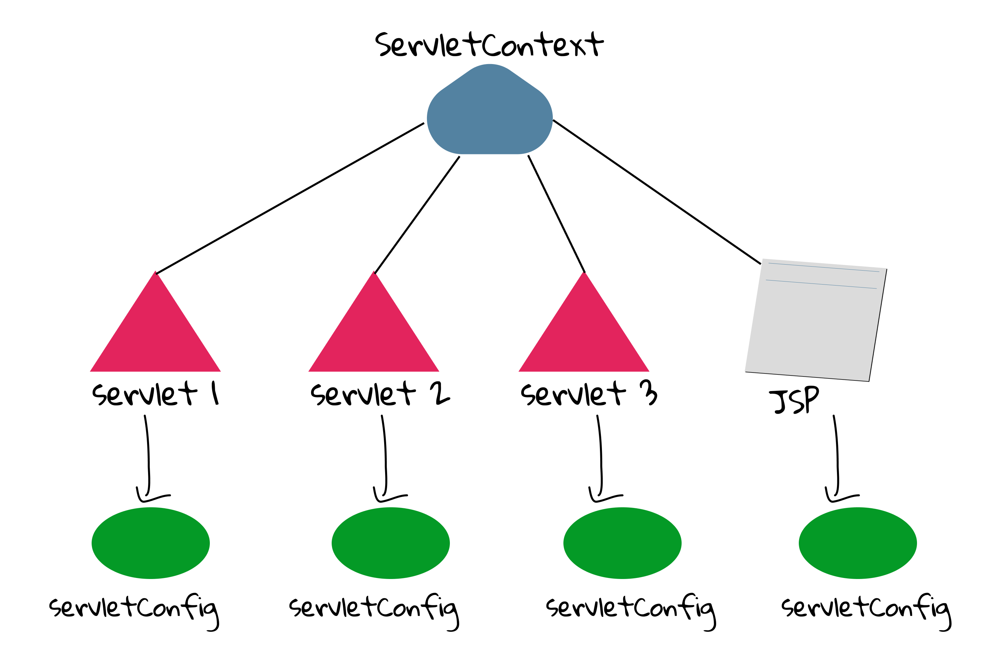
In fact, ServletContext can be confusing, and a better name of it would be ApplicationContext. But the reality is the designers of Java EE used the confusing name; we have to tolerant it. So, we would simply call it context.
[1] Like URL, it includes hostname, port, username, password, database name.
[2] This problem is less severe in script languages (e.g., Ruby and Python).
[3] There are many types of configuration files in different computing environments, such as properties, ini, rc, and simple key–value (i.e., name-value) pair format is very common.
[4] If we use our customized config files, we have to handle the write/read issues by our own.
[5] When using annotations, the process is similar.
[6] In Java, "an object A has B" means "A has a reference of B".
[7] JSP is also a servlet in runtime, so it also has a ServletConfig.
4.2 Attributes
In the mini MVC project, we have used attributes to send data from controllers to views. Attributes, like init parameters, are in the form of name-value. But different from init parameters, the values can be objects, rather than simple strings.
An attribute is like an object pinned to a bulletin board. Somebody stuck it on the board so that others can get it.
To use attributes, we need to understand two questions: 1) Who has access to it?; 2) How long does it live? In other words, what is the scope of the attribute? Generally speaking, there are three scopes for attributes:
- Context: It is the
ServletContextrepresenting the web application. - Request: It is the request part of a request-response model, and you can simply think of it as the
HttpServletRequestobject in most cases. - Session: This is a key point (
HttpSession) we will explain in detail later. Now you can simply think of it as several request-response phrases by the same person.
For example,
request.setAttribute("books", books);
RequestDispatcher dispatcher = request.getRequestDispatcher("result.jsp");
dispatcher.forward(request, response);
In the code above, the attribute is in the scope of a request. Because result.jsp and this servlet use the same request when forwarding, result.jsp is able to call getAttribute() to get the attribute.
Attributes vs. parameters
In the last section, we have studied two types parameters: servlet init parameters and context init parameters. In fact, what we send from views to controller are also parameters. We can find many similarities among them: name-value string pairs; only get() is allowed.
Many students may find it hard to distinguish attributes and parameters. The following table summarizes the main differences.
| Attributes | Parameters | |
|---|---|---|
| Types | Context Request Session | Context init parameters Request parameters Servlet init parameters |
| Method to set | setAttribute(String, Object) | You cannot set init parameters[1] |
| Return type | Object | String |
| Method to get | getAttribute(String) | getInitParameter(String) |
[!TIP] In daily programming, attributes is much more frequently used than init parameters.
In what follows, we will have a glance at attributes related APIs. Readers can refer to the API documentation for more information.
Thread-safety and attributes
We know that there are three scopes of attributes, but there is a dark side that cannot be ignored: thread-safety. In this book, we won't take much space to explain the thread-sate of attributes in a technical view. Rather, we think it can also be well understood through natural language.
A class is thread-safe if it behaves correctly when accessed from multiple threads.
As a matter of fact, thread-safety is a common issue in terms of data sharing. For example, suppose an attribute is in the scope of ServletContext. It is possible for several servlets/threads to update it at the same time. So context scope is not thread safe. Similarly, session scope is not thread safe either, because there could be more than more request at the same time from the same client (i.e., the same session).
To achieve thread safety, the main idea is to let only thread access the current attribute at a time, and one method is to use synchronized in Java. As we can imagine, such restriction would result in bad performance in the context scope. So we should not update attributes in the context scope if possible. Luckily, for session scope, it is not a big deal: one person one request at a time. Quite fair, isn't it?
HttpSession session = request.getSession();
synchronized(session) {
session.setAttribute("foo", "22");
session.setAttribute("bar", 42);
}
The code above may look sophistic for beginners. Don't worry. Currently what you need to know is that 1). What thread-safety is; 2) Attributes in session scope is not thread-safe; 3) synchronized can solve this problem.
A final question: what about request attributes? In Fig 3.3, we know that each request is processed in a single thread. So attributes in request scope is thread-safe!
Attributes example: database connection
The usage of attributes is very straightforward. In this section, let's try to use attributes to implement a practical functionality in web applications.
In last section, we mentioned that we can put database connection string in init parameters. And any database operations in the web application should use this global database connection. It is reasonable to put it in the context attribute.
DatabaseConn conn = new DataBaseConn("hostname", "user", "password", "database");
context.setAttribute("database", conn);
Note that DatabaseConn above is mock class for testing, and it cannot carry out any real database task.
The next question is: where should the code above be put? What about a servlet's init()? It seems a bad idea, because we would expect a place where the whole application is initialized (before any servlets or JSPs). Is there a init() of context for us to override? Unfortunately, no. It seems like a very hard problem. At least servlets are unable to do anything.
But, listeners can solve this problem! The core idea behind listeners is:
- A listener binds to an event.
- When the event is triggered, the listener will be notified and then do something (callback event).
Back to our example. A listener binds to the context's initialization event; when the context is initialized, we call setAttribute() method.
In Java EE, there are several listener interfaces, and what we need to do is to implement them and override their methods. For example, the one related with context is ServletContextListener[2].
@WebListener
public class DatabaseListener implements ServletContextListener
Again, we use annotations here to declare that it is a listener. Readers can try out how to do it alternatively in DD.
As we can this, this interface binds two events, representing context's initialization and destroying, respectively. So what is ServletContextEvent? This is the event class for notifications about changes to the servlet context of a web application, and it has a reference to ServletContext.
In the contextInitialized() method, we can implement our callback logic, and the complete code can be found at DatabaseListener.java of ch4/listener.
DatabaseConn conn = new DatabaseConn(host, user, password, database);
sce.getServletContext().setAttribute("database", conn);
Then we can use the sharing conn in servlets:
DatabaseConn conn = (DatabaseConn) getServletContext().getAttribute("database");
Besides context events, you can listen for events related to context attributes, servlet requests and attributes, and HTTP sessions and session attributes. Again, you don't have to memorize them. The key point is to understand how a listener works, and also remember: there are many lifecycle events in a web application, and it is possible to be notified and do something using a right type of listener.
- ServletRequestListener
- HttpSessionAttributeListener
- HttpSessionBindingListener
- ServletContextAttributeListener
- HttpSessionListener
- ServletRequestAttributeListener
Listener example: log
Many websites would log every request information containing who was visiting the site, where they came from, and exactly what they were doing on the web site, and these log files are valuable resources for business intelligence. The W3C maintains a standard format for web server log files, and for simplicity, we design a compact format based on it. Each line is in the form of time method resource, separately by a blank space. For example,
00:34:23.344207 GET /foo/bar.html
12:21:16.963480 POST /foo/a
12:45:52.255619 GET /foo/b.jsp
To accomplish this task, we should listen to the event of every request coming in, and that is exactly what ServletRequestListener does.
@WebListener
public class LogListener implements ServletRequestListener {
@Override
public void requestInitialized(ServletRequestEvent sre) {
// log
}
}
Essentially, logs are append-only files. Firstly, we need to get the current time and necessary information from sre:
String now = LocalTime.now().toString();
HttpServletRequest request = (HttpServletRequest) sre.getServletRequest();
String method = request.getMethod();
String context = request.getContextPath();
String path = request.getServletPath();
String s = "%s %s %s%s\n";
String record = String.format(s, now, method, context, path);
Then we use Files to write this line to the file[3], and it is thread-safe.
Path p = Path.of("/Users/zhongpu/Desktop/file.log");
try {
Files.writeString(p, record, StandardOpenOption.CREATE, StandardOpenOption.APPEND);
} catch (IOException e) {
e.printStackTrace();
}
By the way, due to the importance of logging, communities have designed some awesome specialized libraries (e.g., SLF4J) to help programmers to deal with logging. We also develop another logging system using the built-in java.util.logging, and the complete code can be found at LogListener.java of ch3/listener.
[1] With request parameters, you can adjust the query String, but that's different.
[2] In IntelliJ IDEA, when we create a listener, it will automatically implement ServletContextListener, HttpSessionListener, HttpSessionAttributeListener. You can delete unneeded interfaces and their methods.
[3] The language level should be set to at least 11.
4.3 Session Management (1)
In the classical request-response model, the server cannot remember who you are. In other words, as far as the container's concerned, each request is from a new client. But, in real world, remembering the client is very important. For example, after you logged in a website, the website is expected to be able to recognize your identification. Otherwise, you have to input your name and password again and again for any subsequent action.

HTTP is stateless. In order to associate a request to any other request, you need a way to store user data between HTTP requests. One solution is to store some id to identify a unique user. This is how session works[1].
Session, literally, means a conversation, and it is to keep conversational state with the client across multiple requests.
Session is also one of the three scopes of attributes, so understanding how session works and how to use session would definitely enrich your programming toolbox.
How session works
Resident Identity Card has a unique ID for everyone in a country; every student has a unique ID in her campus. So, the idea is simple: the container keeps a unique ID for every session. So the whole story goes:
- On the client's first request, the container generates a unique session ID and gives it back to the client with the response.
- The client sends back the session ID with each subsequent request.
- The container sees the ID, finds the matching session, and associates the session with the request.
Note that the session ID is shipped with the response. Let's check the Network tab using the web browser of the response header for the first time (ch3/response). Set-Cookie is just another header sent in the response, and JSESSIONID is the ID generated by the container. As we expected, for the subsequent requests, we will find the same JSESSIONID at the request's header again.
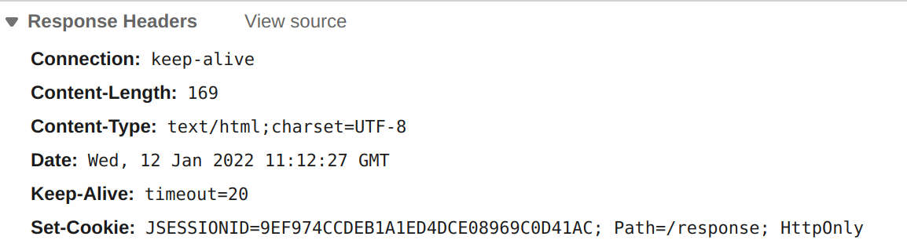
As we can see, cookie is used to exchange the ID between the client and server. So what is cookie exactly? Of course, it is not the biscuit in your favorite bakery.
An HTTP cookie (web cookie, browser cookie) is a small piece of data that a server sends to a user's web browser[2].
The browser may store the cookie and send it back to the same server with later requests. Typically, an HTTP cookie is used to tell if two requests come from the same browser—keeping a user logged in, for example. It remembers stateful information for the stateless HTTP protocol.
Back the Set-Cookie header. A simple cookie is set like this:
Set-Cookie: <cookie-name>=<cookie-value>
JSESSIONID is the name generated by the servlet container; other severs might use different names. And as we will see soon, like any other header, we can put anything we like into cookies.
By the way, strictly speaking, the statement "On the client's first request, the container generates a unique session ID" is not correct. We need to figure out another question: Under what conditions is a JSESSIONID created?[3] Now only partial answer is given:
Every call to JSP page implicitly creates a new session if there is no session yet.
We will investigate this problem in the next subsection.
How and when session is created?
Did we manually Set-Cookie for the response? No. So the container does virtually all the cookie work for us! How to send a session with cookie in the response? One line of code is enough:
HttpSession session = request.getSession();
That's it. Everything else happens automatically[4]:
- You don't make the new
HttpSessionobject yourself. - You don't generate the unique session ID.
- You don't make the new
Cookieobject. - You don't associate the session ID with the cookie.
- You don't set the
Cookieinto the response (underSet-Cookieheader).
Session is created when your code calls getSession() for the first time, and the subsequent calls would return the same session if it exits. In fact, getSession() is shorthand for getSession(true), and true means the statement "crate a new one if not exits" is true. So getSession(false) return a session or null.
For example, the following code in HelloServlet.java of ch4/session would output This is a new session on the first visit, and output Welcome back otherwise.
HttpSession session = request.getSession(false);
if (session == null) {
out.println("This is a new session");
request.getSession();
} else {
out.println("Welcome back");
}
We can also ask the session to know if the session is new by isNew() method of HttpSession. The refactor work is left as an exercise to readers.
How long session lives
No one is immortality, neither is a session. You might notice the message on the log-in page, such as Remember me for one week. It means the browser will keep your stayed for some time, and after this duration, it forgets you, and you have to log in again. Anyway, we may need to consider the lifespan of a session.
![Figure 4.7 HttpSession's API[5].](ch4/image/ch4-session-life.png ":size=40%")
We can know what these APIs do from their names without much trouble. And we only concentrate on two methods:
void setMaxInactiveInterval(int interval) Specifies the time, in seconds, between client requests before the servlet container will invalidate this session.
This method is to set the max interval this session can live. For example, setMaxInactiveInterval(60 * 60 * 24 * 7) means it will be invalidated if the same client have not sent requests for more than 7 days[6].
void invalidate() Invalidates this session then unbinds any objects bound to it.
This method is to kill a session manually. Of course, when the application goes down (or crashes), all sessions will also die. There is another method to set the timeout. Configuring a timeout in the DD has virtually the same effect as calling setMaxInactiveInterval() on every session in this web application. But note the timeout in the DD is in minutes, not seconds.
<session-config>
<session-timeout>60</session-timeout>
</session-config>
An example: log in
In this example, if she does not log in, then the home page will display Hello guest; if you log in with her email, let's say mary@gmail.com, then the home page will display Hello mary@gmail.com.

In HomeServlet.java, we check if there is an attribute named name in the session. If so, it means she has logged in; otherwise, she is a guest user. And home.jsp, as the view, is used to display the hello message from the request's attribute.
HttpSession session = request.getSession();
if (session.getAttribute("name") == null) {
request.setAttribute("name", "Guest");
} else {
request.setAttribute("name", session.getAttribute("name"));
}
request.getRequestDispatcher("/WEB-INF/home.jsp").forward(request, response);
In LoginServlet.java, its doPost accepts user's email (note that password is ignored) and then puts her email into session's attribute. Finally, it redirects to home page.
String email = request.getParameter("email");
HttpSession session = request.getSession();
session.setAttribute("name", email);
response.sendRedirect("home");
In LogoutServlet.java, it just kills the session:
request.getSession().invalidate();
response.sendRedirect("home");
As for the logout, sometimes we would like to keep some attributes, then we can remove the name:
request.getSession().removeAttribute("name");
void removeAttribute‚Äã(java.lang.String name) Removes the object bound with the specified name from this session. If the session does not have an object bound with the specified name, this method does nothing.
Or alternatively, setting its value to null:
request.getSession.setAttribute("name", null);
Try your best to understand how the code works, especially how data is shared and passed between front-end and back-end.
[1] Session, or more specifically HttpSession, is not the only option, but it is easy to implement.
[2] https://en.wikipedia.org/wiki/HTTP_cookie
[3] https://stackoverflow.com/questions/595872
[4] We need also consider the case when the client doesn't accept cookies. If cookies are disabled, then isNew() method will always return true. In this situation, we can use URL rewriting by appending session at the URL. But since it is handled in a vendor-specific way, we won't discuss it in this book.
[5] Only lifespan related APIs are listed here, and attributes related APIs are listed in Fig 4.3.
[6] It is commonly misunderstood that the session will die in 7 days since it was created.
4.4 Session Management (2)
In this section, we continue studying session management. It mainly includes how to use custom cookies, and another two listeners with respect to session.
In-depth cookie
Although cookies were originally designed to help support session state, we can use custom cookies for other things. Remember, a cookie is nothing more than a little piece of data (name/value String pair) exchanged between the client and the server. The server sends the cookie to the client, and the client returns the cookie when the client makes another request.
One cool thing about cookies is that the user doesn't have to get involved: the cookie exchange is automatic (as long as cookies are enabled in the client). Of course, programmers are also able to send cookies manually if necessary. Cookie is main tool for tracking (recording and analyzing user behavior) and personalization (user preferences, themes, and other settings) on the Internet. Fig 4.9 shows the cookies of requests of StackOverFlow:

By default, a cookie lives only as long as a session; once the client quits the browser, the cookie disappears. That is how JSESSIONID cookie works. But you can tell a cookie to stay alive even after the browser shuts down by setting its max-age. First, let's have a look at cookie related APIs.
Readers can refer to Using HTTP cookies for more details, and in this book we only discuss how to use cookies via a few APIs.
Creating a new Cookie:
Cookie cookie = new Cookie("name", "mary@gmail.com");
Setting how long a cookie will live on the client. Note that setMaxAge() is defined in seconds:
cookie.setMaxAge(30 * 60);
Sending the cookie to the client:
response.addCookie(cookie);
Getting the cookies from the client:
for (Cookie cookie : request.getCookies()) {
if (cookie.getName().equals("name")) {
// to do
}
}
HomeServlet.java in ch4/cookie is similar to the log in example in Section 4.3. Since currently we didn't implement log in yet, it will always display Hello Guest. As we mentioned above, people can send cookies programmatically. Let's try it in the web browser. Open Application at Inspect window, select Cookies, and add new cookie named name.
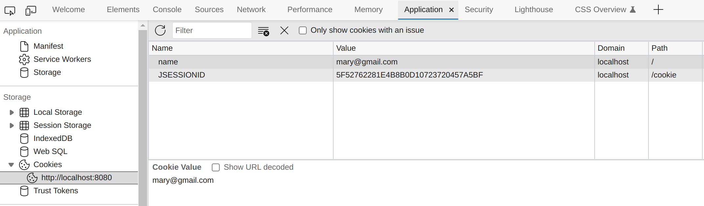
As a result, the browser will send requests with you newly added cookies, then the home.jsp shall display Hello mary@gmail.com after refreshing.
URL rewriting
Sometimes the client may disable the cookies, and as a result, Session will be infeasible. Here is a short instruction about how to disable the cookie for your browser temporally. As for Edge, you can add http://localhost into Block of Settings | Cookies and Site | Cookies and data stored.
When it is disabled, you will always see "This is a new session" for HellServlet of ch4/session. Luckily, you can use URL rewriting as a backup. Its core idea is simple: append the jsessionid after the URL.
String url = response.encodeRedirectURL("home");
response.sendRedirect(url);
So, even though the client won't store the cookies, the request can still be sent with the jsessionid. In addition, we also would like to rewrite the hyperlinks on JSP pages:
<a href="<%= response.encodeURL("login") %>">Log in</a>
[!NOTE] The URL would remain unchanged if cookies are accepted in the browser.
Session listener
In Section 4.2, we introduce listeners which are able to get notified when some event happens, and in this subsection, we are going to study one application of HttpSessionListener: count how many people are online.
Implementations of this interface are notified of changes to the list of active sessions in a web application.
Of course, here people are not strictly people in the physical world, because we assume that one session is one people. So if you access this web application using different web browsers, or in Private Window, then the listener would consider them as different people. The complete code is found at ch4/session2.
@WebListener
public class SessionListener implements HttpSessionListener
We can maintain a static member variable in SessionListener[1], and increase it by one in sessionCreated(), and decrease it by one in sessionDestroyed. So far so good, but it has thread-safety issue. One way to avoid the concurrent problem is to use APIs under java.util.concurrent, and java.util.concurrent.atomic.AtomicInteger is int value that may be updated atomically:
private static final AtomicInteger COUNT = new AtomicInteger(0);
Session bind listener
Based on the last subsection, what about counting how many people log in? We can accomplish this task even if there is no listener. To be specific, we maintain a counter, and then increase it by one when one logs in; decrease it by one when one logs out.
And HttpSessionBindingListener provides another solution to this problem:
Causes an object to be notified when it is bound to or unbound from a session.
This interface has two APIs:
valueBound(): This object is added (bounded) to a session.valueUnbound(): This object is removed (unbound) from a session.
For example, ActiveUser is a class containing a logged user's name and age. And then she logs in, we add a ActiveUser object into attributes in session's scope; and when she logs out, we remove the attribute.
class ActiveUser {
private String name;
private int age;
}
To let ActiveUser listen to the bounding event, this class shall implement HttpSessionBindingListener. So it can find out when it is put into (or taken out from) a session. It won't tell ActiveUser anything about other session events.
class ActiveUser implements HttpSessionBindingListener
Then we should override the valueBound() and valueUnbound() method for it. The complete code can be found ch4/session2. With HttpSessionBindingListener, we do not have to concern about the counter changing when the user logs in or logs out, and this simplifies our workload at some extent.
[1] The key point is to maintain a variable that can be accessed globally. Static variable is a good choice, and attribute in context scope is also fine.
Exercise
4.1. Put you email address and phone number in DD as init-parameters, and then output them in the servlet.
4.2. Use annotations to solve Exercise 4.1.
4.3. We can use init parameters as the default parameters for requests. For example, we expect that user would submit a form with his name and city, but the city is optional. So in the servlet, we shall assign a default value for city, let's say Chengdu, if it is empty. Because we don't like hard coding, we could consider default values as init parameters.
Please implement the code in a servlet.
4.4. Based on Exercise 4.3, the optional parameters can be more than one (city, gender, occupation), so we can design a method in the servlet to reduce duplicates. Assume all parameters are strings.
private String getRequestParameter(
HttpServletRequest request,
String name) {
}
Please implement the method above.
4.5. In LogListener.java (FileLogListener.java) of ch4/listener, the path of log file is hard-coded. Please set its path to an init parameter.
4.6. Will the container create a session for the mini mvc project (ch2/mini-mvc)? Hint: you can inspect the Network in InPrivate Window.
4.7. Please try to answer the question in Section 4.3: Under what conditions is a JSESSIONID created?
4.8. Use isNew() method of HttpSession to refactor HelloServlet.java of ch4/session.
4.9. Try to disable the cookies for your web browser, and then run HelloServlet.java of ch4/session.
4.10. Try to figure out what the default max inactive interval of HttpSession is.
4.11. What if you use a session after it is killed?
session.invalidate(); // or `session.setMaxInactiveInterval(0)`;
String foo = (String) session.getAttribute("foo");
4.12. What is the max age of the JSESSIONID cookie?
4.13. Implement log in for ch4/cookie.
4.14. Design a shopping chart for the book-selling website. To be specific, users can view books in the home page, and she can pick up books to adding into the shopping cart. She can also view details in her shopping cart.
- Hint: Use Session.
- Optional: The books in the home page can also be loaded by the attribute of a request.
Chapter 5: JSP And Scriptless JSP
In this chapter, we will focus on JSP. In previous chapters, we have used JSP for many times. In particular, JSP mainly works as a view. Basically, an inaccurate definition of JSP can be an HTML page enhanced by Java. The following code is from home.jsp:
<h1>Cover your page.</h1>
<%
String name = (String) request.getAttribute("name");
%>
<p class="lead">Hello <%= name %></p>
As we can see, JSP can combine HTML tags and regular Java code, as well as its extending syntax (e.g., JSP expression tag). Although you can do many things in JSP, keep in mind that the right role of JSP is just being a view, nothing more. So importantly, you will learn what not to write in JSP. To put it in another way, there are good, bad and ugly in JSP[1], and we only need to concentrate on the good. For example, writing Java code in JSP is considered bad, so scriptless JSP using tag expressions is preferred.
As a matter of fact, a JSP is also a servlet, and the container would translate it into Java source code, and complies it into a full-fledged Java servlet class. Sound a bit complicate, right? Those abstruse parts are bad and ugly, so it is okay to ignore them.
[!TIP] Learning JSP is somewhat in vain, so we only study its good parts.
Currently, JSP is generally considered obsolete, and many modern alternatives (e.g., Thymeleaf) become incredibly popular. However, there are still some reasons to learn it in 2022:
- Understanding JSP's good part will help you learn other alternatives.
- JSP is a part of Java EE, while other alternatives are third parties.
- You may have to maintain some legacy projects which are written in JSP.
[1] The Good, the Bad and the Ugly is a 1966 Italian epic spaghetti Western film directed by Sergio Leone.
5.1 Facts About JSP
In this section, we will learn the basic facts about JSP.
[!NOTE] The JSP eventually becomes a full-fledged servlet running in your web application[1].
JSP element types (1)
The regular old Java code in JSP is within <% %> tag is called scriptlet. Recall the result.jsp, the importing statement is within <%@ %> tag is called directive. The expression within <%= > is a shorthand for out.println(). Note that there is no semicolon ; in JSP expression.
<%@ page import="java.util.List" %>
<%@ page contentType="text/html;charset=UTF-8" language="java" %>
<%
List<String> books = (List<String>) request.getAttribute("books");
for (String b : books) {
%>
<%= b %><br>
<% } %>
What about page? You can simply understand it as the directive's scope. For example, <%@ page import="java.util.List" %> means importing java.util.List to current JSP page.
By the way, we can also put comments in the JSP:
<!-- This is an HTML comment. -->
<%-- This is a JSP comment. --%>
Implicit objects
We have used request and out in JSP, and they are indeed implicit objects. For example, the request is a reference to the HttpServletRequest object. The following table summarizes some important mapping from APIs to implicit objects.
| API | Implicit Object |
|---|---|
| JspWriter[2] | out |
| HttpServletRequest | request |
| HttpServletResponse | response |
| HttpSession | session |
| ServletContext | application |
| ServletConfig | config |
The following JSP is able to get the attribute from a session, and you can try to output it in ch3/session.
<% String name = (String) session.getAttribute("name"); %>
Expression Language
Scriptlets are considered bad and ugly. There are two big complaints about putting Java code into a JSP:
- Web page designers and front-end developers should not have to know Java.
- Java code in a JSP is hard to change and maintain.
To solve this problem, expression language (EL for short) is designed to get rid of Java code. An EL always looks like this: ${something}. In other words, the expression always enclosed in curly braces, and prefixed with a dollar ($) sign. EL is the base of scriptless JSP.
Let's study how to use EL by an example. First, a Book class contains the title and price:
public class Book {
private String title;
private float price;
...
}
And a User has a favorite book:
public class User {
private String name;
private int age;
private Book favourite;
...
}
Then in HelloServlet.java of ch5/el, we add an attribute into request scope. Finally, we forward this request.
Book book = new Book("Gone with the wind", 42.0f);
User user = new User("Mary", 18, book);
request.setAttribute("user", user);
request.setAttribute("name", "Mary");
request.getRequestDispatcher("/WEB-INF/home.jsp").forward(request, response);
Without EL, in order to get data from request's attribute, we have to use scriptlet:
<%
String name = (String) request.getAttribute("name");
User user = (User) request.getAttribute("user");
%>
<%= name %>
<%= user.getName() %>
But with EL, it can be simplified dramatically:
${name}
${user.name}
Similarly, we can even get the price of this user's favorite book:
${user.favourite.price}
EL makes it easy to print nested properties. Elegant, isn't it? In the next chapter, we will try to deconstruct EL.
JSP element types (2)
There are five different scripting elements in JSPs, and we have learned four of them in the start of this chapter. Since the declaration element is considered bad and ugly, we won't discuss it.
- Comment: <%-- --%>
- Directive: <%@ %>
- Declaration: <%! %>
- Scriptlet: <% %>
- Expression: <%= %>
In what follows, we will study the directive element in depth. Directives supply directions and messages to a JSP container, and these special instructions are used for translating JSP to servlet code. The syntax of directives looks like:
<%@ directive attribute="" %>
There are 3 types of directives: page directive, include directive, and taglib directive.
We have seen the usage of page already. It is used for defining attributes that can be applied to a complete JSP page. In daily programming, import and contentType.
The include directive is used to include one file in another JSP file at translation time[3]. This includes HTML, JSP, text, and other files. It is used to create templates for common UI components, such as headers, footers, and sidebars. For example, footer.html is a sticky footer adapted from Bootstrap:
<footer class="footer mt-auto py-3 bg-light">
<div class="container">
<span class="text-muted">Head First Java Web.</span>
</div>
</footer>
And then we can include it in JSPs:
<%@ include file="foot.html" %>
The JSP taglib directive is implemented to define a tag library with "taglib" as its prefix, and we will learn how to use it in Section 5.3.
One more thing
As we mentioned above, all JSP code will be translated into Servlet code, and this step is done by the container. So, even if there are some mistakes or errors in JSP, they can only be found in the runtime. In addition, your IDA may not be aware of some APIs belonging to javax.servlet.jsp.* (e.g, the implicit object out). For example, your IDE could complain that
Cannot resolve method println(java.lang.String)
<%
out.println("hello world");
%>
But, this error will not cause any bother. If you want to enable the IDE understand those APIs, you can add dependency jsp-api:
compileOnly('javax.servlet.jsp:javax.servlet.jsp-api:2.3.3') {
exclude group: 'javax.el', module: 'el-api'
exclude group: 'javax.servlet', module: 'servlet-api'
}
Note that this dependency is totally optional. After all, JSP is an obsolete technology, and we will never focus on its details.
[1] The translated .java and complied .class can be found at work/Catalina folder of Tomcat home under package org.apache.org.
[2] JspWriter is not PrintWriter, but it has most of the same print methods.
[3] The include action tag includes the file at runtime, but we will not cover action tags in this book.
5.2 Expression Language
EL is always within curly braces, and prefixed with dollar sign. In this chapter, we will study its syntax in depth.
Anatomy of EL
The first named variable in EL is either an implicit object or an attribute[1]. As for EL implicit objects, except for pageContext (not shown in the Fig 5.1), they are essentially Map objects (java.util.Map)[2]. Note that they are not the same as the JSP implicit objects.
${requestScope.name}
${requestScope.user.name}
[!TIP] The
requestScopeis not the request object; we can only use it to get request attributes. So are otherxxxScopeimplicit objects.
Since attributes are most commonly used, we mainly focus on attributes, which can be the names of attributes stored in any of the four available scopes. Another question: why can ${user.name} get the name of a user? The dot (.) operator is used to access properties and map values. If the expression has a variable followed by a dot, the left-hand variable must be a map or a bean.
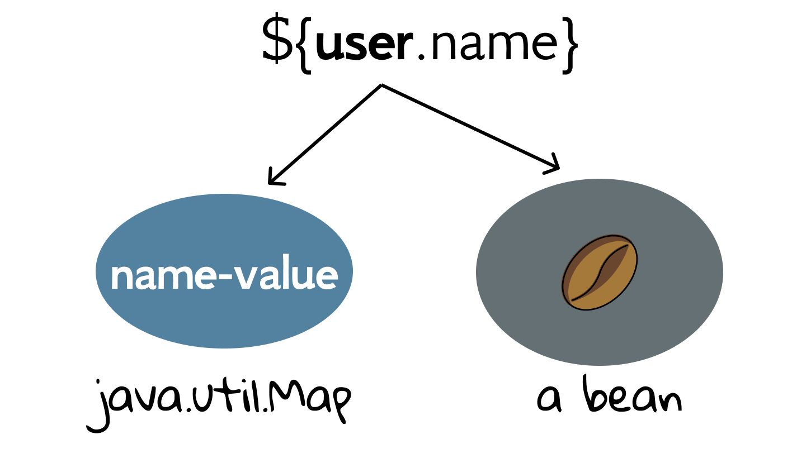
So is user a bean? Yes, but it is not the one that can be cooked. Bean is a class that encapsulates one or more objects into a single standardized object. For example, Book encapsulates title (String) and price (float), and User encapsulates name (String), age (int), and favorite book (Book). This standardization allows the beans to be handled in a more generic fashion, allowing easier code reuse and introspection. Java beans generally will not contain any business logic rather those are used for holding some data in it, and their holding data are often called properties.
Java Bean is an important concept on the Java Platform, and we expect beans will obey some conventions[3]:
As part of the standardization, all beans must be serializable, have a zero-argument constructor, and allow access to properties using getter and setter methods.
So, strictly speaking, neither User nor Book is a Java bean. Note that those conventions (e.g., implementing Serializable) are always not per se mandatory, but very useful sometimes. Back to EL, ${user.name} works because 1) user is the name of an attribute, 2) and its value User is a Java bean, 3) and User has getName() and setName() method[4].
By the way, ${user.name} works because we assume that there is only one attribute named user in four scopes. If there may be a conflict, you can restrict its scope explicitly, such as ${requestScope.user.name}, ${sessionScope.user.name}.
More powerful [] operator
The dot operator works only when the thing on the right is a bean property or map key for the thing on the left. That's it. But the [] operator is a lot more powerful and flexible.
${user["name"]}
${user.name}
The two lines of code are identical, but [] is better because it gives you more options: the thing on the left can also be a List or an array. That also means the thing on the right can be a number, or anything that resolves to a number, or an identifier that doesn't fit the Java naming rules. For example, you might have a Map key in the name "com.swufe.javaee".
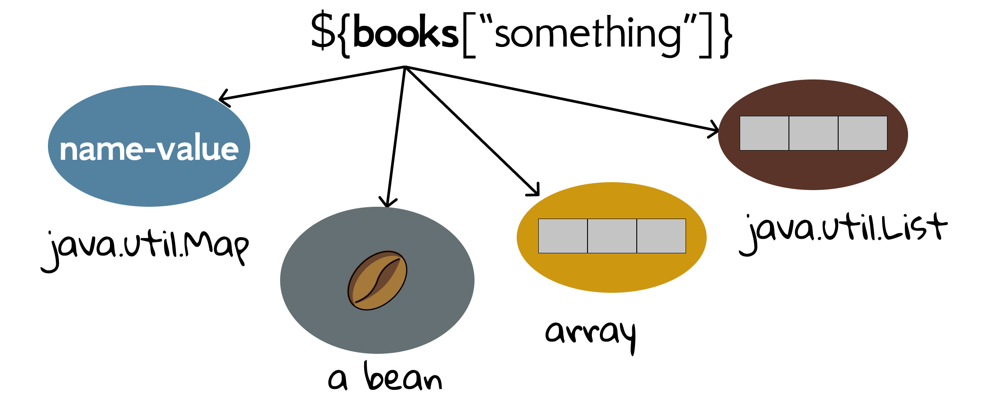
[!TIP] For beans and Maps, you can use either dot operator or bracket operator[5].
The following is an example using the [] operator with an array.
In BookServlet.java,
String[] books = {"Gone with the Wind", "The Great Gatsby",
"1587, a Year of No Significance"};
request.setAttribute("bookArray", books);
request.getRequestDispatcher("/WEB-INF/book.jsp").forward(request, response);
In book.jsp,
${bookArray[0]}
It even works when the index is a String literal, and the index is coerced to an int: ${bookArray["0"].
We can also use nested expressions inside the brackets. Based on the previous example, we add a HashMap to count books:
Map<String, Integer> bookCount = new HashMap<>();
bookCount.put("Gone with the Wind", 42);
bookCount.put("The Great Gatsby", 100);
bookCount.put("1587, a Year of No Significance", 130);
request.setAttribute("bookCount", bookCount);
And in JSP, ${bookCount[bookArray[0]]} will output 42.
Handy EL operators
You shouldn't do calculations and logic from EL. Remember, a JSP is the View, and the View’s job is to render the response, not to make Big Important Decisions or do Big Processing. But, sometimes a little arithmetic or a simple boolean test might come in handy. So, with that perspective, here's a look at the most useful EL arithmetic, relational, and logical operators.
- Arithmetic: +, -, *, / (div), % (mod)
- Logical: && (and), || (or), ! (not)
- Relational: == (eq), != (ne), < (lt), > (gt), <= (le), >= (ge)
In Operator.java of ch5/el:
String num = "42";
request.setAttribute("num", num);
int i = 43;
request.setAttribute("integer", i);
request.getRequestDispatcher("/WEB-INF/operator.jsp").forward(request, response);
And in operator.jsp:
${integer + 2}
${integer le 12}
${integer > 12}
${num > 43}
${42 div 0}
The code above will output
- 45
- false
- true
- false
- Infinity
Note that in ${num > 43}, the "num" attribute was found, and its value "2" coerced to an int. You can divide by zero in EL, and you will get an INFINITY, not an error[6].
A final note about Java beans
People sometimes get confused about POJO and Java bean[7].
POJO stands for Plain Old Java Object. It is an ordinary Java object, not bound by any special restriction other than those forced by the Java Language Specification and not requiring any classpath. POJOs are used for increasing the readability and re-usability of a program. POJOs have gained the most acceptance because they are easy to write and understand. Both User and Book are POJOs.
Beans are special type of POJOs. There are some restrictions on POJO to be a bean.
- It should implement serializable interface.
- Fields are accessed only by getters and setters.
- Fields have only private visibility.
- It must have a no-arg constructor.
Again, not all the patterns are absolute requirements. For example, the minimal requirement of a Java bean in EL is the getter and setter methods.
[1] The dot is not always needed. The dot operator is used to access properties and map values. By the way, we can also get other information like parameters, cookies using EL, but that is considered bad.
[2] Map is an object that maps keys (names) to values.
[3] https://en.wikipedia.org/wiki/JavaBeans
[4] The thing on the left of dot operator must follow normal Java naming rules for identifiers. For example, it must start with a letter, _, or $.
[5] When using dot operators for Maps, the names (keys) should be valid Java identifiers.
[6] However, you cannot use the remainder operator (% or mod) against a zero.
[7] https://stackoverflow.com/questions/1612334/
5.3 JSTL
EL saves the day by beautifully simplifying the JSP, but sometimes we need more than it. For example, can you express if or for in EL? The answer is no. To this end, custom tags are designed. They look like HTML tags, but they can help you express logics (e.g., if and for) while getting away from scripting. Even better, the community has already written a pile of tags you're most likely to need, and bundled then into the JSP Standard Tag Library (JSTL).
How to install JSTL
JSTL is not part of the JSP specification[1], so we have to download both its API and implementation in our project. However, the latest version of JSTL in javax namespace is 1.2.2, and it depends on servlet-api:2.5, el-api:2.2 and jsp-api:2.2. So there may be packages version conflicts problems. To solve those conflicts, we shall exclude them in the dependency:
implementation('org.glassfish.web:javax.servlet.jsp.jstl:1.2.5') {
exclude group: 'javax.el', module: 'el-api'
exclude group: 'javax.servlet', module: 'servlet-api'
exclude group: 'javax.servlet.jsp', module: 'jsp-api'
}
Then in the JSP file, we add the taglib directive:
<%@ taglib prefix="c" uri="http://java.sun.com/jsp/jstl/core" %>
Where prefix is a customized prefix name, and you can use other names if you like; you can think of uri as an address or a namespace, which looks like a URL. It must start with http://java.sun.com/jsp/jstl in JSTL 1.2, and core is one of tag libraries[2].
JSTL examples
In this subsection, we will learn how to use JSTL through examples, and the code can be found at ch5/jstl.
[!NOTE] Similar to HTML tags, different tags in JSTL have different attributes, and some are optional while some are required.
Suppose foo is not the attribute's name, then ${foo} won't output anything. But if we would like to output a default value when it is empty:
<c:out value="${user}" default="Guest"/>
Where <c:out> is a tag defined in JSTL, and c is the prefix we defined in the taglib directive.
Suppose an array is put into the attribute,
String[] books = {"Gone with the Wind", "The Great Gatsby",
"1587, a Year of No Significance"};
request.setAttribute("bookArray", books);
Let's iterate an array in the attribute.
<c:forEach var="book" items="${bookArray}">
${book}
</c:forEach>
As we see, <c:forEach> can replace for in the scriptlet.
<c:if> is able to replace if:
<c:if test="${balance > 88}">
You are rich.
</c:if>
Where test attribute accepts a boolean value. Note that if we use a String literal, it should be enclosed with the single quote.
<c:if test="${name == 'Mary'}">
You are Mary.
</c:if>
However, <c:if> tag cannot express else. If you would like to express if...else, you can use <c:choose> tag:
<c:choose>
<c:when test="${balance > 88}">
You are rich.
</c:when>
<c:otherwise>
You are poor.
</c:otherwise>
</c:choose>
There are a plenty of tags defined in JSTL, but basically, <c:forEach>, c:if> and <c:choose> can cover most of your daily programming tasks.
As a final example, let's try to iterate a Map.
Map<String, Integer> bookCount = new HashMap<>();
bookCount.put("Gone with the Wind", 42);
bookCount.put("The Great Gatsby", 100);
bookCount.put("1587, a Year of No Significance", 130);
request.setAttribute("bookCount", bookCount);
<c:forEach var="book" items="${bookCount}">
${book.key}
${book.value}
</c:forEach>
[1] In the book, we use Java EE 8 with servlet-api:4.0.1, el-api:3.0.0 and jsp-api:2.3.3, and both APIs and implementations are provided by the container. See more at Apache Tomcat Versions.
[2] There are other tag libraries, such as fmt and sql. It is a convention to use c as the prefix for core tag library. You can even write you own tags, but this is also considered bad.
Exercise
5.1. Use EL and JSTL to refactor mini MVC project in Chapter 2.
5.2 EL is null-friendly. If there is not an attribute named "foo", what will the following output?
${foo}
${7 + foo}
${7 < foo}
${7 == foo}
${7 != foo}
${true and foo}
${not foo}
If there is an attribute named "bar", but that "bar" does not have a property or key named "foo", what will the following output?
${bar[foo]}
${bar.foo}
${foo.bar}
Do you have any conclusion based on the output above?
5.3. How to iterate nested arrays or lists using JSTL?
List<String> programmings = Arrays.asList("C", "C++", "Java", "Python");
List<String> sports = Arrays.asList("Running", "Basketball", "Football");
List<List<String>> skills = new ArrayList<>();
skills.add(programmings);
skills.add(sports);
request.setAttribute("skills", skills);
5.4. What does varStatus means in <c:forEach> tag?
<c:forEach var="book" items="${bookArray}" varStatus="idx">
</c:forEach>
5.5. Develop a book-selling website.
- Users can log in, and log out.
- Users information is kept in a file, including name, password, and card.
- Books information (including ISBN, title, author, cover image, description, and price) are stored in the models.
- Users who do not log in can only view books.
- Users who have logged in can add books into, and remove books from their shopping carts.
- Users can check out their shopping carts by inputting the card number. The website shall display the total price.
In this exercise, both users and books are considered static. Hint: Users and books information can be stored in attributes of context scope for global sharing.
5.6. Based on Exercise 5.5, here are more requirements:
- There is an admin, whose name and password are stored in the init parameters.
- A book has the quantity property, and users' purchases can decrease it.
- Admin can add new books.
Note that it is fine to ignore the thread-safety issue in this exercise.
Chapter 6: Database
The central aspect of an application is usually the data themselves. For example, a book-selling website's most valuable asset is its data on books and users. Previously, we store these data in either code or files, and they would be loaded into memory at runtime. It is clear that pure in-memory based storage has many pitfalls. For example,
- Data would be lost when the system shuts down.
- It is very difficult to support multiple users at the same time.
- Memory cannot hold large size of data.
File-based processing system can alleviate partial problems, but it further poses new challenges for programming, such as difficulty in accessing data, data redundancy and inconsistency. Those difficulties, among others, prompted the development of database systems. A primary goal of a database management system (DBMS) is to provide a way to store and retrieve database information that is both convenient and efficient.
[!NOTE] Database is one of the core courses in Computer Science, and we can only cover a very small part of it in this book. Readers can refer to other textbooks, such as Database System Concepts, if they wish to learn more about databases.
In this chapter, we will learn the basic concepts about (relational) database, and especially, how to use database in Java web.
6.1 Introduction To Database
A database, is just a location to store data, and a database management system (DBMS) is a collection of interrelated data and a set of programs to access those data.
Data models
For most database applications, we don't have to care about how data is stored physically. Instead, we only need to understand it in a logical view[1], and it is mainly described as a data model.
A collection of conceptual tools for describing data, data relationships, data semantics, and consistency constraints.
There are a number of different data models, but in this book, we only focus on relational model, which is used in a vast majority of current database system. The relational model uses a collection of tables to represent both data and the relationships among those data. Tables are also known relations. Probably everyone knows what a table is, and you see digital tables in spreadsheet software such as Excel, Google Docs.
Each table has multiple columns, and each column has a unique name. Each row of the table represents one piece of information. In general, a row in a table represents a relationship among a set of values. The following presents a sample relational database comprising two tables: one (book) shows details of books, and the other (author) shows details of authors. Note that the order of rows is not important for a relation.
| ISBN | title | author_name | price |
|---|---|---|---|
| 9780446365383 | Gone with the Wind | Margaret Mitchell | 7.99 |
| 9780743273565 | The Great Gatsby | F. Scott Fitzgerald | 15.00 |
| 9780300028843 | 1587, a Year of No Significance | Ray Huang | 27.00 |
| name | birth | country |
|---|---|---|
| Margaret Mitchell | 1900-11-08 | America |
| Ray Huang | 1918-06-25 | America |
| F. Scott Fitzgerald | 1896-09-24 | America |
| Lu Xun | 1881-09-25 | China |
A relational database consists of a collection of tables, each of which is assigned a unique name. For example, consider the book table above, which stores information about books. The table has four column headers: ISBN, title, author_name, and price. Each row of this table records information about a book, consisting of the book's ISBN, title, author_name, and price. In the relational model, the term relation is used to refer to a table, while the term tuple is used to refer to a row. Similarly, the term attribute refers to a column of a table.
Keys
To describe how a relation looks like, we use the concept schema so that we can investigate relations while ignoring the real data in them. The schema for book is
book(ISBN, title, author_name, price)
We must have a way to specify how tuples within a given relation are distinguished. This is expressed in terms of their attributes. No two tuples in a relation are allowed to have exactly the same values for all attributes.
[!TIP] TL;DR. Super keys can uniquely identify a tuple; candidate key is the minimal super key; primary key is the one chosen from candidate keys by programmers.
A super key is a set of one or more attributes, that taken collectively, allow us to identify uniquely a tuple in the relation. For example, the ISBN attribute of the relation book is sufficient to distinguish one book tuple from another. Thus, ISBN is super key. The author attribute, on the other hand, is not a super key, because several books might have the same name. Clearly, if K is a super key, so is any superset of K. We are often interested in super keys for which no proper subset is a super key. Such minimal super keys are called candidate keys.
Candidate keys can be more than one. For example, suppose that given an author, all books written by her have different titles. So {author, title} is also a candidate key of book. We use the term primary key to denote a candidate key that is chosen by the database designers. Primary key attributes are also underlined: book(ISBN, title, author_name, price).
Database systems
There are a large number of commercial database systems in use today. The major ones include: Oracle, Microsoft SQL Server, and SAP HANA. There are also many free database systems; widely used ones include MySQL, PostgreSQL, and the embedded database SQLite.
In this book, for the ease of installing, we use SQLite. Note that although there are the differences between different databases, and it is almost unlikely to use SQLite for Java web application in the production environment, the basic concepts and practices are the same. So you can easily switch to other alternative database systems without much trouble. Additionally, SQLite is a popular storage choice for Android and iOS applications in mobile devices.
Users can request information from the database using query languages. And the SQL query language is the standard one in relational databases. Individual implementations of SQL may differ in details, and most basic SQL syntaxes are the same.
[!NOTE] Many SQL syntaxes in SQLite differ from the standard one. You can refer to Quirks, Caveats, and Gotchas In SQLite for more information.
[1] A major purpose of a database system is to provide users with an abstract view of data.
6.2 SQL (1)
SQL, short of Structured Query Language, has established itself as the standard relational database language. Generally speaking, although SQL is only a small part of database systems, studying SQL would cost most time for undergraduates[1]. In this textbook, we mainly focus two parts of SQL:
- Data-definition language (DDL): defining relation schemas, deleting relations, and modifying relation schemas.
- Data-manipulation language (DML): querying information from, inserting tuples into, deleting tuples from, and modifying tuples in the database.
The term CRUD, short for create, read, update, and delete, is often used to describe the database business logics.
[!NOTE] SQL is case-insensitive. SQL command ends with a semicolon (
;).
DDL: data types
[!TIP] TL;DR. We only use INTEGER, REAL, and TEXT for simplicity, and you can think of it as
int,double, andStringin Java, respectively.
When defining relation schemas, we must specify the attributes' data types[2]. The most commonly used data types are listed below:
- char(n): A fixed length character string with user-specified length n.
- varchar(n): A variable-length character string with user-specified maximum length n.
- int: An integer.
- numeric(p, d): A fixed-point number with user-specified precision. For example, numeric(3, 1) allows 42.1 to be stored.
- real, double precision: Floating-point and double precision floating point numbers.
- float(n): A floating-point number with precision of at least n digits.
But each value stored in an SQLite database (or manipulated by the database engine) has one of the following storage classes:
- INTEGER
- REAL
- TEXT
- BLOB
- NULL
So, is SQL written in standard syntaxes not compatible with SQLite? The answer is yes or no. 1) No two SQL database engines work exactly alike, so incompatibility sometimes is avoidable. 2) SQLite supports the concept of type affinity on columns. For example, both char(n) and varchar(n) will convert to affinity type TEXT[3].
SQLite strives to be flexible regarding the datatype of the content that it stores. For example, if a table column has a type of "INTEGER", then SQLite tries to convert anything inserted into that column into an integer. So an attempt to insert the string '123' results in an integer 123 being inserted. But if the content cannot be losslessly converted into an integer, for example if the input is 'xyz', then the original string is inserted instead.
For the sake of simplicity, in what follows, we only use three data types: INTEGER, REAL, and TEXT. By the way, SQLite does not have a storage class set aside for storing dates and/or times. In this textbook, we use TEXT to store date as ISO8601 strings (YYYY-MM-DD HH:MM:SS.SSS)[4].
We define an SQL relation by using CREATE TABLE command. The following command crates a relation book in the database:
CREATE TABLE book(
ISBN TEXT PRIMARY KEY,
title TEXT,
author_name TEXT,
price REAL
);
Since primary key for book consists of a single column (ISBN), the keywords PRIMARY KEY is added to a column definition. Alternatively, it can also be specified as a table constraint:
CREATE TABLE book(
ISBN TEXT,
title TEXT,
author_name TEXT,
price REAL,
PRIMARY KEY(ISBN)
);
To remove a relation from an SQL database, we use DROP TABLE command:
DROP TABLE book;
DDL: constraints
Besides PRIMARY KEY, we can specify more constraints for relations. For example,
- NOT NULL: By default, a column can be a null value. We can add NOT NULL attached to a column definition.
- DEFAULT: The DEFAULT clause specifies a default value to use for the column if no value is explicitly provided by the user when doing an INSERT[5].
- UNIQUE: It is similar to PRIMARY KEY[6].
Another important constraint on the contents of relations are called foreign-key constraints. Consider the attribute author_name of the book relation. It would not make sense for a tuple in book have a value for author that does not correspond to a name in the author relation. In this case, the attribute author_name in book is a foreign key, referencing author.
CREATE TABLE author(
name TEXT PRIMARY KEY,
birth TEXT,
country TEXT
);
Suppose every author has a unique name.
CREATE TABLE book(
ISBN TEXT,
title TEXT NOT NULL,
author_name TEXT,
price REAL DEFAULT 9.9,
PRIMARY KEY(ISBN),
FOREIGN KEY(author_name) REFERENCES author(name)
);
Basic DML
To insert data into a relation, we either specify a tuple to be inserted or write a query whose result is a set of tuples to be inserted. In this book, we only use the simplest form[7]:
INSERT INTO author(name, birth, country) VALUES ('Lu Xun', '1881-09-25', 'China');
INSERT INTO book(ISBN, title, author_name, price)
VALUES ('9781500946654', 'A Madman''s Diary', 'Lu Xun', 10.5);
SELECT command is to issue a query. Let us consider a simple query: "find the names of all in books",
SELECT title
FROM book;
The WHERE clause allows us to select only those rows in the result relations of the FROM clause that satisfy a specified predicate. For example, "find the names of books written by Lu Xun":
SELECT title
FROM book
WHERE author_name = 'Lu Xun';
SQL allows the use of logical connectives AND, OR and NOT in the WHERE clause. The operands of the logical connectives can be expressions involving the comparison operations, including <, <=, >, >=, =, <>[8]. For example,
SELECT title
FROM book
WHERE author_name = 'Lu Xun' AND price > 20;
Sometimes, we may want to retrieve all attributes. The asterisk symbol "*" can be used in the SELECT clause to denote "all attributes"[9]:
SELECT *
FROM book;
UPDATE statement can be used if we wish to change a value in a tuple. Suppose we would like to increase the price of the book above by 5 percent,
UPDATE book
SET price = price * 1.05
WHERE ISBN = '9781500946654';
DELETE statement is used to delete tuples. For example,
DELETE FROM book
WHERE ISNB = '9781500946654';
If the predicate is not given, it means deleting all tuples while keeping the relation itself.
[1] This is because most undergraduate database courses only cover the application aspect of the database systems, while the theory aspect is rarely involved.
[2] Different from standard SQL, data types in SQLite are advisory rather than mandatory.
[3] Flexible type is a feature of SQLite, and you don't have to memorize the detailed rules.
[4] https://en.wikipedia.org/wiki/ISO_8601
[5] If there is no explicit DEFAULT clause attached to a column definition, then the default value of the column is NULL.
[6] PRIMARY KEY cannot be NULL in SQL standard, but it can be NULL in SQLite.
[7] String should be enclosed in single quotes in SQL standard, but double-quoted String literals are accepted in SQLite.
[8] Inequality in SQL standard is <>, but most database implementations, including SQLite, also support !=.
[9] SELECT * is considered a bad style in production code.
6.3 SQL (2)
Studying SQL would cost most time for undergraduates in the database course, and SELECT would take more than 90% of time. In this section, we will explore how to use SELECT clause in different contexts. Again, this book is not dedicated to discussing SQL and databases, so only basic syntaxes are covered.
Additional basic operations
The SELECT clause may contain arithmetic expressions involving +, -, *, and /. For example,
SELECT title, price * 0.9
FROM book;
Pattern matching can be performed on strings using the operator LIKE. We describe patterns by using two special characters:
- Percent(
%): matching any substring - Underscore(
_): matching any character
For example, for a book's title Gone with the Wind, title LIKE 'Gone%' is true.
To simplify WHERE clauses that specify that a value be less than or equal to some value and greater than to equal to some other value, SQL provides a BETWEEN comparison operator.
SELECT title
FROM book
WHERE price BETWEEN 10 AND 50;
The ORDER BY clause causes the tuples in the result of a query to appear in sorted order. To list alphabetic order all authors from America, we write:
SELECT *
FROM author
WHERE country = 'America'
ORDER BY name;
Aggregate functions
Aggregate functions are functions that take a collection of values as input and return a single value as output. SQL offers five standard built-in aggregate functions:
- Average:
AVG - Minimum:
MIN - Maximum:
MAX - Total:
SUM - Count:
COUNT
Consider the query "find the average price of books written by Lu Xun". We can write the query as follows:
SELECT AVG(price)
FROM book
WHERE author_name = 'Lu Xun';
We often use COUNT to count the number of tuples in a relation. The notation for this function in SQL is COUNT(*). Thus, to find how many books written by Lu Xun, we write:
SELECT COUNT(*)
FROM book
WHERE author_name = 'Lu Xun';
The database system may give an awkward name to the result, and we can give a meaningful name to the attribute by using AS clause as follows:
SELECT COUNT(*) AS books_num
FROM book
WHERE author_name = 'Lu Xun';
We can use GROUP BY to apply the aggregate functions to a group of sets of tuples[1]. As an illustration, to find the average book price published by each author, we write this query as follows:
SELECT author_name, AVG(price)
FROM book
GROUP BY author_name;
Note that if GROUP BY is used, then the attributes shown in SELECT clause are either specified in GROUP BY or applied by an aggregate function. Thus, the following SQL is erroneous:
SELECT title, AVG(price)
FROM book
GROUP BY author_name;
Sometimes, it is useful to state a condition that applies to groups. SQL offers HAVING clause to achieve this query. For example, to find the author whose published books' average price is more than 25:
SELECT author_name
FROM book
GROUP BY author_name
HAVING AVG(price) > 25;
Nested queries
The IN connective tests for set membership[2]. As an illustration, consider the query "to find the books which were written by Chinese authors". We can divide this query into two sub queries
- Find all Chinese authors, donated as A
- To test if a book's author is a member of A.
SELECT *
FROM book
WHERE author IN (SELECT name FROM author WHERE country = 'China');
The IN operator can also be used on enumerate sets. For example, to find all authors from China and Japan, we can write the query:
SELECT name
FROM author
WHERE country IN ('China', 'Japan');
Queries on multiple relations
So far our example queries were on a single relation. Queries often need to access information from multiple relations[3]. For example, to retrieve the titles of books, along with their authors and countries, we can write:
SELECT title, author_name, country
FROM book, author
WHERE book.author_name = author.name;
[1] By default, the ORDER BY clause lists items in ascending order. To specify the sort order, we may specify DESC for descending order.
[2] The NOT IN connective tests for absence of set membership.
[3] Join expression is another way to express queries on multiple relations.
6.4 Accessing Databases From Java (1)
Writing queries in SQL is usually much easier than coding the same queries in a general purpose programming language. However, accessing databases from a general purpose programming language is necessary, because no all queries can be expressed in SQL, and some non-declarative actions cannot be done from within SQL. In this book, we only consider how to access a database using Java.
JDBC
The JDBC[1] standard APIs that Java programs can use to connect to database servers. Like Java EE, JDBC is only a set of specifications, and the specific drivers implement its defined APIs. For example, to connect a MySQL server, we shall use mysql:mysql-connector-java; to connect a PostgreSQL server, we shall use org.postgresql:postgresql. Similarly, to use SQLite[2], we shall use org.xerial:sqlite-jdbc:
implementation 'org.xerial:sqlite-jdbc:3.36.0.3'
To use JDBC, we must import java.sql.* which defines all APIs. So when it comes to coding, the program looks nearly the same no matter which databases you are connecting to. A noticeable difference is the connection URL parameter:
static Connection getConnection‚Äã(String url) Attempts to establish a connection to the given database URL.
As for SQLite, neither username nor password is required, the url must start with jdbc:sqlite:, and the path of the database file follows. For example, jdbc:sqlite:/home/zhongpu/Desktop/test.db.
SQL statements are executed and results are returned within the context of Connection. As an illustration, let's write a SELECT statement in Java:
String sql = "SELECT * FROM book";
try (PreparedStatement preparedStatement = connection.prepareStatement(sql)) {
try (ResultSet rs = preparedStatement.executeQuery()) {
while (rs.next()) {
System.out.println("title = " + rs.getString("title"));
System.out.println("price = " + rs.getDouble("price"));
}
}
}
It may look a bit complicated. But don't worry, because this is perhaps the most difficult Java code when using SQL.
- Create
PreparedStatementbyConnection, which is used to execute SQL statements. Note we should care about exceptions and resource management[3]. And luckily, the try-with-resources feature can make it simple. executeQuery()is used because it is aSELECTstatement, and it returnsResultSet, representing database result tuples.- As
ResultSetis an iterator, we can usenext()to traversal from the first row to the last row by moving a cursor. Whennext()returns false, it means the cursor is positioned after the last row. getXXX()can retrieve the value of the designated column in the current row of thisResultSet[4].
Note that we prefer PreparedStatement to Statement[5], and its prepareStatement() can accept SQL statements containing parameter values replaced by "?". We can use setXXX() method to specify the values for the parameters[6]. To illustrate, we write an INSERT statement:
String sql = "INSERT INTO author(name, birth, country) VALUES(?, ?, ?)";
try (PreparedStatement preparedStatement = connection.prepareStatement(sql)) {
preparedStatement.setString(1, "Wang Xiaobo");
preparedStatement.setString(2, "1952-05-13");
preparedStatement.setString(3, "China");
preparedStatement.execute();
}
As for an insertion, we don't have to care about the results, so we can use execute() or executeUpdate(). The complete code can be found at ch6/jdbc. By the way, the Java code for DELETE and UPDATE statements is nearly the same, and it is left as an exercise to readers.
Databases and Java web
Using a database in a Java web project still relies on JDBC, so all knowledge you learned above can be applied in a Java EE application. Recall the example in Section 4.2. The key points are:
- The connection URL is stored as an init parameter.
- Read the init parameter, and store a
Connectionin an attribute in context scope. - Process the SQL statements in servlets, and then return the results if necessary.
In AppListener.java, the creation of Connection is nearly the same with the code in Java SE, except loading the driver explicitly by Class.forName(). This method is optional in Java SE since JDBC 4.0, but it is required in Java EE.
String database = sce.getServletContext().getInitParameter("database");
try {
Class.forName("org.sqlite.JDBC");
Connection conn = DriverManager.getConnection("jdbc:sqlite:" + database);
sce.getServletContext().setAttribute("database", conn);
} catch (SQLException | ClassNotFoundException e) {
e.printStackTrace();
}
In this example, we retrieve all books whose price is greater than a given parameter. Readers can find the complete code in ch6/web-database.
String sql = "SELECT title, price FROM book WHERE price > ?";
By the way, IntelliJ IDEA supports adding database for the project, and it will greatly boost the convenience of development.
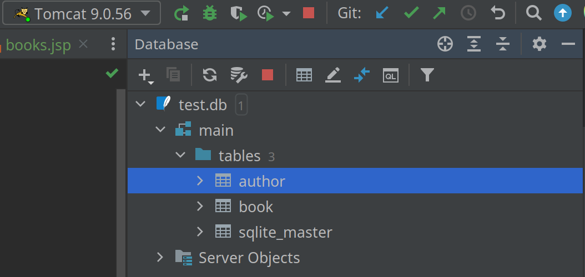
DataSource[7]
An alternative to the DriverManager facility, a DataSource object is the preferred means of getting a connection. For example, we can easily config pooled connections[8] using DataSource. In previous examples, only a single Connection is used in the whole application, and it can be a bottleneck. Connection pools promote the reuse of connection objects and reduce the number of times that connection objects are created. Connection pools significantly improve performance for database-intensive applications because creating connection objects is costly both in terms of time and resources.
In case we are using Tomcat, we need to configure the DataSource as per its JDNI documentation[9]. The easiest way is to create a META-INF/context.xml in the web content, and fill it with something like:
<Context>
<Resource
name="jdbc/db" type="javax.sql.DataSource"
maxActive="30" maxIdle="10" maxWait="10000"
url="jdbc:sqlite:/home/zhongpu/github/java-ee-swufe/ch6/test.db"
driverClassName="org.sqlite.JDBC"
/>
</Context>
Here, we consider the database as a resource. The complete code can be found at ch6/datasource.Let's discuss the DBCP properties briefly[10]:
- name: A user defined name to identify this resource.
- type: The resource type. In our example, it is
javax.sql.DataSource. - maxActive: The maximum connections being active.
- maxIdle: The maximum connections being idle.
- url, driverClassName: We have used them in the last subsection.
Next, add an entry into DD:
<resource-env-ref>
<resource-env-ref-name>jdbc/db</resource-env-ref-name>
<resource-env-ref-type>javax.sql.DataSource</resource-env-ref-type>
</resource-env-ref>
This roughly means that the web application should use the server-provided DataSource with the name jdbc/db.
Back to the Java code, we can use the JNDI to look up this resource:
DataSource dataSource = (DataSource) new InitialContext().lookup("java:comp/env/jdbc/db");
Connection conn = dataSource.getConnection();
Here, java:comp/env is the node in the JNDI tree where you can find properties for the current Java EE component.

We would wish this resource is singleton, and luckily, it is a default option. It means that no matter how many lookup() is called, it returns the same object. In our example, we still add the DataSource into context's attribute, but it is not required. A good practice is to put DataResource in DBUtil class.
public class DBUtil {
public static DataSource getDataSource() throws NamingException {
return (DataSource) new InitialContext().lookup("java:comp/env/jdbc/db");
}
}
[1] The term JDBC was originally an abbreviation for Java Database Connectivity, but the full form is no longer used.
[2] SQLite is serverless; it is simply a file.
[3] Connection, PreparedStatement, and ResultSet should be closed to avoid computer resources exhausted.
[4] The API offers many getXXX() methods, such as getInt(), getFloat(), and getDate().
[5] In general, PreparedStatement runs faster, and it can avoid SQL injection.
[6] Similar to getXXX(), the API offers many setXXX() methods, such as setInt(), setFloat(), and getDate(), where the first parameter is 1, the second is 2.
[7] This subsection is adapted from https://stackoverflow.com/questions/2299469/.
[8] JDBC Connection Pool is also known as DBCP.
[9] JNDI short for Java Naming and Directory Interface, allows Java software clients to discover and look up data and resources (in the form of Java objects) via a name.
[10] Tomcat's default DBCP relies on Commons DBCP 2 and Commons Pool 2 from Apache. We can also use other alternatives, such as HikariCP, to achieve better performance.
6.5 Accessing Databases From Java (2)
In this section, we will continue studying how to use database in Java web projects in an idiomatic way. In other words, we will study the best practices used in today's software engineering.
A real MVC
Does ch6/web-database follow MVC design? The answer is no, because the servlet also takes the responsibility of a model.
Version 1
First, let's try to separate the model from the servlet. The idea is straightforward, and it mostly follows the structure in Section 2.4. The complete code can be found at ch6/mvc1.
Recommendation class is the model that accesses the database, and servlet calls it to fetch data from the database:
try {
Recommendation recommendation = new Recommendation();
double price = 15.0;
List<Book> books = recommendation.getBooksGEPrice(price);
request.setAttribute("books", books);
request.getRequestDispatcher("/WEB-INF/books.jsp").forward(request, response);
} catch (ClassNotFoundException | SQLException e) {
e.printStackTrace();
}
Note that to simplify the code, we don't maintain the Connection in an attribute for reuse, and create a new connection for each request in DBUtil class instead. In production code, we can use DataSource to avoid the performance issue.
Version 2
As a matter of fact, there are debates about what the Model is exactly[1].
[!NOTE] There is a difference between classical MVC and what we use in web development.
Recall Fig 2.16, and compare it with the one from the introduction to MVC by Mozilla. To implement a classic MVC, Model should inform View about the changes. But it is impossible in a Java web application.

In many tutorials, Model is considered an entity (POJO) or a Java bean. It is a very common mistake to make. Remember, the model is not a class or any single object. In a proper MVC adaptation, Model can include everything in business logic:
- Domain objects: They usually represent logical entities (e.g., Java beans), and it is completely unaware of storage.
- Data mappers: These objects are only responsible for the storage. If you store information in a database, this would be where the SQL lives. And they are also known as DAOs[2].
- Services: They are responsible for interaction between domain objects and mappers by calling DAO. You can avoid them, but at the penalty of leaking some domain logic into Controllers[3].
Nowadays, a typical MVC project of Java web tends to separate Model into three parts above. So Recommendation.java of chp6/mvc1 belongs to the DAO layer. By the way, because the domain logic is this example is very simple, service layer is unnecessary.

In what follows, we will consider a case that the business logic is more complex than the data logic[4]. For example, suppose the book-selling website offers a 10% discount for books whose price is greater than 20.0 on New Year's Eve. It is true that it can be achieved in DAO, but it would be better to move these logics into service. The complete code can be found at ch6/mvc2, and readers pay attention to code organization and the structure of this project.

ORM
In DAO layer, programmers has to write code for creating objects by fetching data from the database and for storing updated objects back in the database using *SQL. However, such manual conversion between data models is cumbersome and error-prone. For example, if the programmer has a typo in while of BookDao.java, this error won't be detected in the compile time. We shall "title", rather "name":
while (rs.next()) {
books.add(new Book(rs.getString("name"),
rs.getDouble("price")));
}
One approach to handling this problem is to develop a database that natively stores objects, and allows objects in the database to be accessed in exactly the same way as in-memory objects. However, the pure object-oriented databases did not achieve commercial success.
An alternative approach, called object-relational mapping (ORM), is to automate the mapping of data in relation to in-memory objects. In other words, we can access databases in object-oriented programming way. In this book, we use Hibernate, a widely used system for mapping Java objects to relations[5]. In Hibernate, the mapping from each Java class (i.e., entity) to one or more relations is specified either in a mapping file or by annotations.
Hibernate is able to convert the Java code into SQL dialect, but it does not ship with Dialect for SQLite[6]. To illustrate how to use Hibernate, we use another embedded Java SQL database, called H2[7]. Again, you can easily switch to other relational databases.
To use Hibernate, we can either select its implementation when creating a new project or add the dependency directly. The complete code can be at ch6/orm.

implementation('org.hibernate:hibernate-core:5.6.0.Final')
implementation group: 'com.h2database', name: 'h2', version: '2.1.210'
- Step 1: Create an entity class,
Book.java. It maps to a relation calledbook. Note that one attribute (primary key) must be annotated with@Id[8]. Note a non-arg constructor is required.
@Entity
@Table(name = "book")
public class Book {
private String isbn;
private String title;
private double price;
public Book() {
}
public Book(String isbn, String title, double price) {
this.isbn = isbn;
this.title = title;
this.price = price;
}
@Id
public String getIsbn() {
return isbn;
}
public void setIsbn(String isbn) {
this.isbn = isbn;
}
// other getters/setters
}
- Step 2: Create a
hibernate.cfg.xmlundersrc/main/resources. Of course, you can use other names you like, but we prefer the default one as we can write less code. By the way, since Hibernate is also JPA-compliance, we can also config the ORM withpersistence.xml.
<hibernate-configuration>
<session-factory>
<!-- Database connection settings -->
<property name="connection.driver_class">org.h2.Driver</property>
<property name="connection.url">jdbc:h2:mem:db1</property>
<!-- JDBC connection pool (use the built-in) -->
<property name="connection.pool_size">1</property>
<!-- SQL dialect -->
<property name="dialect">org.hibernate.dialect.H2Dialect</property>
<!-- Echo all executed SQL to stdout -->
<property name="show_sql">true</property>
<!-- Drop and re-create the database schema on startup -->
<property name="hbm2ddl.auto">create</property>
<!-- Names the annotated entity class -->
<mapping class="com.swufe.javaee.orm.entity.Book"/>
</session-factory>
</hibernate-configuration>
- Step 3: Create a helper class
DBUtil.javato generate theSessionFactory.
The following is the sample code to add a book to the database:
public void addBook(Book book) {
try (Session session = DBUtil.getSessionFactory().openSession()) {
session.beginTransaction();
session.save(book);
session.getTransaction().commit();
}
}
As we can see, we can use Session to access databases, which is more friendly for Java programmers.
[1] https://stackoverflow.com/questions/5863870/
[2] DAO, short for Data Access Object, are objects that abstract away the data storage mechanism.
[3] Generally the DAO is as light as possible and exists solely to provide a connection to the DB, sometimes abstracted so different database backends can be used. So it is considered bad to leak domain logic into DAO.
[4] For the sake of flexibility, some people tend to forgive foreign constraints for databases, and these constraints can be specified in the service layer.
[5] Hibernate is more than an ORM, and it supports other useful functionalities, such as full-text search.
[6] We can implement the dialect for SQLite, and some third party libraries (e.g., SQLite Dialect For Hibernate) has done for us. But it is not recommended doing so.
[7] H2 is mainly used for test.
[8] We ignore the case when the primary key contains composite attributes.
Exercise
6.1. Consider a university database, it has two relations:
- department(dept_name, building, budget)
- instructor(ID, name, dept_name, salary)
Please write SQL statements to create the two relations.
6.2. Dump some data into university database using INSERT INTO statements.
6.3. Find those departments where the average salary of the instructors is more than 100000.
6.4. Find those departments whose building name includes the substring TongBo.
6.5. Find the names of instructors with salary amounts between 90000 and 100000.
6.6. Please add update and delete statements for Main.java in ch6/jdbc.
6.7. Please refactor ch6/datasource and let it follow MVC design.
6.8. Re-implement the book-selling website using a database.
Chapter 7: Thymeleaf
Thymeleaf is a modern server-side Java template engine for both web and standalone environments. It as a better alternative for JSP. In Chapter 5, we have introduced how to use scriptless JSP. But JSP has an obvious pitfall: we cannot preview it. In contrast, Thymeleaf is featured for its natural templates. To be specific, HTML that can be correctly displayed in browsers and also work as static prototypes, allowing for stronger collaboration in development teams.
Like JSP and other template engines, Thymeleaf does the work at the server-side. So, the projects which wish to separate front-end and back-end completely, modern front-end frameworks (e.g., Vue and React) are preferred.
In this chapter, we focus on how to Thymeleaf in Java web. Note that the knowledge of JSP is not in vain, because essentially, all template engines work similarly, as shown in Fig 7.1. It takes the data and template as the input, and output the HTML to the client[1]. You can think of it as format() method. The string with a placeholder I am learning %s is the template, and name is the data.
String name = "Java Web";
String result = String.format("I am learning %s", name);
[1] Thymeleaf allows you to process six kinds of templates, including HTML, XML, TEXT, JAVASCRIPT, CSS and RAW.
7.1 Get Started With Thymeleaf
[!NOTE] This section is mainly adapted from Tutorial: Using Thymeleaf. It is highly recommended referring to this tutorial if you have any doubt about how to use Thymeleaf.
Setting up
Intellij IDEA offers built-in support for Thymeleaf, and you can also set it up manually. When creating a new project, please make sure Thymeleaf dependency is selected. Then you can delete all JSPs generated in your project.
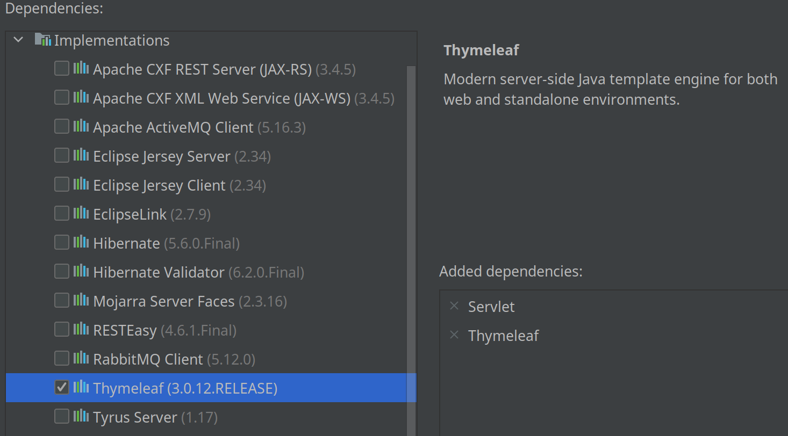
implementation('org.thymeleaf:thymeleaf:3.0.12.RELEASE')
To use Thymeleaf, we need a TemplateEngine instance to resolve (i.e., obtain and read) templates. Of course, we also have to specify some important information, including the location and mode of templates, and this is what ITemplateResolver does. For Java EE projects, we use its implementation ServletContextTemplateResolver, and the paths of these resources start at the web application root, and are normally stored inside /WEB-INF.
ServletContextTemplateResolver resolver = new ServletContextTemplateResolver(context);
resolver.setPrefix("/WEB-INF/templates/");
resolver.setTemplateMode(TemplateMode.HTML);
TemplateEngine engine = new TemplateEngine();
engine.setTemplateResolver(resolver);
The whole project should share one TemplateEngine instance, so we put the code above into an implementation of ServletContextListener, and then store engine into an attribute in context scope. The complete code can be found at ch7/thymeleaf. Note that we add an extra helper TemplateEngineUtil.java class for the ease of getting this engine, and you can adopt the similar designs for all attributes getters/setters.
[!NOTE] Readers can start from the
ch7/simple-thymeleafproject to understand how Thymeleaf works.
Let's see how to pass data into the templates in HelloServlet.java. It is slightly different from the code we saw before:
TemplateEngine engine = TemplateEngineUtil.getTemplateEngine(request.getServletContext());
WebContext context = new WebContext(request, response, request.getServletContext());
context.setVariable("name", "Java Web");
engine.process("home.html", context, response.getWriter());
First, we get the TemplateEngine instance from attribute via a helper class. To resolve a template, we use its process() method:
void process(String, org.thymeleaf.context.IContext, Writer) Process the specified template (usually the template name). Output will be written to the specified writer as it is generated from processing the template.
Its first parameter is the template resource (under WEB-INF/templates). The context will contain the variables that will be available for the execution of expressions inside the template[1]. Because this is Java web project, WebContent is used. The third parameter is also output destination (usually use HttpServletResponse.getWriter()).
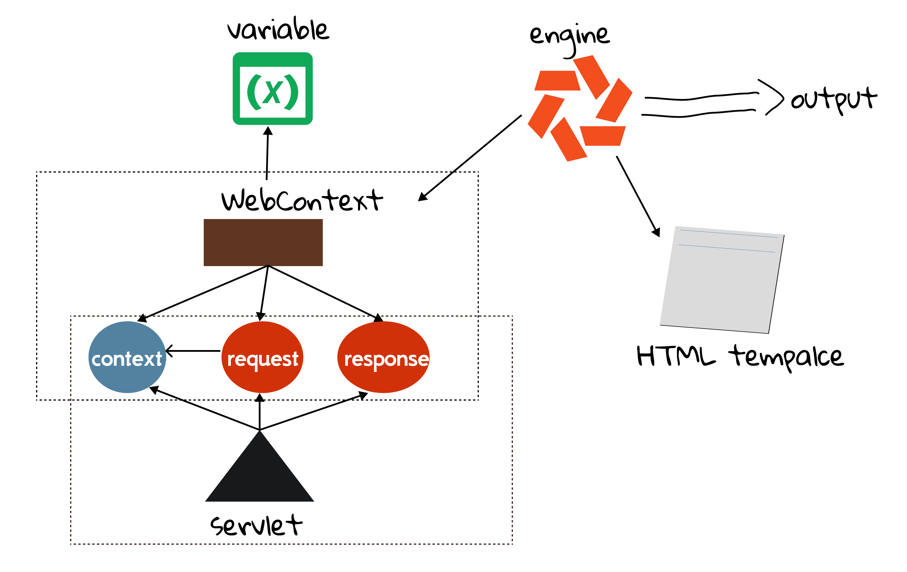
home.html is a plain HTML page with some special attributes defined by Thymeleaf. Note that the web browser will ignore the attributes which it cannot recognize, so we can preview how it looks even if we don't start this web application.
<body>
I am learning <span th:text="${name}">CS</span>.
</body>
th:text is an attribute defined by Thymeleaf, and it is used to display text passed from the template engine. It will display the value of a variable named name; it simply display CS if the template engine don't work or there is no such variable. You can roughly think of variables here as attributes which we have learned in Section 4.2. The following figure illustrates the mapping of several names showed above.

${name}, called variable expressions, simply means “get the variable called name”, which is one of the Standard Expressions offered by Thymeleaf. Similar to attributes, we can put a Java bean into the variable, and use expression ${user.name}, which means “get the variable called user, and call its getName() method”.
context.setVariable("user", new User("Zhongpu", 30));
Standard expression can be of five types:
${...}: Variable expressions.*{...}: Selection expressions.#{...}: Message (i18n) expressions.@{...}: Link (URL) expressions.~{...}: Fragment expressions.
Messages
We have studied how to use variables in Thymeleaf, and now we will learn another standard expression, message expression, which is used for internationalization (i18n). A web page shall usually be adapted to different languages for people from different countries. For example, Hello in English, should be adapted to 你好 in Chinese, or こんにちは in Japanese.
The i18n text in different languages is called externalized text, since it is out of template files, and can be kept in separate files (typically .properties files).
Messages always have a key that identifies them, and Thymeleaf allows you to specify that a text should correspond to a specific message with the #{...} syntax:
<h1 th:text="#{hello}">你好</h1>
So, where is this externalized text? The standard message resolver expects to find messages for template files (.html) in properties files (.properties) in the same folder and with the same name as the template[2]. For example, the template HTML is WEB-INF/templates/home.html, the properties files can be:
/WEB-INF/templates/home_en.propertiesfor English texts./WEB-INF/templates/home_ja.propertiesfor Japanese texts./WEB-INF/templates/home_zh.propertiesfor Chinese tests./WEB-INF/templates/home.propertiesfor default texts (if the locale is not matched).
In IntelliJ IDEA, let's create a Resource Bundle under WEB-INF/templates[3], whose base name is home.
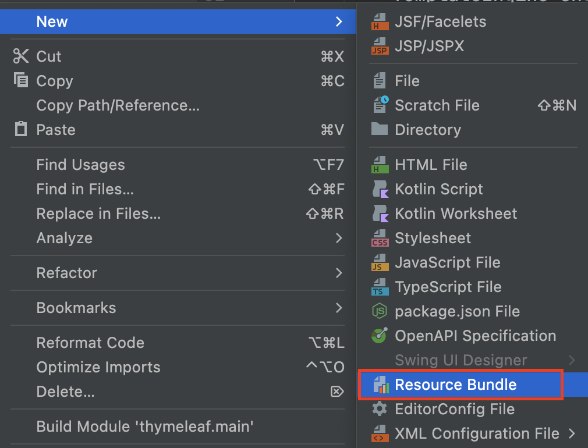
Then we can add the needed locale, where en is for English, ja is for Japanese, and zh is for Chinese. Readers can refer to Locale Codes for more information[4].

Let’s have a look at our home_ja.properties file:
hello=„Åì„Çì„Å´„Å°„ÅØ
This is all we need for making Thymeleaf process our i18n template, and which language is shown will depend on the web browser's setting.By the way, recall Section 3.3. It is necessary to set UTF-8 for responses multi languages, and let the web-oriented WebContext know your locale by requests' header Accept-Language:
WebContext context = new WebContext(request, response, request.getServletContext(), request.getLocale());
response.setCharacterEncoding("UTF-8");
Variables revisited
${} expressions are in fact OGNL (Object-Graph Navigation Language) expressions executed on the map of variables contained in the context[5].
When using Thymeleaf in a web environment, we can use a series of shortcuts for accessing request parameters, session attributes and application attributes. For example,
request.getSession().setAttribute("foo", 42);
We can access this value in a template:
${session.foo}
${session.size()}
${session.isEmpty()}
${session.containsKey('foo')}
Note there is no need to specify a namespace for accessing request attributes (as opposed to request parameters) because all request attributes are automatically added to the context as variables in the context root. For example,
request.setAttribute("bar", 88);
And then we can retrieve it by ${bar} directly.
We can also add parameters to the message. Just like this:
welcome=Welcome {0}!
Parameters are specified according to the java.text.MessageFormat standard syntax, which means you can format to numbers and dates as specified in the API docs for classes in the java.text.* package.
In order to specify a value for our parameter, and given an HTTP session attribute called user, we could have:
<h2 th:text="#{welcome(${session.user})}">欢迎用户！</h2>
[1] This context implementation contains all the required Servlet-API artifacts needed for template execution in web environments, and should be enough for most web-based scenarios of template processing.
[2] The default message resolve is StandardMessageResolver.
[3] Please set the default encoding for properties files to UTF-8 in IntelliJ IDEA.
[4] One language may have several branches. For example, zh-cn is for Chinese used in mainland China, and zh-hk is for Chinese used in Hong Kong SAR, China.
[5] You do not need to know every detail about OGNL syntax and features.
[6] See Java Doc API for class org.thymeleaf.context.WebServletContextVariablesMap
7.2 Standard Expression Syntax
In this section, we focus on Standard Expression Syntax, including:
- Expressions on selections (asterisk syntax)
- Link URLs
- Fragments
Expressions on selections
Not only can variable expressions be written as ${}, but also as *{}. There is an important difference though: the asterisk syntax evaluates expressions on selected objects rather than on the whole context. That is, as long as there is no selected object, the dollar and the asterisk syntaxes do exactly the same.
And what is a selected object? The result of an expression using the th:object attribute.
<div th:object="${user}">
<p>Age: <span th:text="*{age}">18</span></p>
<p>Name: <span th:text="*{name}">Bob</span></p>
</div>
Which is exactly equivalent to:
<div>
<p>Age: <span th:text="${user.age}">18</span></p>
<p>Name: <span th:text="${user.name}">Bob</span></p>
</div>
By the way, dollar and asterisk syntax can be mixed.
Link URLs
We did not cover how to represent link URLs in JSPs using JSTL in Section 5, although link URLs are very important for websites. For example, every book at Douban can be accessed by a URL, and this is the link for HFBook: https://book.douban.com/subject/3223139/. Here 3223139 is the ID of HFBook.
There are two types of URLs:
- Absolute URLs: https://book.douban.com/subject/3223139/
- Relative URLs, which can be:
- Page relative: user/login.html
- Context-relative: /book?id=3 (context name in server will be added automatically)
- Server-relative: ~/billing/pay
- Protocol-relative URLs: //code.jquery.com/jquery-2.0.3.min.js
Thymeleaf provides a special for URL, the @ syntax: @{...}. Generally, it may be error-prone to distinguish page relative and context-relative, so we illustrate the difference using an example in the following.
Suppose we are now in the page http://localhost:8080/thymeleaf/, and BookServlet accepts a parameter id and then makes a response of a book:
@WebServlet(name = "BookServlet", value = "/books")
public class BookServlet extends HttpServlet {
And we look at how URLs are used in <a>'s href attribute.
It is a page relative URL, and it would produce books?id=3. By the way, Theymeleaf also provides an elegant way to URL rewriting if cookies are not enabled:
<a th:href="@{books(id=3)}" href="#">@{books(id=3)}</a>
So we always prefer (...) over ? syntax for GET parameters.
It is a context relative URL, and it would produce /thymeleaf/books?id=3. And we can also put variables into it:
<a th:href="@{books(id=${bookID})}" href="#">@{books(id=${bookID})}</a>
But suppose we are now in http://localhost:8080/thymeleaf/test/123. The page relative URL will finally become
http://localhost:8080/thymeleaf/test/books?id=3
And it is incorrect. However, the context relative URL will work well.
Fragments
It is common that web pages share some components (e.g., header, footer and menu), and we also have learned that include directive in JSP is used to include one file at translation time. Similarly, th:insert and th:replace can be used in this scenario[1].
We create a footer.html under webapp | WEB-INF | templates:
<!DOCTYPE html>
<html lang="en" xmlns:th="http://www.thymeleaf.org">
<body>
<div th:fragment="copy">
© 2022 SWUFE
</div>
</body>
</html>
And in book.html, we can include this file using ~{templatename::selector}:
<div th:insert="~{footer.html :: copy}"></div>
[1] th:insert is the simplest: it will simply insert the specified fragment as the body of its host tag; th:replace actually replaces its host tag with the specified fragment.
Exercise
7.1. Please use Thymeleaf for views in your book-selling website.
Chapter 9: Get Started With Spring
Appendix
Appendix presents the full details of downloading and installing softwares on computers.
Tomcat
The Apache Tomcat® software is an open source implementation of the Jakarta Servlet, Jakarta Server Pages, Jakarta Expression Language, Jakarta WebSocket, Jakarta Annotations and Jakarta Authentication specifications. These specifications are part of the Jakarta EE platform.
There are several ways to install Tomcat on your computer, and it is strongly recommended to download in compressed binary package directly instead of an installation program.
Step 1: Download. Go to Tomcat 9 Software Downloads, and scroll to Binary Distributions. If you are on Windows, click 64-bit Windows zip. If you are on Linux/MacOS, click zip or tar.gz. Then your web browser would download the binary package automatically, and you can save it to any place (e.g., Download folder) you like.
Step 2: Un-compress. Extract the compressed package to any place you like. By default, the extracted folder is apache-tomcat-9.0.56.
Cool! That is all you need to do. Some tutorials may even ask you to register a service for Tomcat, but it is optional if you don't understand what it is doing. Figure A.1 shows what you will see inside apache-tomcat-9.0.56 folder.
A note for Linux/MacOS
If the IntelliJ IDEA raises an error containing "permission denied" when you try to run a web application using Tomcat, it can be fixed by adding execute permission for .sh files under the bin folder of Tomcat home. Open the terminal, change the directory to Tomcat home, and then
chmod u+x bin/*.sh
IntelliJ IDEA
IntelliJ IDEA, developed by JetBrains, is an integrated development environment (IDE) written in Java for developing computer software, and it is undoubtedly the top-choice IDE for software developers. It provides two major editions (i.e., Ultimate and Community), and IntelliJ IDEA Ultimate aims for web and enterprise development. Although Ultimate edition is a paid software, it allows students and teachers to apply for free educational licenses.
Step 1: Create a JetBrains account. Go to https://account.jetbrains.com/login. Although not required, you'd better create an account using your edu email address.
Step 2: Apply for educational licenses. Go to https://www.jetbrains.com/community/education and click the Apply now button. Then fill in the forms as required. When everything is done, you shall receive an email from JetBrains for verifications.
Step 3: Download and install IntelliJ IDEA Ultimate. Go to https://www.jetbrains.com/idea/download and download packages according to your own operating system. After downloaded, double click the installer, and then it is fine to always click next and use the default settings. When finished, open the IntelliJ IDEA Ultimate application, and then activate the free access using your JetBrains account created in Step 1.
If all goes well, you shall see the welcome screen of IntelliJ IDEA Ultimate, as depicted in Figure A.2.
How to import project to IntelliJ IDEA
The sample code of this book in GitHub is managed by Gradle, and here is a quick tutorial of how to import Gradle project to IntelliJ IDEA[1].
Suppose that the project has been downloaded to your computer. Click File | Open at the menu, and then select the upmost folder (e.g., mini-mvc) containing gradlew (or gradlew.bat):

It may take a few seconds for the first time since it has to download some dependencies from the remote repository and IntelliJ IDEA has to build index for this imported project.
After importing, we need an extra work to make it runnable. To be specific, click Run | Edit Configurations... in the menu, and then click Add new... in the pop-up Run/Debug Configurations window, select Tomcat Server | Local. Now you will find there is a warning:
[!WARNING] Warning: No artifacts marked for deployment
No worry, click the Fix button.

And you can select one of two items in the Select an artifact to deploy pop-up windows.
By the way, the repository in the GitHub, by default, can be only downloaded as a whole as a .zip file[2]. But sometimes, we would like to download a single project. Luckily, there are a few tools created by the community that can do this for you. See more at Download a single folder or directory from a GitHub repo.
How to new a servlet
Sometimes, you may not find the servlet (and listener) template when trying to new a file in Intellij IDEA, and this is because the src/main/java is not marked as the source root.
- Step 1: Click
File | Project Structure.

- Step 2: Make the
Source Rootsas being marked underModules | Web Gradle xxx.war.

Click OK button. Then, finally, you shall see the servlet template when trying to new file.

Of course, those steps are totally optional, because it is fine to create a plain Java class and then make it extend HttpServlet manually. But creating a servlet from the template can be handy for beginners.
[1] Those steps are the same for projects managed by other tools, such as Maven and SBT.
[2] Of course, life would be easier if you get used to git.
JDK
The JDK includes tools for developing and testing programs written in the Java programming language and running on the Java platform. Since we are using IntelliJ IDEA, it is recommended to get the JDK directly from it.
When creating a project in IntelliJ IDEA, you can choose the target JDK built by different vendors (e.g., Oracle OpenJDK, Amazon Corretto, and Eclipse Temurin) in Project SDK setting by clicking Download JDK.
Install JDK manually
If you are using UNIX-like platforms (e.g., MacOS and Linux), you'd better to ask package managers for help. See the details in the next part.
Step 1: Download JDK. Go to the website provided by your target JDK vendor, for example, https://docs.aws.amazon.com/corretto/latest/corretto-17-ug/downloads-list.html, and then download either installer (then go to Step 2(a)) or package (then go to Step 2(b)) that is compatible with your operating system.
Step 2(a): Install JDK. Double click the installer, and it is fine to always click next and use the default settings.
Step 2(b): Un-compress JDK. Extract the .tar.gz file to any place you like, and then add an environment variable for JAVA_HOME.
Install JDK by package managers
If you would like to download and install preferred JDK without the help of IntelliJ IDEA, package managers (e.g., Homebrew in MacOS, APT in Ubuntu, and Pacman in Manjaro) can alleviate the manual work. Here, we strongly recommend SDKMAN! on UNIX-like platforms.
Step 1: SDKMAN! Installation. Install SDKMAN!.
$ curl -s "https://get.sdkman.io" | bash
$ source "$HOME/.sdkman/bin/sdkman-init.sh"
Step 2: JDK Installation. Install target JDK via SDKMAN!. For example, the following command will install JDK 17 build by Eclipse Adoptium Temurin.
$ sdk install java 17.0.0-tem
Gradle
Gradle is an open-source build automation tool focused on flexibility and performance.
Fundamentally, all build systems have a straightforward purpose: they transform the source code written by engineers into executable binaries that can be read by machines. For years, builds had the simple requirements of compiling and packaging soft- ware. But the landscape of modern software development has changed, and so have the needs for build automation.
It is highly recommended reading the Gradle User Manual. In this book, we only focus on one of most important features of Gradle, dependency management.
Dependency management overview
There is a well-known saying in software engineering: Don't reinvent wheels. Nowadays, no one would create a software from scratch, and she must use some third libraries to complete her task without re-writing every line of code on her own. For example, when you want to connect to MySQL, you have to use the database driver as a dependency.
In Java, Maven and Gradle are widely used to help programmers to manage third libraries without manual workload. In this tutorial, we focus on Gradle. Gradle's dependencies are put inside dependencies. For example, in the build.gradle of a template Java EE project:
dependencies {
compileOnly('javax.servlet:javax.servlet-api:4.0.1')
testImplementation("org.junit.jupiter:junit-jupiter-api:${junitVersion}")
testRuntimeOnly("org.junit.jupiter:junit-jupiter-engine:${junitVersion}")
}
Clearly, your Java web project depends on servlet if JDK is compiling your source code. Here we are using the string notation to declare such dependency. Let's try to decouple the long string javax.servlet:javax.servlet-api:4.0.1, which contains three parts:
- Group name:
javax.servlet. Who develops it. - Artifact name:
javax.servlet-api. What its name is. - Version:
4.0.1. Which version it is.
Those three parts (coordinates) can identify a unique package, and then Gradle is able to download this package from remote server. By default, this remote server is maven central repository. Alternatively, you can also declare a dependency with map notation:
compileOnly group: 'javax.servlet', name: 'javax.servlet-api', version: '4.0.1'
So, what does compileOnly means? Well, compileOnly is one of the dependency scopes. As its name implies, this package is only required during compilation, but not runtime. This is because the container (e.g., Tomcat) will provide necessary dependencies for your web project during runtime. In daily programming, implementation and runtimeOnly are often used[1]. Compared with compileOnly, the main difference can be summarized:
compileOnly: put the dependency on the compile classpath onlyruntimeOnly: put the dependency on the runtime classpath onlyimplementation: put the dependency on both classpaths
Similarly, both testImplementation and testRuntimeOnly are scopes related with tests.
How to find the dependency
We recommend https://search.maven.org/ and https://mvnrepository.com/. Both websites support searching by group and/or artifact names. For example, if you would like to use Gson in you project to handle JSON, you could get the dependency after a quick searching:
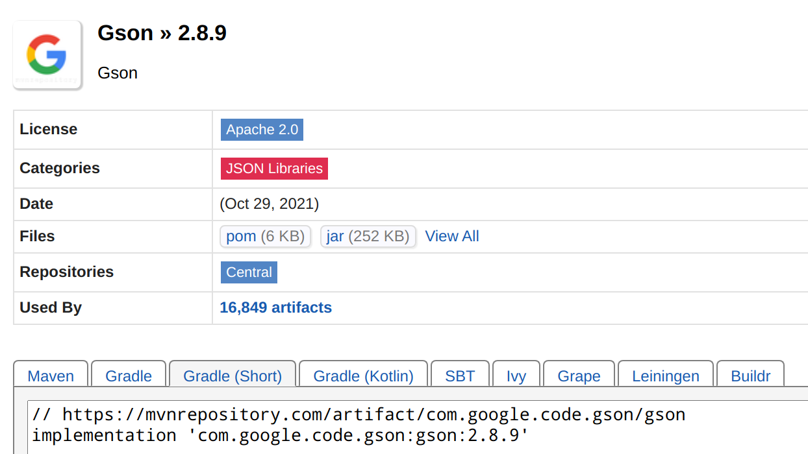
By the way, in China mainland, there may be some network issues accessing maven central repository. If so, you can use the mirror site of AliYun by replacing repositories of build.gradle with the following:
repositories {
maven { url 'https://maven.aliyun.com/repository/public/' }
mavenLocal()
mavenCentral()
}
[1] provided is deprecated, while api is similar to, but different with implementation. But implementation is the most common in daily programming. See more at Gradle Implementation vs API configuration.
SQLite
SQLite is a relational database management system. In contrast to many other database management systems, SQLite is not a client–server database engine. Rather, it is embedded into the end program.
If you installed Anaconda, a distribution of the Python and R programming languages for scientific computing, then sqlite3 is already on your computer. Suppose sqlite3 is on the PATH, you can type sqlite3 in the terminal to verify:
$ sqlite3
SQLite version 3.36.0 2021-06-18 18:36:39
Enter ".help" for usage hints.
Connected to a transient in-memory database.
Use ".open FILENAME" to reopen on a persistent database.
sqlite>
Typing sqlite3 without any parameter will launch a transient in-memory database, and you can type either .exit or Ctrl + D to exit the command prompt.
If sqlite3 command is not found, then you can download it manually or through a package manager.
Install
As for Windows, please go to SQLite Download Page, and download the compressed package under Precompiled Binaries for Windows. As you can see, the binary files for SQLite is very small. Then unpack it to any location you like. That't it! And you can also add it into the PATH environment.

By default, MacOS is bundled with sqlite3. As for Linux, you can download the precompiled binaries (sqlite-tools-linux-x86-xxx.zip) for Linux from SQLite Download Page. The steps are similar to those we described above.
Basic usages
By default, SQLite will connect to an in-memory database. If you need a persistent one, you can provide a file name.
$ sqlite3 test.db
If test.db is not found, it will be crated; otherwise, SQLite will connect to it. Note that in SQLite, a database is simply a standalone file. Alternatively, you can type .open test.db if you are already in the SQLite command prompt. .database will display current database, and .table will show tables in this database[1].
sqlite> .database
main: /home/zhongpu/Desktop/test.db r/w
You can type SQL command directly. For example,
CREATE TABLE foo(
a TEXT,
b INTEGER
);
INSERT INTO foo(a, b) VALUES('hello', 42);
SELECT * FROM foo;
.schema command can display the detailed information of a relation:
sqlite> .schema foo
CREATE TABLE foo(
a TEXT,
b INTEGER);
In general, SQL commands are stored in .sql files, and .read command can read SQL statements or dot-commands from external files.
sqlite> .read test.sql
More usages can be found at Command Line Shell For SQLite.
[1] All commands start with dot (dot-commands) are features of SQLite.
Cloud (1)
We have learned how to make to enable your own computer be a server in Section 1.5. But only the clients within the same inner network can access this website.
So how can you make your website be accessed by people all over the world? The code remains unchanged, and the only and minimal requirement is a public IP address.
Nowadays, cloud platforms facilitate the deployment by using a "pay-as-you-go" model, and therefore you do not have to own a physical machine as a server running your website.
Generally speaking, the cloud computing can be Infrastructure as a service (IaaS), Platform as a service (PaaS), or Software as a service (SaaS). The details of them are out of the scope of this book, and we only focus on how to deploy a Java EE project on the cloud. There are many vendors on the market provided by big technology giants, and just to name a few:
And roughly speaking, you may have two options to use the cloud service:
- It looks a real machine, and you can nearly do anything on this machine.
- It is just an application container, and you can only upload your project onto it.
Those two options have their own advantages and pitfalls. For example, the first one provides more flexibility as you have more controls, but it requires that the user must have some extra specialized skills (mainly on Linux). In the contrast, the second one is much simpler, but its functionalities is also limited.
Azure
In this book, we use Microsoft Azure as the cloud platform to deploy the website, because it provides free access for students.
[!TIP] You can go to Azure Students and apply for its free usage via your
eduemail.
Azure offers plenty of cloud services, including virtual machines, databases, application services. And here please choose application services, which is like the second option we mentioned above, and one can focus on the project itself even if she does not have much knowledge about command shells.
[!NOTE] You shall try out virtual machines if you are curious.
Cloud (2)
In this part, we will talk about how to deploy your website on Azure.
Create a Web App
To complete the steps in this article, you must have applied for Azure Students successfully.
- Step 1: Click the
App Serviceson the portal page:

- Step 2(a): Fill in the project details.
You have to create a new Resource Group[1] when it is the first time by clicking Create New:
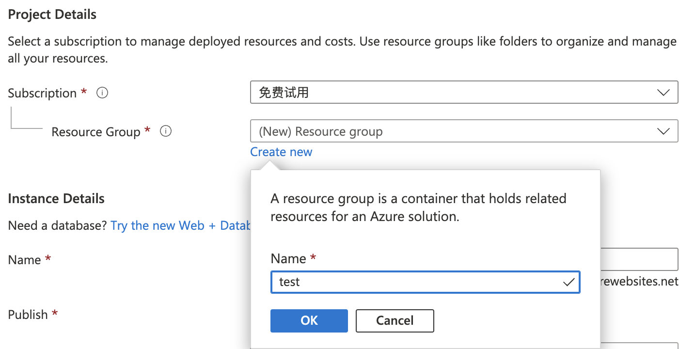
- Step 2(b): Fill in the instance details. You can input any name you like as long as there is no conflict[2]. In the writing of this article, we use the name
swufe.
Other settings: Publish (Code); Runtime stack (Java 11); Java web server stack (Apache Tomcat 9.0); Operating System (Linux). As for Regions, you can select an arbitrary one, but for the sake of Network performance, an East Asia region (e.g., Japan, Korea) would be preferred.
After that, it is fine to always click Next for Deployment, Networking, Monitoring, Tags and use the default values. Finally, click the Create button in the Review + Create tab.
If all goes well, you will see Your deployment is complete:

And you can also visit the default website through the URL as shown under the Overview tab of this newly created resource.
Deployment
In practice, you shall use git to deploy your website, and here we use Azure App Service extension in VS Code[3]. So please download and install it if it is on your own computer.
- Step 1: Install Azure App Service. Note that Azure Account and
Azure Resourceswill also be installed automatically.

- Step 2: Open a Java EE project in VS Code. Under
build | libs, right-click on the WAR file, and then clickDeploy to Web App. Then you will be asked to sign in via you account in Azure.
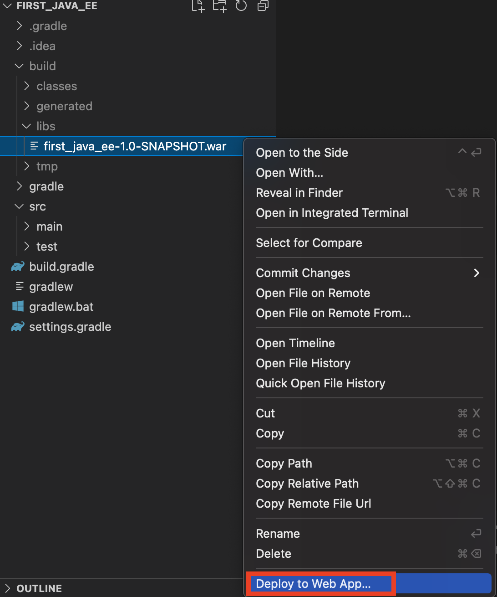
Repeat the process to click Deploy to Web App, and you will see the created App swufe, and your names should differ from it:
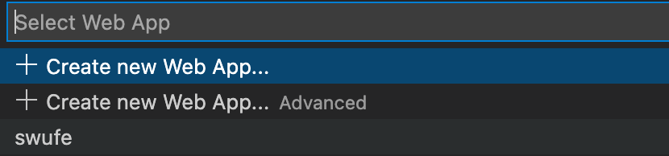
After that, you will be asked to configure the port, and you can use 80. Cool! Please have a coffee and wait until this deployment process is done:
Once the deployment is completed, it will print out the URL for your Web App. Click the link to open it in a browser, you can see the web app running on Azure!
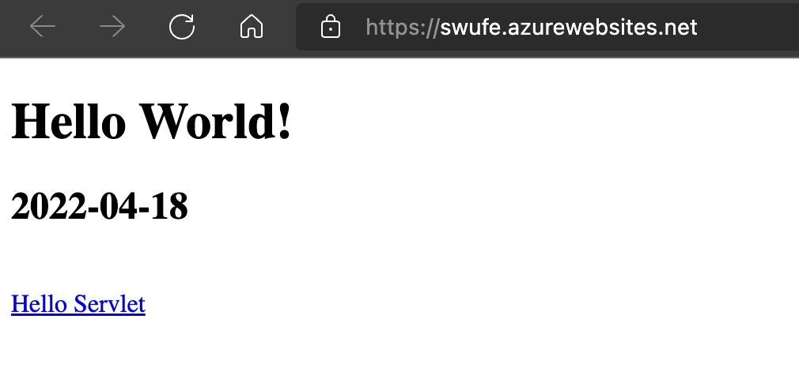
Custom domain name
As we can see, the default URL is http://<appName>.azurewebsites.net/. For example, the URL of this example App is https://swufe.azurewebsites.net/. To flex yourself, you may configure your own custom domain name (e.g., google.com, apple.com.cn, bob.xyz). Curious readers can explore how to set it up.
[1] Resource Group is to help you manage and separate different resources (including apps, networks) in Azure so that you are able to assign then the same permissions.
[2] The name here will be part of the URL (http://<appName>.azurewebsites.net/).
[3] This article is adapted from Java Web Apps with Visual Studio Code. There is also a plugin for IntelliJ IDEA, but it seems that it has some bugs.